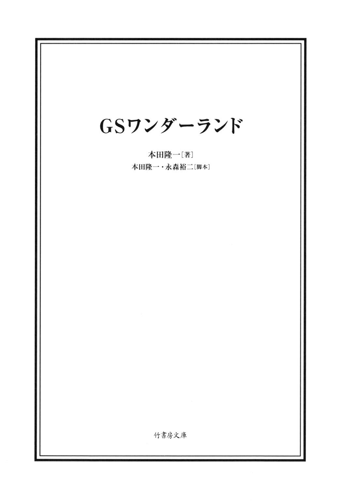
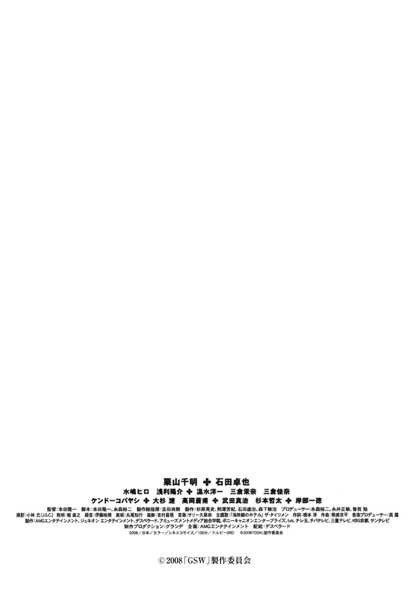
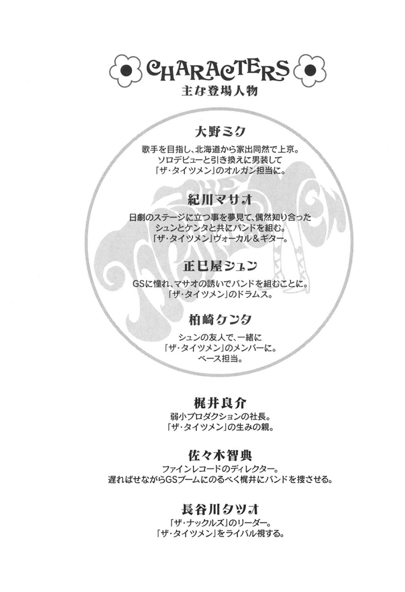

| ＧＳワンダーランド (竹書房文庫) | |
| 本田隆一 | |
| (2008) | |

この作品は縦書きでレイアウトされています。
また、ご覧になる機種により、表示の差異が認められることがあります。
一部の漢字が簡略字で表示されていることがあります。


一九六八年春
どうやらタイガースを超えるバンドがＧＳ界に登場するらしい。何の話かと言えばこの春にデビューするザ・ライオンズというバンドの事である。レパートリーが三百曲を超えているとか、ビートルズの曲なら何でもできるとか、とにかく凄い噂 が飛び交っていて、文字通り百獣の王としてＧＳ界に君臨するのも時間の問題であるという。
根っからのＧＳファンを自認する紀 川 マサオが、もちろんその噂を聞いて放っておく筈 が無く、日劇で行われるウエスタンカーニバルにライオンズが出演するとの情報をキャッチするや否や、必死の思いでチケットを入手。そして、夢にまで見たライオンズとの対面の日が、ついに今日訪れた訳である。
春の柔らかな日差しに包まれた銀座は、まるで不幸という言葉の意味すら忘れてしまったかのように、街全体がなんとなく浮かれているようであった。天高く掲げられた日劇の看板を見上げるマサオの心が躍り出したくなるようなウキウキした気分になったのも、ただライオンズに会えるからという理由だけでなく、この麗 らかな春の日和が少なからず影響していただろう。スキップしようかと思ったけれどやっぱり恥ずかしいので、普通に歩いてマサオは日劇の中へと入っていった。
マサオは都内の男子校に通う高校三年生で、〝進学クラス〟に籍を置いていた。来年にはもちろん受験を控えているが、高校二年の夏にうっかりハマってしまったグループサウンズ、いわゆる〝ＧＳ〟の所 為 で、今では校内の成績順で言うと後ろから数えた方が早い順位にまで落ち込んでしまっていた。でも当の本人にとってそれはどうでもいい事で、何 故 かと言えば、ＧＳのスターになって日劇のステージやテレビ、雑誌にと引っ張りだこになるのが自分の将来像であるからして、学校の勉強ができようができまいが、そんなのは自分の人生にとって何ら関係の無い事だと信じきっていたからである。
そんなマサオの一番のお気に入りＧＳは何かと言うと、それは本人にとっても非常に迷いどころで、例えば同じ質問を友人にされたら「ＧＳで言えばレンジャーズ、でもシャープ・ファイブの三根信宏こそ世界一のギタリストだと固く信じている」と、鼻息荒く答えるつもりだったが、今のところそんな質問を友人にされた経験は無い。というか、そもそもＧＳというヤツは女子中高生が聞くモンだろ、というのが世間一般の見方であって、マサオがいくらレンジャーズの『赤く赤くハートが』のボーカルや、シャープ・ファイブ『ゴールデン・ギター』のギタープレイの凄さを説明しても、そんなのは欧米のロックとかジャズの凄さに比べれば月とスッポンだ、と馬鹿にする輩 がクラスの大多数を占めていた。
もっともマサオがＧＳを好きになったのにはちょっとした理由があって、それはＧＳが、日本人が作った日本語の歌である、という事だった。当然、演歌とか歌謡曲はほとんどがそうだけれど、ロックの曲に日本語を乗せているところがいい。大体、外国のロックを聞いても何を言ってるのか全然わからないから、曲を聞いて何かに思いを馳せるとか、イメージを膨らませるといった事が困難で、そこへいくとＧＳは日本語だから、お城に住んでる女の子とか、フラれた男の気持ちとかをダイレクトに想像できるし、第一わかりやすいじゃないか。
というのがマサオの持論だったが、それを言った途端に「でも、所 詮 はビートルズとかストーンズの物真似だよね。英語詞を日本語に置き換えただけじゃん」「ＧＳの歌詞ってさ、なんか幼稚なんだよね。薄っぺらいっつうか」とやり返されてしまい、論争になった挙げ句、小学校時代からの友人を一人失うという、苦い経験までした事があった。
ともかく、マサオのＧＳ狂いに効く薬は目下のところ見当たらず、今日も今日とて、また新たに登場してきた話題のＧＳを一目見ようと、日劇の最前列に腰を下ろしていた訳である。ステージに照明が当たり、怒 涛 のような女性客の叫 声 と共に、ついに百獣の王ライオンズが姿を現した。漫才師もかくや、という程の巨大な蝶 ネクタイをしっかり締めて。
ザ・ナックルズ
「あのでっかい蝶 ネクタイのバンド、凄ぇカッコ悪かったな」
日劇のステージを見終わった帰り道、長 谷 川 タツオがボソッと呟 いた。それを聞いた正 己 屋 シュンと柏 崎 ケンタは、
「やっぱ、そうですよね」
「噂 なんて、てんで当てになんないっすね」
と、慌てて相 槌 を打つ。三人はザ・ナックルズというバンドに所属している仲間で、タツオがギター＆ ボーカル、シュンがドラム、ケンタがベースを担当していた。その他にギターのオレンジ上 田 とオルガンのシェリー浜 田 いうメンバーがいたが、それぞれ本名は上田健 一 郎 と浜田太 郎 という至って普通の名前であった。シュンとケンタは元々中学の時の先輩に当たるタツオに誘われてこのバンドに入ったのだったが、上田と浜田はタツオの同級生なので、当然メンバー全員に敬語を使っているのだった。
シュンとケンタが中学に入学した頃、当時中三のタツオの噂は既に耳に届いていた。それはどこの中学校にもあるような、「不良の先輩の武勇伝」的噂だったが、それが普通とちょっと違ったところは、例えばどこそこの高校生何人を一人で相手して全員ぶちのめした、とかそういったような蛮カラなものではなくて、十五歳にしてすでに七人の彼女がいるとか、子供を堕ろさせた事が二回あるとか、いや既に隣の小学校に子供が通っているらしいとか、そういったどちらかと言えば軟派な噂がその都市伝説の大半を占めている点だった。
シュンとケンタが初めてタツオに出会ったのは、（二人ともずっとそれを周りに隠し続けているのだけれど）中三の夏休み、二人で成人映画を観に行った時の事だった。父親から勝手に拝借したソフト帽と鳥打ち帽を目深まで被 った二人は、二時間サスペンスで「誰もが犯人だと疑ったけど実は違いました」という人みたいに逆に疑われそうな仕草で、こそこそと受付の前を通り抜けて、初めて目にする巨大な裸体に、えも言われぬ興奮を覚えたのだったが、その艶 かしい女優の体が脳内から消えぬ内にと駆け込んだトイレで、カツアゲにあってしまった。そしてその、苦労してやっと手に入れた人の興奮を打ち消してしまった憎むべき相手こそ、長谷川タツオその人だったのだ。
「お前ら、どこの中坊だよ」
タバコを吹かしながらタツオが言った。もう顔を見ただけで伝説のあの人だ、と悟ってしまったシュンとケンタは、この人にどんな小細工をしても無駄だと観念して、
「××第三中です」
と素直に答えた。するとタツオは少しニヤッとして、
「じゃあ俺の事、知ってんな」
と言って黙って右手を差し出した。シュンとケンタは頷 いて、ズボンのポケットからありったけの小銭を掴 んで出したのだけれど、本当に人間の運命とはほんの些 細 な事で全く違う結果に導かれるものであって、この時ケンタが渡した小銭の中に、ベースを弾く時に使うピックがたまたま紛れ込んでいたのである。
タツオの目がふとそれに留まった。
「あ、すいません」
ケンタが慌ててそれを引っ込めようとすると、タツオが徐 に、
「お前ら......バンドやってんのか？」
と聞いてきた。蛇 に睨 まれた蛙 状態の二人は、正直に二ヵ月前からビートルズに憧 れてベースとドラムの練習を始めた事、一緒にやろうと思ってたギターとボーカルの奴に彼女が出来て、二人ともデートとかそっちの事で頭がいっぱいでバンドを辞めてしまった事などを話した。すると意外にもタツオは取り上げた小銭を二人に返して、
「俺と一緒にバンドやらないか」
と、優しい、いやちょっと胡 散 臭い笑顔で二人を勧誘してきた。
驚く二人にタツオが気 障 な語り口で話した事によれば、タツオもタツオでビートルズスタイルのバンドを結成しようと考えていたらしく（それは今狙 っている女の子が主催するダンスパーティーで、その娘にイイところを見せたいという極めて不純な理由によるものだったが）、一週間後に迫ったダンパまでに、なんとかメンバーを集めようと奔走した結果、あいにく見つかったのはギターとオルガンだけで、肝心のリズム隊が見つからないのだという。
そもそもそんな、既に小学生の父親かもしれない、下手したらマリファナとかドラッグまで常習してるというような噂まである人の頼みを断れる筈 も無く、シュンとケンタはこれも運命と諦 めて、タツオの話を引き受けてしまった。
その夜、それぞれの家に帰った二人はまんじりともしない一夜を過ごした。いつかタツオさんの家に呼ばれる事があって、入ってみたら裸の女の人がたくさん出てきて、ガウンを着たタツオさんが、
「おう、お前らも混ざるか」
とか言われたらどうしよう。いや、それはそれで意外と楽しいんじゃないか、などと今日観た映画の影響で、色々と余計な想像まで膨らませた二人だったが、二人がナックルズに在籍している間の話で言えば、ついぞそんな事は起こらなかった。というか、タツオの彼女らしき人物の影すら見た事が無く、あの都市伝説は果たしてどこまで本当だったのだろうと二人は首を傾 げたが、まあ世の中の噂なんてものは大抵そんな物である。
驚 愕 の事実
話は戻って、日劇ウエスタンカーニバルを見終わった帰り道のタツオとシュンとケンタは、行きつけの喫茶店でコーラを飲んでいた。やや時代遅れの古びたテーブルや椅 子 が並ぶ店内には、学生運動家らしき若者たちが溢 れていて、珈琲 一杯で何時間も、日本の将来について熱い議論を続けているようだったが、タツオたちのテーブルだけはお通夜のように静まり返っていた。タツオがいつになく神妙な面持ちで黙り込んでいたからである。シュンとケンタも緊張して黙ってコーラを啜 っていたが、やがてタツオがゆっくりと口を開いた。
「本当にこの話を人に喋 っていいのかどうか、実は今でも迷っている......」
もともと人に何かを話す時に、ちょっと芝居がかった喋り方をする奇行がたまにある人だったから、まあ二人とも大して驚かなかったのだけれど、
「この事実が明るみになれば、日本の、いや世界の歴史がひっくり返るかもしれない」
と続けられて、おいおい、そりゃどういう事だ！ とさすがにビックリした。来年のアポロ月面着陸計画が世界の話題になっているけれど、実は俺、昔月に行った事があるんだ、とでも言い出しそうな雰囲気である。が、ある意味それにも決して引けを取らない、いや、二人にとってはそれ以上のインパクトを持ったある事実が、タツオの口からついに語られたのであった。
「ポール・マッカートニーとリンゴ・スターが秋田に来ている」
......世界のトップスターである。世界の音楽史を塗り替えた人物である。どうしてその二人が日本の、しかも東北地方に来ているのであろうか。ナマハゲでも見に来たのかとケンタは一瞬思ったが、それにしたらジョンとジョージはどうしたというのであろうか。ナマハゲに興味が無かったのか。
驚きのあまり頭が真っ白になって、口をあんぐりと開いたままになっているシュンとケンタに向かって、タツオは声をひそめて話を続けた。
「本当に凄い人ってのは、自分が努力して得た技術を惜しげも無く他人に伝授する事ができる人だって、俺は常日頃思ってるんだが、そういう意味じゃ、ビートルズはやっぱり本物だった。何しに来てるかって言えば、秋田でベースとドラムの音楽教室を開いてるっていうんだ。しかも驚いた事に、これは日本に限った話じゃなくて、世界中を点々として、各国の若者にロックの技術から精神論まで叩 き込んでるらしい」
「それ......どこ情報なんですか？」
興奮冷めやらぬシュンが口を挟む。
「『ミュージックライフ』の編集者からこっそり聞いたんだ。けどその人も、だからって、いつ彼らが日本に来てくれるかまでは、わからないって言ってた。ところが......本当に神様は俺たちの味方なんだなって感謝してるんだけど、偶然にも俺の従 兄 弟 が、秋田の山奥に入ってく二人を目撃したって、今 朝 教えてくれたんだよ。二つの情報を合わせて考えれば、どうしたって山奥で密 かに音楽教室やってるとしか考えられないだろ？」
シュンとケンタは大きく頷 いた。二人にとってこの話を肯定する大きな動機も無かったけれど、しかし否定する動機もまた持ち合わせていなかった。現にビートルズは、一九六六年のアメリカツアーを最後に、ライブをしたという情報は伝わってきていない。なるほど、彼らが自分たちの後継者を育てるために世界中を飛び回っていたのだとすれば、ライブが行われなかった理由も納得できるではないか。そこまで考えると、二人は居ても立っても居られなくなり、すぐにでも秋田に向かう電車に飛び乗りたい気持ちでいっぱいになった。
「俺たち、明日から秋田に行ってきます」
シュンとケンタが口を揃 えて言った。
「うん。......俺たちは、やっぱりこの五人が揃ってないと、バンド続けても意味が無いと思ってる......。お前たちが腕上げて帰ってくる日を信じて、俺たちはレコード会社への売り込みとか、戦略的な事やっとくから。絶対に一緒のステージ立とうな」
本当に、劇画みたいに、タツオの姿が輝いて見えた。友情とか、仲間とか、道徳の時間に習った感情を実感する事は今までほとんど無かったけれど、この時ばかりはシュンもケンタも、そういった青春っぽいものを大いに感じた。シュンの目には涙すらも浮かんでいた。
翌日、二人は早速秋田に向かって出発した。余談だが、結局そのおかげで、二人の履歴書には高校中退の輝かしき文字が一生記される事になった。
旭川の話
高校の卒業式を終えたばかりの大 野 ミクは、まだ雪の残る旭川の街はずれを、古道具屋目指して歩いていた。編み上げの赤いブーツがズブズブと雪にハマって歩きづらい。鼻歌で江利チエミの『アンチェイン・マイ・ハート』を口ずさんでいたが、いつの間にか気分がノッてきて、たまにすれ違う人が振り返るくらい、大きな声で歌っていた。周りを全く気にしないこの豪快な歌いっぷりが、彼女のある意味マイペースな性格を、道行く人にもわかり易 く示しているようである。
ミク自身の記憶によると、ミクが歌手を目指そうと真剣に思い始めるきっかけとなったのがこの歌だった。小さい頃から歌が大好きで、よく親戚が集まると美空ひばりの歌を歌って好評を博し、その度に小遣いをせびっていたのであるが、ある日ラジオから流れてきた『アンチェイン・マイ・ハート』を偶然聞いて以来、この曲の虜 になってしまったのである。もちろん大元はレイ・チャールズがヒットさせたＲ＆ Ｂであるが、江利チエミの方は、なんと言うか、もうちょっとジャズっぽくて、決して本家にも劣らない名曲なのであり、とにかく、どちらかというと演歌ばかりを聞いてきたミクにとって、それは価値観をひっくり返されるような、衝撃的な歌なのであった。
その日から、ミクの歌手への憧 れは、単なる夢ではなく現実のものとなって、彼女の人生を動かし始める。元々大学に行く気はあまり無かったけれど、高校三年の三者面談で「私、歌手になります」と宣言するや否や、大野家は大パニック、特に中学校の教諭をしている父親の猛反対にあって、ミクは半ば勘当されるような形で、この春から単身東京に出て行く事になったのであった。
もっとも母親は密 かにミクを応援していて、引っ越しの資金を父親に内緒で援助してくれたのだけれど、それでも来月からの家賃は当然自分で稼いでいかなければならない。ミクは東京に着いたら、まず雑誌で調べた芸能事務所を片っ端から当たっていくつもりであった。その数だって本当はそう大して多くはないのだけれど、まあ自分の歌唱力がわかれば、一つ目か二つ目の事務所あたりで「是非、ウチに来てくれ！」なんて言われて、来月からいきなり高額のお給料を貰 えるのだろうと、マイペースなミクは勝手に思い込んでいた。
で、歩きづらい雪の中を、何しにテクテク古道具屋まで向かっているのかと言えば、ちょっと前にそこで見かけたオープンリールプレーヤーを購入するためであった。事務所で歌を披露する前に、オープンリールを聞きながら一人で練習しようと考えたのだが、今までは家にあった父親のオープンリールプレーヤーを勝手に拝借して使っていたので、東京には持っていけない。レコードプレーヤーを買う事も一瞬考えたのだけれど、ミクの音楽コレクションはラジオから録音したオープンリールのテープの方が圧倒的に多かったので、どうしてもそのプレーヤーが欲しかった訳である。
ミクはその資金を捻 出 するために、昨日叔父さんの家に出向いて、美空ひばりのレパートリーを、アンコールも合わせると計十曲も歌ってきた。やはり年配の人には『アンチェイン・マイ・ハート』よりも美空ひばりの方が圧倒的に受けがいいので、そのためにミクは、ひばりの曲のレパートリーを随分増やさねばならなかったのであるが、『真っ赤な太陽』だけは個人的にも特別好きな歌だったので、これだけはやや激しめの振り付けで披露したところ、酒の入った叔父さんから思いもよらぬ特別報酬を受け取ったのであった。
店に着いたミクは、早速お目当てのオープンリールプレーヤーを手に取ると、そそくさと店主の五十近いおじさんの元へそれを持っていったが、ふと、そのおじさんの横に置いてある一枚の暖 簾 に目を奪われた。やや大きめの真っ白な暖簾には、達筆な筆文字で「じょん・のれん」と大きく書かれている。よもやこんな片田舎にまでビートルズブームは訪れているのだ。ミクは、東京で新しく住む部屋にこんな暖簾があったらお洒 落 かな、と、ふとそう思って一瞬買おうかと思ったけれど、おじさんが自分で書いた一点ものなので、一万円以下にはまけられないと言われて、あっさり諦 めた。後で振り返ってみると、なんであの時あんな物が欲しかったのだろうと、自分でも疑問に思うような物が人生にはよくあるけれど、ミクにとって、これもそんな物の一つだったろう。
ファインレコード
今年四十を過ぎた佐 々 木 智 典 の額から滲 み出た汗は、そのまま顎 を伝って、彼の目の前に広がる巨大な会議用テーブルの上に、ポタポタと音を立てて落ち続けていた。そのテーブルをぐるっと囲んで座っている重役連が、皆一心に佐々木の顔を覗 き込んでいる。上座では、社長の松 田 重 吉 と専務の鎌 田 、常務の三 崎 が、一際鋭い視線を佐々木に浴びせかけていた。
佐々木がファインレコードに入社して、二十年近くの月日が流れていた。その間ずっと、彼は童謡部のディレクターとして極めて真面目に勤務してきたのであったが、どうして童謡部に配属されたのかと言えば、それは意外にも彼が自分で志願したからであった。ファインレコードは戦前から続く老舗 のレコード会社で、主に演歌を主流として業績を伸ばしてきた会社であったが、佐々木はどうしても、この演歌というものが好きになれなかった。もっと若者に支持されるようなイカしたレコードを出したい。佐々木は密 かにそう願ってはいたのだが、何せファインレコードには、演歌を作り続ける歌謡部を除けば、もう童謡部しか残されていない。まだ二十代半ばだった佐々木は、よし、それならば童謡のジャンルから、若者に支持されるような新しくてカッコいい音楽を出し、世間をアッと言わせてやろうと野望を抱き、伝統的童謡を若者のリズムに乗せた新ジャンルのレコードを何枚か発売してきたのであった。が、そんな斬新過ぎる試みに気付いた若者は皆無に等しく、五年程前に出した、例の♪ しょ、しょ、しょじょじ～で始まる童謡をロック風にアレンジした、『ロカビリー證 誠 寺 』が、僅 かに小ヒットを記録したのみであった。
そんな訳で、彼が部長を務める童謡部の肩身は、ここファインレコードの中で一際小さく、今や、ちゃんとしたレコードはおろか、ソノシートさえもなかなか作らせてもらえないような状況になっていた。そんな時に訪れた空前のＧＳブームである。他の各レコード会社から発売されたＧＳのレコードは軒並み大ヒットを記録している。この機会を利用して、「うちからも是非ＧＳを出すべきです」と勢い良く提案した佐々木の意見は、このブームを黙って見過ごす訳にはいかないと、当然考えていた会社の重役連の間でも取り上げられ、かくて、佐々木は新しく立ち上げられたＧＳ部の部長として、華々しくデビューしたのであった。が、肝心のＧＳバンドが一向に見つからない。もう探し始めて二ヵ月以上の月日が経っていた。
「今凄いよね、ＧＳ」社長の松田がポロリとこぼす。「タイガースの『銀河のロマンス』六十七万枚だってさ」
「まだまだイケますよ」
「当社も出遅れ感は否めませんが、一気に巻き返しますんで！」
太鼓持ちの鎌田と三崎が慌てて社長をフォローしたが、次の瞬間にはその鬱 憤 を晴らすかのように、二人の怒りの矛先が汗まみれの佐々木に向けられた。
「佐々木君、君が言い出したんだぞ。童謡のソノシートなんかより、ＧＳやりたいって」
「ＧＳブームもいつまで続くかわかりません。あと三ヵ月以内に必ずバンドを見つけ出して商品化してください」
「はい」
佐々木は力強く返事をしたが、心の中で「あの梶 井 のお調子野郎、待ってろ！ キツく言い聞かせてやる！」と、呪 いのように叫び続けていた。
お調子野郎
「童謡部」と書かれた扉の上から「グループサウンズ部」と書かれた紙が、いかにもとって付けたように貼られているドアの中。八畳程の小さな部屋の中の応接セットに、「お調子野郎」と佐々木の心の中で罵 られた梶井良 介 その人が座っていた。と、この部屋の主である佐々木が、散々叱 られたらしく額や首筋の汗を拭 き拭き入ってくる。
「おはようございます」
梶井が慌てて対応する。その顔を見た瞬間、佐々木の顔に「この野郎、誰の所 為 で怒られたと思ってやがるんだ」という怒りの表情が一瞬浮かんだが、不思議とこの梶井という三十過ぎの、なんというか悪気の無い、飄 々 とした表情を見てしまうと、佐々木はいつも怒る気を無くしてしまうのだった。
二人が出会ったのは丁度佐々木がＧＳ部を立ち上げて間もない二ヵ月程前、佐々木の行きつけのバーのママが、芸能プロダクションの社長がよく店に来てるわよ、という事で紹介してもらったのがきっかけだった。梶井は「オフィス梶井」という新興のプロダクションを立ち上げたばかりの若社長で、「そんな若者のバンドなら、いくらでも見つけられますよ」と、調子良く答えたので、佐々木も機嫌良く頼んだのだったが、「あの人、お酒入るといつも調子良いのよ」と、後でママに教えられて「おいおい、早く言ってくれよ」と思ったが、文字通り後の祭り、結局ズルズルと二ヵ月が経過したが、未 だにバンドを見つけられていない状況なのであった。
自分のデスクに腰掛けながら、佐々木が言った。
「で、バンド見つかった？」
応接用の椅 子 から慌てて立ち上がると、梶井は佐々木のデスクの前まで行って、
「すごい頑張って探してはいるんですけど......」
と、弁解した。
「すごいって、何基準のすごさよ？」
「僕基準ですけど......」
「『銀河のロマンス』六十七万、『小さなスナック』四十万。どこも二匹目のドジョウ狙 って、新バンドわんさかデビューさせてんのよ」
さっき社長から言われた事を、そのまま梶井にぶつける佐々木だったが、当の梶井は、いつものように悪 怯 れもせず、
「知ってます」
と、あくまでマイペースだ。
「おお、悪かったね、知ってる事偉そうに言って」
「またまた」
「君んとこだって今抱えてる歌手だけじゃ辛 いでしょ？」
「あ、今いません」
「え？ 何かいただろ、ムード歌謡歌ってた」
ああ、そうか、まだ佐々木さんには言ってなかったなと思い出した梶井は、
「五月雨 千 鶴 子 ですね。彼女、先月妊娠して辞めました」
と、ちょっと曇った表情になってしんみりと呟 いた。
五月雨千鶴子。彼女こそ梶井が自分で会社を興そうと思うきっかけとなった人物であり、今までで唯一、渾 身 の力を込めて売り込んできたタレントだった。もともと大手プロダクションで伸び悩んでいた彼女が、事務所を移籍したいとある人物に相談し、その人物から紹介を受けた梶井が彼女をお抱えタレントとして立ち上げたのが今の「オフィス梶井」の起源である。
以来梶井は彼女を売り出すべく努力に努力を重ね、ムード歌謡の新譜を出せば、それこそ北は北海道の場末のスナックから、南は九州の名も知らぬ立ち飲み屋まで彼女と一緒に出向いて、オープンリールとマイクだけで新曲発売キャンペーンを展開してきたのであった。それが、
「人生の大きな転機が訪れたので辞めさせていただきます。
今までありがとうございました」
という、たった二行の手紙だけ残して行方 を眩 ませたのが、つい一週間程前の話なのであって、梶井にとっては語るも涙の物語なのであるが、そんな事はちっとも関係無い佐々木は、
「あーあ、俺も妊娠でもして辞めたいよ」
と、皮肉まじりに言い放ち、
「頼んでるの君んとこだけじゃないからさ、見つける気ないんなら、手引いてもらって構わないから」
と、さらに梶井の心の傷口に塩を塗るのであった。
もっとも五月雨千鶴子無き今となっては、所属タレントゼロのオフィス梶井にとっても、バンド探しは会社の死活問題に関わる事なので、
「いや......頑張ります。絶対にいいバンド見つけてきます！」
と、高らかに宣言したのであったが、根っから調子良く今まで生きてきた梶井にとって、もちろん現時点でそんな当てはどこにも無かった。
家出少女
買ったばかりのオープンリールと、ありったけの洋服（といっても一週間分にも満たない量であったが）を鞄 に詰め込んで、いざ憧 れの東京の地に立った大野ミクであったが、とにかくまず住む処 を見つけないと、今夜は公園に寝泊まりするのか？ という切羽詰まった状況にあったため、都会の華やかさに目を奪われる暇も無く、すぐに家探しを始めたのであった。
東京の事はちっともわからなかったけど、高校のクラスメイトで東京の大学に進学する奴は当然のごとく一人暮らしを始める、じゃあそういう奴がいっぱいいる所に行けば、一人暮らしサイズのアパートなり下宿なりが沢山あるのだろう、東京の大学ってどこだ？ ああ東大か、じゃあ本郷か、という短絡的な発想で、ミクは本郷で家探しを始めた。大した苦労も無く、最初に訪ねた不動産屋で手頃な四畳半の下宿を見つけたまでは良かったが、敷金やら最初の家賃一ヵ月分やら、手数料やらの、ミクにとっては大金を支払った段階で、母親から持たされた小遣いのほぼ全額を使い切ってしまっていた。
一難去ってまた一難、今度は真剣に仕事を見つけないと、二、三日中にはゴミ箱を漁 って御 馳 走 にありつく羽目になるぞ、と焦りを感じ、ミクは持っていたある一つの雑誌に掲載されているタレント募集の広告を頼りに、事務所へ体当たりをかける覚悟を決めていた。もっともその広告には「男性バンド大募集」と書かれていたのだけれど、「男性バンド募集」じゃなくて、「大 募集」だから、ひょっとしたら沢山いるバンドの一つぐらいは女の子でもいいんじゃないか、とか思ってくれないかな、と勝手に思い込み、その募集をしている「オフィス梶井」を目指して、花の都東京の中心地、憧 れの銀座へと、電車に乗って向かったのであった。
追いつめられても追いつめられても、まあなんとかなるだろう、と思えてしまう彼女の楽天的な性分は、しかしその二時間後には、脆 くも崩されてしまい、現実の厳しさを思い知らされるのであったが、そんな事とは露知らず、今は車窓から流れていく春の日差しに満たされた都会の街並に心弾ませ、希望に胸膨らませるミクなのであった。
そのミクの希望を打ち砕いた張本人こそ、もちろん梶井良介その人であった。事務所の扉を叩 き、出てきた梶井に向かって履歴書を差し出したミクを訝 しげに見て、梶井は一言、
「え？ 男しか募集してなかった筈 だけど」
と、突 っ慳 貪 に返した。
「あ、でも、どうしても歌手になりたくて、他に今募集してるとこ見つかんなくて、それでなんとかしてくんねぇかなって思って」
「いや、性別違うじゃん。無理だよ。ってか口の利き方直した方がいいよ」
「あ、でもピアノの県大会で優勝してるんで」
「でも、って。日本語間違ってるし」
「......じゃあ、なんか他のところ紹介してくれるとか......」
「え......ずうずうしいなぁ......」
少し呆 気 に取られた様子の梶井は、改めてミクの顔をまじまじと見た。
目鼻立ちのくっきりとした、どことなくエキゾチックな感じのする顔立ちで、いかにも泥臭く、田舎のスナックにいそうなこのメイクさえ直せば、ひょっとするとソロの歌手として成功できるかもと一瞬思ったが、何せ五月雨千鶴子に裏切られて日も浅く、心の傷は逆に深く残っている状態。女は暫 く信用するまいと心に決めていたので、梶井は一応履歴書だけ受け取って、体よく断ってミクを追い返すと、事務所の扉を閉め切ってしまった。
追い返されたミクは、事務所の扉に一発強烈な蹴 りを入れるのを忘れずに、そのまま銀座の街へと繰り出した。明日からどうやって生きていこう。いや、諦 めるのはまだ早い。そうだ、本屋で芸能雑誌を立ち読みして、片っ端から芸能事務所を当たっていこう。そう考えて、そのまま銀座の大きな書店に向かった。
それから一週間程は、そんな無謀なミクの挑戦も懲りずに繰り返されたのであったが、東京に着いて十日目を迎える頃にはすっかり辟 易 してしまい、仕方ない、しばらくは肉体労働で稼いでいくかと、町場の印刷工場でアルバイトを始めた頃には、しっかり現実の厳しさを味わわされた、ミク十九の春であった。
山奥のジョン・レノン
今 朝 二人掛かりで格闘して捕えた猪 を、シュンとケンタは美 味 しそうに頬 張 っていた。二人が秋田に来て三ヵ月。山奥の過酷なサバイバル生活は、二人の少年をかくも逞 しく育て上げていた。しかし、その目的たる肝心のポールとリンゴは未 だに見つかっていない。まあ何と言っても世界のビートルズである。そんなに簡単に見つかる方が逆におかしい。そう信じ込んでいるシュンとケンタは、何の疑いも無く今日もまた秋田の山奥で、いつ終わるとも知れない捜索活動を続けているのであった。
無数の藪 蚊 が二人を襲い続け、目 眩 がするような暑さの連日に、ついに夏も本番かと思い始めたある日の事。蝉 時雨 が聞こえ、今日もまたスーパースターを発見できなかったと、虚 しく夕食の準備を始めたシュンとケンタの耳に、信じられない歌声が微 かに、しかし確実に聞こえてきた。他でもない、ビートルズの『シー・ラブズ・ユー』である。
「おい......！」
「ホントかよ......」
ああ、神様は本当にいたのだ。しかも秋田の山奥に。シュンとケンタは、用意していた鍋をひっくり返したのも気付かない勢いで、その神様の奏でる音の方角目指して、一目散に駆け出した。もう無我夢中だった。ついに、ついにポールとリンゴに会えるのだ。会ったら会ったで、最初になんて言おう。いや、言葉なんか通じなくたって「おお！ ニッポンのワカモノ！ アナタたーちに、オンガク教えーる目的で、ワタシたち、イギリスからきーました」と熱く抱擁してくれるに違いない。そして手取り足取りベースとドラムを教えてくれて、その手ほどきを受けた俺たちは、東京に帰ったらいきなり取材陣に取り囲まれて、「ああ、彼らは本当にいい人たちでした。これからは僕たちが、その恩返しになるように、素晴らしい演奏を皆さんに聞かせたいと思ってます」と答え、日本で唯一のビートルズの弟子として、スター街道をまっしぐらなんだろう。二人がそう考えながら走っている内にも、神様の奏でる音は次第に大きくなっていく。遠くの山に落ちかかった夕日が、もう完全にその姿を隠そうとし始めた頃、二人はついにその音の正体を突き止めた。
ジョン・レノンだ！ ああ！ 何と言う事だ！ ジョン・レノンが！ あの世界のジョン・レノンが！ 山奥に一人、今こうして二人の目の前にポツンと座っているではないか！ しかもフォークギター片手に！ 先程から聞こえていた『シー・ラブズ・ユー』の正体はトランジスタラジオだった。そこから聞こえてくるメロディーに合わせてジョンがギターを奏でながら、歌を口ずさんでいたのだった。シュンとケンタは、もうどうにもならない程、体が震え出してきてしまい、緊張のあまり喉 がカラカラに渇き、何か喋 る事も侭 ならなかった。噂 ではポールとリンゴがいる筈 であったが、しかしそんな事を冷静に考えられるような大人の余裕を、二人が持ち合わせている筈はなかった。ジョンに、世界のスーパースター、ジョン・レノンに何を話しかければいいのか。と、瞑 想 するように目をつぶって歌い続けていたジョンが、ようやく二人の存在に気付いた。
「なんだ、お前ら」
これは......。日本語である。しかも流 暢 な日本語である。この時、初めて顔を上げたジョンを見て、シュンとケンタは思った。『サージェント・ペパーズ・ロンリー・ハーツ・クラブ・バンド』の写真で見た時よりも、大分伸びた髪と髭 に覆われて、今までよくわからなかったのだけれど、よく見ると随分と純和風な顔をしている。ジョンって、こんなに和風の顔だったかしらん、と遠い記憶を取り戻している間に、またしても流暢な日本語で、
「お前ら、何しにこんなとこまで来たんだ？」
と、聞いてきた。
違った。ジョン・レノンじゃなかった。誰なんだ、こいつは。とっぷりと日が暮れて、満天の星空が三人の頭上を覆い始めた。髭の所 為 で四十代にも見えるその男は、
「まあ、せっかく来たんだ。今日は山奥のパーティーと洒 落 こもうぜ」
と、一人で勝手に御 馳 走 の準備を始めた。
教祖
ラジオからは相変わらずビートルズが流れている。多種雑多の虫たちが、都会では聞いた事の無い個性的な歌声を発しながら、リバプールサウンドに独特のハモリを付けている。薪 を取りに行っている間に、シュンとケンタから勝手に「教祖」とあだ名をつけられたこのサイババのような男は、そんな事とは露知らず、猪 やらカブやら雑草やら、本当に食べられるのかわからない、やけに色の派手なキノコやらが入った、秋田山奥流寄せ鍋を、二人に振る舞った。
やがて食事も終わり、ラジオから流れていたビートルズがいつしか浪曲の放送に変わった頃、教祖は側 に置いてあったギターを徐 に取り上げ、チャック・ベリーの『ジョニー・Ｂ・グッド』紛 いのロックンロールをかき鳴らした。
巧 い......。その指さばきは、シュンとケンタが今まで見てきたバンドマンたちの中でもダントツのレベルで、二人とも思わず呆 気 に取られてしまった。ポールが見つからなかったとしても、なんだったらこの人と一緒にバンドを組めば結構イケるんじゃないかとケンタは一瞬思ったが、でもなんというか目に滲 みるような、あんまりと言えばあんまりな教祖の体臭に、「でも、もしホントにやるんだったら、ちゃんと毎日お風呂に入るように躾 けないといかんな」とか考えたりしていた。
「バンドか何か、やってたんですか？」
教祖が奏でるギターの間合いを見てシュンが尋ねると、教祖はちょっとだけ嬉 しそうな顔をして、
「ひょっとして、お前らもバンドやってんのか？」
と、逆に尋ね返してきた。
「ええ。実は僕たち、東京でＧＳバンドやってたんですけど、この辺でポール・マッカートニーとリンゴ・スターが音楽教室やってるって聞いたんで、是非入学したいなぁと思って探してたんです」
「そうか、ビートルズも音楽教室やってんのか」
......ビートルズも ？ 不思議そうに見つめる二人に向かって、教祖は、
「奇遇だな。実は俺も、チャック・ベリーがこの辺でギター教室やってるって、バンマスから聞いてな、それでそこ行って腕上げて来いって言われて、ずっと探し続けてるんだよ。かれこれもう三年になるかなぁ......」
と続けた。
そんな筈 は無い。チャック・ベリーは、確か昨年あたりに『バック・トゥ・メンフィス』とかいうレコードを出していたと思うし、それが日本で、しかも秋田で録音されたとか、彼が日本に潜伏しているとか、そんな噂 は聞いた事が無かった。「教祖様、それ多分騙 されてますよ」と喉 まで出かかって、シュンとケンタが、今目の前にいるこのサイババと同じように、秋田の山奥を毎日のように徘 徊 している自分たちの情けない姿を客観的に思い浮かべて、何か取り返しのつかない悔恨の念に苛 まれるのではないかという、どうしようもない不安に襲われそうになった刹 那 、ラジオから突如として聞き覚えのあるバンド名が響いてきた。
「では続いて、今月デビューする新人バンドをご紹介しましょう。ヤングなビートにフレッシュな歌声。『ザ・ナックルズ』のみなさんです！」
「どうも初めまして。リーダーのタツオです」
「初めまして。今月デビューという事ですが、バンド自体はいつ頃から活動しているんですか？」
「えーと、一年ぐらい前からですね」
「ずっとこのメンバーで？」
「いや、今回のデビューに合わせてメンバーを入れ替えまして、実力派を揃 えました。みんなやる気満々で気合い十分です」
もう疑う余地はなかった。騙されたのだ。自分たちもこのサイババも。きっと東京のバンド連中が、不必要になったバンドマンを解雇する際に、波風立たないようにそっと立ち去らせる、これは伝統の裏手法なのだ。そこまで考えると、シュンもケンタも、もう一目散に、一番近くの駅を目指して走り出していた。ポール・マッカートニーに片言の日本語で、「教えてやってもいいけど、その前にちゃんと払うもん払ってよ」と言われる場合を考えて、一応ちょっと多めの小遣いをリュックの底に隠しておいたのだが、今はその金で東京行き最終夜行列車の切符を、鼻息も荒く購入していた。
走る列車の中。疎 らにしかいない客たちも、もう深い眠りに落ちているのか、誰一人として喋 っている者はいない。シュンもケンタも、心に溜 め込んだ怒りのパワーは、それこそ彼らの胸を突き破って飛び出してくるぐらいに膨張していたけれど、今ここで、それを言葉にして出してみてもただただ虚 しいだけと感じ、二人とも俯 いたままで何も喋ろうとはしなかった。
ケンタがふと視線を窓の外に落とす。明かり一つない広大な野畑が一面に広がっているのか、窓ガラスには疲れた自分の顔しか映っていない。と、何かがその暗 闇 の中を、自分の顔とオーバーラップしながら走っているのに気付いた。なんだろう。猪か？ それにしては随分背丈が大きいようだし、よく見ると二足歩行しているようにも見える。しかも馬の鬣 とライオンの髭 のようなものを併せ持った、ギリシャ神話に登場してきそうな奇怪な生物が、列車と並行して、ちょっとずつこちらに近づきながら、物凄いスピードで走っているのだ。
「あれ！」
ケンタが思わず口に出して指差した方角をシュンは見て驚いた。確かに野獣が走っている。目を細めてその魔物を見極めようとしていたシュンが、
「あれ、教祖じゃないか！」
と叫んだ。確かに、あのサイババのような教祖が、闇の中を疾走していた。しかも満面の笑顔でこちらに手を振りながら。
「ホントだ！ 教祖だ！」
ケンタが嬉しそうに叫びながら窓を開けようとした瞬間、列車が鉄橋に差し掛かった。と、教祖が「あ～」と、ちょっと情けない声を出しながら、下を流れる川目がけて真っ逆さまに落ちていった。
「..................」
「大丈夫かな......結構な高さだったけど......」
ケンタが心配そうに聞くと、シュンは、
「大丈夫だろう。教祖だから」
と、何 故 か理由も無く訳知り顔で言うのだった。それを聞いたケンタも、
「......そうだよね。教祖だもんね」
と、これまたまったく根拠の無い理由で納得してしまうと、開こうとしていた窓からそっと手を離し、二人は疲れ果てた体を休めるように、あるいは明日からの戦いに備えるように、深い深い眠りについたのであった。
マサオの友人
この世の中で、やる気の無い奴に楽器を教える事程、困難な事は無い。マサオは今そう思っていた。何しろやる気が無いんだから上達もへったくれも無いし、「この曲レコードがすり減るぐらい聞いてこいよ」と言ったって、本当に針を落としたのかどうかも怪しい程、新品同様の状態で「ああ一応 聞いてきたよ」と、平気な顔して返却してきやがる。誰の事かと言えば、今マサオの部屋で、彼の目の前にあるベッドに座って、ギターをいじっているクラスメイト、村 上 大 悟 の事である。こいつだったら洋楽にも造 詣 が深いし、まあ一緒にバンドを結成できる見込みはあるかなとマサオが勝手に思い込み、自分の使っていないエレキギターと、課題曲の『ゴールデン・ギター』のレコードを貸したのは、早二ヵ月前の事である。しかしこの体たらくぶりはどうだ。曲を覚えるどころか、ギターのチューニングすら合っていないではないか。
「やっぱ、無理だよ」
やりたくもないエレキの手ほどきを一から受けていた村上が、耐えかねたように言ってギターをベッドの上に放り投げた。
「おいおい」
「いや、ちゃんとやればさぁ、できると思うけど」
「じゃ、ちゃんとやってくれよ」
マサオがすかさずツッコむ。しかし村上にとってみれば、推して知るべしといった心境である。
「お前、どうすんの？ 受験」
ふと、村上が聞いた。
「受験？ 受けない」
飄 々 とマサオが答える。
「で、どうすんの？」
「ＧＳやって日劇出る」
「バカだろ、お前。出れるわけねぇじゃん」
「なんで。やってみないとわかんねぇじゃん」
「いや、可能性に賭 けるのは勝手だけどさ、俺巻き込むなよ」
「だって、お前しかやってくれそうな奴いねぇんだもん」
「お前、ウチの学校でいるわけないだろ。一応、進学校なんだから。しかも三年だし」
「あーあ、ロマンがわかってねぇなぁ、お前は」
童貞の友達に向かって「あーあ、こんな楽しい事を知らないなんて、可哀想な奴だな、お前は」と言う時のような哀れみの表情で、マサオが呟 いた。もっともそんな彼自身、れっきとした童貞少年に違いなかったのであるが。
「何がロマンだよ」
こちらもまた、間違いなく童貞の村上少年が言い返す。
「世の中すげぇぞ。サイケデリックでアングラだぜ」
「意味わかんねぇよ」
「学園紛争とか、すっげぇじゃん。日本中がお祭りやってんだよ。こんな時に学校なんか行ってられっか、っつうの」
「バカ、あれは学校行ってからやるもんだろ」
「ま、どっちにしても俺、二学期から学校行かないから。君と会うのもこれが最後だと思うけど、悲しむなよ」
「ふざけんな」
ベッドの上に放り出してあった鞄 を掴 むと、付き合いきれん、と言わんばかりの表情モロ出しで、村上は部屋を出て行った。
まあ、あいつとも付き合いが長い。こんな事ぐらいで本気で怒ったりする奴じゃない事は、マサオが一番よく知っていた。
一人きりになった部屋で、マサオは『ゴールデン・ギター』の早弾きを始めた。使っているギターは、今から二年前の発売と同時に、四万二千円の大金を親にせびって買ってもらった、ヤマハのＳＧ─２の赤である。こんな高価な物をポンと買ってもらえるという事からして、マサオの家庭は中流の上というより、上流の下、と言った方がよりその家庭階級を正確に言い当てているだろう。
都内の貿易会社に勤める父親と、専業主婦の母親の間に生まれた一人っ子で、幼い頃から随分甘やかされてきたという事もあり、今や立派にエレキを握った長髪の不良になってしまった訳である。長髪と言ってもまだ伸ばし始めて一年ちょっとなので、耳が少し隠れるくらいだったけれど、それでも未 だに舟木一夫みたいな髪型が溢 れる優良進学校では十分な不良であって、生活指導の先生からは毎日暗黙の圧力をかけられているという有様だった。
一体いつになったらバンドを結成できるのだろうか。柄にも無く、マサオはふと不安になった。村上の言っていた事にも確かに一理ある。進学校の三年生からメンバーを集めようという方法論が、確かに間違っていたのかもしれない。じゃあどうすればいいのだ。友達を集めてバンドが組めないのであれば、これはもうプロのバンドにボーヤとして弟子入りして、そこで血の滲 むような努力の日々の果てに、メンバーに加えてもらうしか無いだろう。そこまで考えるとマサオは居ても立っても居られなくなり、先週行ったばかりのジャズ喫茶『ＡＣＥ』で貰 ってきた「今月の出演バンドスケジュール」が記載された紙を勉強机の引き出しから引っ張り出すと、食いつくように眺め始めた。
タイガース、スパイダース、ワイルドワンズ、ブルージーンズ......。既に大御所の名前がずらりと並び、ちょっとクラクラしてきた。こんなバンドが、何の経験も無い一高校生の自分を果たして雇ってくれるのだろうか。もっと無名なバンドは無いかしらん......。そう思いながら目を皿のようにして探していく。アウトキャスト、テリーズ、ナポレオン、ピーコックス、スケルトンズ、マミーズ......。
と、ＧＳマニアのマサオですらまだ聞いた事の無いバンド名が突如として目に入った。「ザ・ナックルズ」。よく見るとデビューライブと書かれている。道理で知らない筈 だ。おお、しかもその記念すべき初ライブは、なんと明日の夜ではないか！
もうマサオの頭の中では、いつものように調子のいい空想が始まっていた。明日ライブを見た後に、いきなり楽屋を訪ねよう。「いやぁ、演奏、滅茶苦茶カッコ良かったです」とかなんとか適当な事を言って。そうすると「おお、俺たちの音楽がわかるなんて、お前は見込みあるな」とか言われて、その場ですぐボーヤに採用されるだろう。で、きっとそこのギターの奴より俺の方が上手い事に案外早く気付かれて、いつの間にか俺はナックルズのギター担当になり、で、俺の演奏を見た「シャープ・ファイブ」が、是非うちに来てくれないか、とスカウトしてくる。ああ、俺は恩になった「ナックルズ」を裏切るべきなのか、憧 れの三根さんのもとに行くべきなのか......。マサオの妄想劇にＢＧＭを付けるように、一日の終わりを知らせる蜩 の合唱が響き渡っていた。
とある工場街の話
大野ミクが東京に出て来てもう四ヵ月が経とうとしていた。印刷工場の仕事にはとっくに慣れたけれど、同じ工場で働く年頃も同じくらいの女たちにはどうしても馴染めなかった。それはミクにとって、どうも東京出身の彼女たちが自分の事を田舎者だと馬鹿にしているように思われたからで、ひょっとするとそんな事実は一つも無くて、単にミクの、地方出身者特有のコンプレックスの所 為 であったのかもしれないけれど、でもとにかく、ミクはこの四ヵ月間で一度も彼女たちと口をきいた事は無いのだった。
けれど、同じ工場にもう一人だけいる地方出身者の増 川 智 子 だけは、ひょっとするとミクと同じ思いを抱いているのか、他の女たちとは全く馴染めていない様子だったので、ミクも少しばかり気にかけていたのだが、でも自分から声をかける理由も特に見当たらなかったので、まあ結局誰とも口をきかないまま、ここまで至ったのである。
そんなある日。いつものようにミクが、休憩室で仲良く談笑しながら昼食の弁当を摘 んでいる東京の連中を避けるようにして、裏庭で一人、タバコを吹かしながら例のオープンリールを聞こうとしていると、つかつかと寄って来た智子がふいにおにぎりを差し出した。
「あの......よかったら食べませんか？」
「.........」
「何聞いてるんです？」
「関係ねぇだろ」
冷たくあしらわれても、智子は明るい表情を崩さずにしばらくミクの事を眺めていたが、やがて無言のままミクの隣に腰を下ろした。
「なんだよ」
「なんか、私も馴染めなくて」
「一緒にすんなよ」
「大野さんって歌手目指してるんでしょ」
何 故 か思わずギクリとなったミクは言葉を失った。
「工場の裏庭で発声練習してるの見たって、誰かが」
「......しっかり馴染んでんじゃん」
「偶然聞こえただけ」
智子は再びおにぎりを差し出し、
「食べる？」
と、すすめる。
その裏のなさそうな表情にミクは観念したのか、黙っておにぎりを受け取ると、無言で頬 張 った。智子はそれを見て笑顔になったが、やがて口元だけが笑顔のままちょっと寂しそうな目をすると、その瞳 で遠くの方をぼんやりと眺めた。
「いいなあ。何かあって」
「.........」
「どんなの目指してるの？ 弘田三枝子みたいな感じ？」
ミクはヘッドホンを智子に差し出すと、オープンリールのテープをスタートさせた。
「外国の歌？」
「江利チエミだよ。『アンチェイン・マイ・ハート』」
「ふーん......なんか、カッコいいね」
「わかるのかよ」
「わかんないけど、なんかいい」
ミクがフッと笑った。
「私、何もないから、大野さんを応援してもいい？」
「何もないわけねぇだろ」
「でも本当に何もないから......応援してもいい？」
「勝手にしろよ」
今度は智子がフッと笑ったが、丁度その時、午後の作業開始を知らせるジリリリリーというあの厭 なベルの音が鳴り響いたので、二人は工場の中へと戻っていった。
この日以来、智子はミクの東京での唯一の友達に徐々になっていったのであるが、元来ミクは友達を持つという事がどうも少し面倒臭く感じるらしく、それは例えば食べたい時にご飯を食べるとか、寝たい時に眠るとか、そういうちょっとした自分の生活ペースを掻 き乱されるのが苦手という理由で、だからこの二人の仲も、急激に大接近するといったような事は無かった訳である。
そんなミクが、そこまで大切にしている自分の生活ペースの中で、唯一と言っていい程楽しみにしているのは、工場が退 けて毎日通う銭湯の帰りに、週に一度だけ、自分へのご褒美として立ち寄る貸本屋だった。
でもどういう訳だか、ミクの借りる貸本漫画というのは、所謂 十代の女の子が借りていく、憧 れの先輩への切ない思いを綴 ったり、幼い頃に両親を亡くして意地悪な伯母さんの処 に預けられたりといった、よくある少女漫画ではなく、主に楳図かずおとか好美のぼるが描く不気味で奇想天外な怪奇漫画が多くて、中でも一番のお気に入りは、いばら美喜の『みな殺し』だった。これは皿回しの達人である殺人鬼が登場し、鉄でできた皿をビュンビュン飛ばして登場人物全員の首をスッパスッパと斬り落としていく話なのであるが、こんなものが好きな自分は果たして大丈夫なのかとたまに不安になる事もあるのだけれど、それでもついつい何度も読み返してしまう程のお気に入りなのであった。
で、それを読んだ後は、必ずと言っていい程ヘッドホンで『アンチェイン・マイ・ハート』をフルボリュームで聞きながら、声までフルボリュームで歌いながら踊りまくるのが常であった。隣に住んでいる独身四十五歳の労働者がその度に家が崩れるのでは、と思うくらいの勢いで壁を叩 きまくり、「うるせぇぞ!! 」と怒声を張り上げていたのだけれど、フルボリュームのミクには知る由もなく、どうしてこのオヤジは廊下ですれ違う時、決まって私を睨 むのかしらという謎 は、ミクにとって生涯解ける事がなかったのであった。
ナックルズ・オン・ステージ
もう完全にナックルズのボーヤになる事を心に決めていたマサオは、『ＡＣＥ』でのそのデビューライブを、最前列に陣取って観ていた。世は昭和元禄真 っ只 中 。ミニスカートの女の子たちが、マサオの周りで踊りまくっていて、そんな状況を見ただけで、マサオは自分がなんだか随分な不良になったような、それでいて心地の良い感覚を味わっていた。ナックルズの演奏する曲は、そのほとんどが洋楽で、マサオが最近買った「ボルテイジ」のアルバムに入っているような、ちょっと黒っぽい、Ｒ＆ Ｂの曲がほとんどであった。オリジナルで作ったという『泣かずにいられない』という曲もそんな感じの曲で、フロアの婦女子たちにとっても自然と腰が動き出すような、踊り易 いリズムが刻まれていた。肝心のギターの腕はどうかと、マサオはしきりにそれを気にして観ていたのだったが、まあ自分の早弾きに比べればそんなに大した事はないなと、内心タカをくくっていた。
一方、そんなナックルズの演奏を冷ややかな目で見つめている二人の少女の姿が、吹き抜けになっている二階席の片隅にあった。都内の高校に通う双子の十六歳、石 貫 妙 子 と明 美 である。
二人は中学生の頃にタイガースに出会い（もちろん本当に出会ったのではなく、一方的にその存在を知ったというだけだが）、ご多分に漏れずその虜 となって彼らの後を追いかけ回し、ついには合宿所の場所まで突き止めて二日間張り込みまでした事もあったのだが、その時に、同じようにタイガースを追いかけ回していた別のファンと口論になった。「今、アタシの ジュリーって言ったでしょ！」「何よ、ジュリーはアタシのものよ！」「冗談じゃないわ、ジュリーはアタシの王子様よ」と、まあそんな他愛のない喧 嘩 だったのだが、この一件をきっかけに妙子と明美の心情に微妙な変化が表われた。
タイガースの人気がうなぎ上りになるにつれ、それに比例するようにファンの数も倍増していく。『僕のマリー』の頃の、まだジュリーのカッコよさに、そう多くの人が気付いていない内は良かったが、もうここまで、下手すりゃ日本中のティーンの女の子のハートを掴 み取ってしまったジュリーは、最 早 どう考えても自分たちだけの王子様たり得ないのは明白で、その事に気付いてしまうと妙子と明美のジュリー熱は、効き目抜群の風邪薬を飲んだようにスゥーッと冷めていってしまったのである。
かくして二人の新たなる王子様探しが始まったのであるが、今のところ成果は上がっていない。
「どお？ アンテナ立った？」
「うーん......」
「もうここじゃ見つからないって。日劇行こうよ」
「ダメよ！ 日劇出てる子なんて、山ほどファンいるもん。私たちだけの王子様は、私たちが一番に見つけないと」
「そうなんだけどさ......」
ため息混じりにそう言って、妙子はステージに虚 ろな視線を移した。彼女たちの長旅は、一体いつになったらその目的を遂げられるのであろうか。少なくとも今日出演しているナックルズが、その目的を達するに至らなかった事だけは事実であるが。
大乱闘
やがてナックルズの演奏が終わり、彼らが舞台袖 に引っ込んでいくと、マサオは待ちかねたようにフロアを抜け出し、楽屋口へ通じる薄暗い廊下を小走りに進んで、「本日の出演・ナックルズ」と書かれた張り紙の貼 ってある楽屋の扉をノックした。が、返事は無い。もう一度ノックしたが、それでも何の反応も無いので、マサオはゆっくりと扉を開いた。すると、さっきまでミニスカートの女の子たちに爽 やかな笑顔を振りまいていたナックルズが、これが本当に同じ人たちなのかと疑ってしまう程、全員不良然としたアンニュイな表情で、タバコを吹かしていた。
窓の無い部屋に、その紫の煙がモクモクと籠 り、彼らの〝俺たちはバンドマンだから世間の法律は通用しないぜ〟といったような無法者特有のオーラを漂わせた恐ろしげな表情が、霧がかったように、いっそう危険な匂 いをはらんで、そこに並んでいた。
ああ、ＧＳと言えどもやっぱりバンドはバンド。噂 に聞く芸能界の恐ろしさを、今目の当たりにしたマサオは流石 に一瞬怯 んだが、それでも何 故 かもう後には戻れないんだという固い決意で一歩自分の足を踏み出すと、リーダーらしき人物（それは当然ご承知のタツオだったのだけれど）に、勇気をもって話しかけた。
「あ、あのー、すいません......『ナックルズ』さんの大ファンなんですけど」
ナックルズの面々がチラッとマサオの方を見たが、誰も反応を示さなかった。マサオはさらに歩を踏み出して、タツオの目の前まで来ると、
「お願いします。ボーヤにしてください」
と、深々と頭を下げた。
「あ？」
タツオが面倒臭そうに顔を上げる。
「給料とか、そういうの全然いいんで、修行させてください」
それを聞いて何か考えている様子のタツオであったが、やがてちょっと笑顔になると、
「秋田、行ってくるか？」
と、マサオに切り出した。
「秋田？」
「仕方ない......お前のその熱意に負けて教えてやるか......実はな......ジョン・レノンが秋田に来てる」
その瞬間、横にいたメンバーたちが、思わずプッと吹き出すのをマサオは聞き逃さなかった。というか、それに気付くまでもなく、これは嘘 であろうと直感した。が、その事に気付いていない様子のタツオは、さらに笑顔になって続けた。
「ジョンが秋田で音楽教室やってる。まずはそこ行って教わってこい」
そんな訳あるかよ！ マサオはそう思って、ちょっと軽 蔑 するような表情になると、
「......まずはって、そこで教わったらボーヤなんかしなくていいですよね」
と、反撃した。
「あ？」
タツオを始めメンバーの顔色が鋭く変わり、一種の緊迫した空気が、紫の煙が充満した部屋の中を駆け巡った。それでも鈍感なマサオが、
「ってか、ジョン・レノンが秋田にいる訳ないでしょ」
と続けると、
「なんだとコラ」
と、さすがに自分のペテンに引っかからない事に腹を立てたタツオが、口で駄目なら腕っ節で懲らしめてやると言わんばかりに、凄い形相でマサオにじりじりと歩み寄ってきた。
その瞬間、凄まじい轟 音 と共に扉が蹴 破 られ、ヘルメットにタオルで顔を隠した学生運動家風の二人組が、訳のわからぬ雄 叫 びと共に、角材を振り回して乱入してきた。マサオは慌てて側にあったテーブルの下に身を隠した。よく見ると、ナックルズのメンバー目がけて暴れ馬のように攻撃している二人のヘルメットには「ＧＳ」という文字が躍っている。はて、そんなセクトがあっただろうか？ 攻撃を受けているナックルズの面々は、パイプ椅 子 やら楽器のハードケースやらで必死に応戦し、灰皿や空き缶が飛び、ガラスが割れ、今や楽屋内は怒声飛び交う大混乱の様相を呈していた。騒ぎを聞きつけた『ＡＣＥ』のスタッフが慌てて駆け込んでくる。ああ、流石興行の世界はかくや、というような見るからに暴力団風のスタッフは、こんな事には慣れてますといった体で学生運動家を恫 喝 すると、あっという間に二人を投げ飛ばしてしまった。
投げられた学生運動家はどこか急所でも打ったのか、倒れたままの姿勢でしばらくもがいていた。その二人を暴力団風スタッフがジリジリと追いつめていく。と、倒れていた内の一人が、突然胸元から勢い良くダイナマイトを取り出した。これには場慣れしたスタッフも相当驚いた様子で、思わず「あっ！」と叫び、ナックルズの連中と共にソファーの陰に身を隠した。
学生運動家二人は、握ったままのダイナマイトに火をつけると、それをそのまま床に放り投げ、風のような速さで楽屋を出て行ってしまった。残されたナックルズとスタッフはたまったものではない。導火線の長さはあっという間に数センチにも満たないまでに短くなり、彼らの死へのカウントダウンも既に限りなくゼロへと近づいていく。最 早 この部屋から脱出する術 も無い。今日ついにバンドデビューという人生の大きな目標を、やっとの思いで達成したばかりのナックルズの青春は、憐 れ、ダイナマイトの威力で文字通り身も心も木っ端みじんに打ち砕かれてしまうのだろうか......。
ついに本体へと達した導火線は、しかしプスプスプスという車のエンストのようなショボイ音を立てて、大量の青白い煙を吐き出した。湿気っていたのか？ タツオが恐る恐るソファーの陰から覗 き込むと、ダイナマイトらしき物騒な筒は、俗に「蛇 花火」と言われる、あの黒いウンコのようなニョロニョロした物体を、便秘が続いた三日目のように勢い良く出し続けていた。
出会い
夜の銀座の裏路地を、二つの黒い影が物凄いスピードで駆け抜けていった。言うまでもなく、先程ジャズ喫茶『ＡＣＥ』で、傷害と器物損壊の罪を犯した学生運動家の二人である。やがて古びた飲屋街の路地裏の、さらに一本裏手にある袋小路に駆け込んだ二人は、追っ手の来ていないのを確認すると、ようやく立ち止まってヘルメットを脱ぎ、タオルを外した。その顔はまさしく秋田の山奥の大冒険で一回りも二回りも逞 しく成長したシュンとケンタ、その人たちであった。
「大丈夫か？」
電柱に抱きつくように体を預け、シュンが息をきらしながらケンタに問いかけた。
「うん」
と、予想外に、ケンタではない誰か別人の苦しそうな返事が返ってきた。シュンとケンタは慌てて声のした方を振り返った。
「誰だお前！」
そこには、シュンと同じように電柱に抱きついているマサオの姿があった。
「あ、マサオです......」
まあそうかもしれないが、いや、そういう事じゃなくて、なんでここにいるんだ？ と、シュンは聞き返したかったが、お互い心臓が破れそうな程バクバクいってるので、しばし無言のまま見つめ合うのであった。
それから一時間後。三人は日比谷公園の噴水の周りを歩いていた。八月の蒸し暑さは深夜になっても一向におさまる気配が無く、全身が汗でねっとりとして、気持ち悪い事この上なかった。
「え？ ってか、どんぐらい探してたの？」
もしかしたら自分も行かされていたかもしれない秋田の話に多少なりとも興味を持ったマサオが聞くと、ケンタは何 故 かちょっと自慢げに、
「三ヵ月」
と、答えた。
「騙 され過ぎでしょ、それ」
「うるせぇよ」
部外者は黙ってろよ、といった剣幕でシュンが言い返したが、ケンタは相変わらずな調子で、
「だって、もしやって思うじゃん」
と、騙された自分に全く恥という意識を感じていない御様子。
「思わないよ。ビートルズが秋田にいる訳ないじゃん」
「なんだよ、お前だってあんなバンドにボーヤ頼みに行ったんだろが」
「いや、俺はさぁ、正直どこでもいいのよ。ＧＳやれれば」
「そんなにＧＳやりたいの？」
ケンタが不思議そうに聞く。
「やりたい」
「なんでだよ？」
シュンが聞くと、マサオは立ち止まってキッパリと、
「日劇に出たいから」
と、答えた。シュンとケンタも、思わずその純粋無 垢 な返答に、ハタと立ち止まってしまい、二人で顔を見合わせた。
「......で、二人はどうするの、これから？」
そう言われると......。シュンもケンタも、この問いには全く困ってしまった。というのも、秋田に向かう際にシュンもケンタも「一人前のバンドマンになるまで絶対に帰ってこない！」と高らかに宣言して家を飛び出してきたので、今更この状況で戻るのはどうにも体が悪い。しかも、二人とも勝手に高校を中退してしまっているので、今実家に戻れば今後二度とバンドをやらせてもらえないばかりか、豆腐屋を営んでいるケンタの家に至っては、帰ったその日から家業を手伝わされるのは、火を見るより明らかだったからである。かと言って今夜泊まれそうな場所も無し。さて、どうするか。
黙りこくったままちょっと暗い表情になったシュンとケンタを見て、マサオはその答えが返ってこないのが逆に嬉 しいかのように、
「あ、じゃあやる？」
と、問いかけた。
「やるって何を？」
「だって、ドラムとベースやってんでしょ？ 俺ギターだもん」
「あ、そうか」
単純なケンタを遮るようにシュンが、
「そうかじゃねぇよ。そんな簡単にバンド組めるかよ」
と、もっともな意見を述べた。しかし、ナックルズへの弟子入りの線も消え去った今、全くもってバンド結成への道しるべを見失っていたマサオは、千載一遇のチャンスとばかりに、
「いいじゃん！ 何かの縁だよ。こういうのはノリが大事。世の中祭りだし」
と、何の根拠も無い、ひどく軽めな勧誘方法で食いついていく。
「祭りの意味がわかんねぇよ」
シュンは相変わらず冷静さを失わなかったが、
「まあまあ、どっちにしたって俺たち、明日から何にも決まってないんだし」
というケンタのその言葉が決定打となった。
確かにそうなのだ。いや、明日どころか、下手したら今夜はこのままこの公園で寝なければならないかもしれないのだ。そこまで考えると、さすがにシュンもノーとは言えず、こうしてここに、後に世間を騒がせる、ある意味稀 代 のＧＳバンドが、いとも軽いノリ で結成された訳である。
その後三人は、自宅の二階にあるマサオの部屋に、雨 樋 を使ってこっそりと侵入し、数時間の仮眠をとると、少しばかりのマサオの着替えと、愛機ＳＧ─２を大事に抱えて、夜明けの街へと消えていった。「人生の転機が訪れました。必ずビッグになって帰ってくるので、それまで探さないでください」という、幼稚且 つこの上なく親不孝な置き手紙を残して。
三人暮らし
三人で共同生活を送る事になったお茶の水のボロアパートは、実はマサオにとって、ちょっとした当てのある代物であった。それは、以前村上からチラッと聞いた話で、なんでも大学生になる村上の兄が、一人暮らしをしたいと親にねだって住まわせてもらったボロアパートが、深夜になるとお化けが出るという噂 から、誰も借り手が現われず、結局一人でそのアパートに住んでいたというものである。
その兄も、気味悪がって今は違うアパートに引っ越してしまったらしいので、万が一、家出息子を探すマサオの両親の捜索の手が村上に及んだとしても、そのアパートがバレる危険性もあるまいし、何より、そんなに借り手のいないアパートなら、保証人やら何やらの面倒臭い手続きも一切抜きで、しかも格安で借りられるのではないだろうかと、マサオは考えたのであった。しかしマサオのこの甘い読みは案外と的中した。もっともお化けが出現するという噂は、シュンにもケンタにも伝えなかったのであるが。
さて、そう多くもないそれぞれの荷物もすっかり片付け終わり、三人がどうにか眠る事のできるスペースも確保し、まあしばらくはこれで生活していけるかなという状態まで六畳の部屋が整うと、早速取りかかったのは〝バンド名命名〟の儀式である。普通であれば、さてどんな曲をやるか、とか、どんな方向性のバンドを目指そうか、とか、そういった必ず話し合わなければならない極めて重要な事柄がいくつもあるのだろうけれど、何せノリで始まったＧＳバンドにとってそんな事は二の次、まずはバンド名ありき、なのである。
「あー、ダメだ。カッコいいの全部取られてるもん」
動物の図鑑を眺めながらケンタが嘆く。ＧＳと言えばタイガース、スパイダース、ジャガーズ、ビーバーズ、クーガーズと、やたらと動物の名前から取ったものが多い。然 らば、自分たちも売れるバンドになりたければ当然動物の名前を冠すべき、と考えたのだが、まあ、カッコいいと思う動物の名前はほとんどが先取りされている。カッコいいのかどうかすら最 早 わからない、白 蟻 を意味する「ザ・ターマイツ」なんてのまでいる始末。
「ちょっと遅過ぎたのかな、俺たち」
と、こちらは『セブンティーン』で近頃の流行バンド名を調査していたシュンが深刻そうに呟 くと、マサオは、
「まあまあ、言葉なんて無限にあるんだから。じゃあさぁ、ストップって言って」
と、マサオは実家から持ってきた唯一の勉強道具である英和辞典を、まるで手品師がトランプを上から下に落とす時のように、ページをパラパラと捲 り始めた。
「え？ あ、ストップ！」
ケンタが慌てて声をかける。と、マサオは手を止めて、その止まったページを眺めながら、
「Ｏか......Ｏ......Ｏ......ｉ......Ｏｉｌ！ オイルだ！」
と叫んだ。
「お！ なるほど！ ザ・オイルメン！」
「なるほどじゃねぇよ。ガソリンスタンドじゃねぇんだから。ってゆうか、そんな決め方でいいのかよ」
シュンが呆 れるように、その安直な決議方法を非難したが、マサオは無視して、
「じゃあもう一回ね」
と、既にもう一度、ページをパラパラと捲り始めている。
「だからいいのかって」
「ストップ！」
「Ｈだ！ ......Ｈ......ｕ......Ｈｕｓｂａｎｄ」
「お！ ハズバンド」
「夫じゃねぇかよ」
「いいじゃん、ザ・ハズバンド。ちゃんとバンドと掛かってるし」
「なんにも掛かってねぇよ。っつうか既婚者だと思われるぞ」
「あ、それはマズいな」
「モテなくなっちゃうじゃん。もう一回」
マサオが再びページを捲り始める。
「じゃ、今度シュン言って」
「えー？ もー......じゃストップ」
「Ｄだね。Ｄ......ｉ......Ｄｉａｍｏｎｄ！」
「お！ ダイアモンズ！」
思わずケンタが叫んだ。
シュンも、意外に響きがカッコいい事にちょっと驚いた顔になり、ケンタと一緒になって、マサオの持つ辞書を覗 き込んだ。
「いいんじゃない？ ダイアモンズってＧＳはまだいないよ」
マサオもご満悦の表情である。
「カッコいい！」
「誰にも負けない固さがあるって事か！」
「あっ」
不意にマサオが叫んだ。
「どうした？」
「今......日劇にダイアモンズの看板が出てるのが見えた」
シュンもケンタもマサオも、満足そうな顔で、お互い見つめ合った。
こうして結成に引き続き、バンド名までもアットランダムなノリで決定した「ザ・ダイアモンズ」は、加熱するＧＳブームが既に世間では最高潮に達しようとしていた六八年の夏、いよいよその活動を開始する事になったのであった。
ナイトクラブ『ペペ』
「無駄だと思うよ。店に出てんのは一応全部プロだもん」
「いや、それはわかってるんですけど、なんか、その友達のバンドとか、友達の友達のバンドとか......」
「そんなんでいいの？ 下手だよきっと」
「ええ。とにかく数出さないといけないんで」
「......そんな事やってたらすぐにブーム終わっちゃうよ」
「まあ、正直その方が有り難いっちゃ、有り難いんですけど」
「あんたらのやる事はよくわかんねぇわ」
憔 悴 しきった梶井を軽 蔑 するような目で見ると、ジャズ喫茶『ドラム』の店長は踵 を返して店の裏手の楽屋の方へと姿を消した。梶井は仕方なく店を後にする。
もうこんな事は数え切れないくらい繰り返してきた。東京中のジャズ喫茶を巡り、レコード会社も芸能プロダクションも、あるいは若いバンドが練習しているという噂 を聞けば郊外のお寺も、田舎のガレージも、すべて自分の足で訪れ、確認してきた。しかし、いない......。
どの事務所にも所属していない若手のバンドくらいすぐに見つかるだろうと、最初の内こそタカをくくっていた梶井も、最近では現実の厳しさに打ちひしがれ、もう下手でも不細工でもなんでもいいから、とにかく４、５人組の男がやってるバンドだったら何でもいいと、恐ろしくハードルを下げて探し続けていたのだったが、それでも梶井良介三十五歳独身に課せられたバンド発掘の使命は、未 だに果たせていなかったのである。
真夏の太陽が立ち並ぶビルの陰に隠れてその光線を次第に弱め、今日もまた全く収穫が得られていない梶井の疲れた心を誘うように、大人の社交場の看板にネオンが灯 る。ま、明日になれば何か良い情報が飛び込んでくるかもしれないし、今日はここまでとするか。どう贔 屓 目 に見ても甘えにしか聞こえない結論を導き出すと、梶井は行きつけのナイトクラブ『ペペ』へと向かった。
梶井が数ヵ月前からこの店に通うようになったのには訳があった。今年で二十六歳になる色白の、いかにも都会的なキリッとした顔立ちの源氏名〝百 合 〟が他ならぬその目的なのであったが、バンド探しと同様にこちらの目的もまた、未だ果たせずにいたのであった。
「珍しいね、沈んだ顔しちゃって」
屈託の無い笑顔で語りかける百合の言葉を、そろそろバンドを見つけないと本気でヤバいなと切羽詰まってきた今日の梶井は上の空で聞いていたが、ふと思い出したように、
「ねぇ、弟とかさぁ、バンドやってないの？」
と、ぶっきらぼうに百合に問いかけた。
「やらないやらない！ っていうか、まだバンド見つかってなかったの？」
「図星......」
「前に言わなかったっけ？ 家 の弟さ、ガリ勉君でゲバ棒振り回してんのよ。この間なんて大けがして、ちょっと追われてるから匿 ってくれとか言って、夜中にいきなり私の部屋に押し掛けてきてさ、大変だったんだから」
「......ふーん。なんかそういうの聞くとさぁ、たまに自分のやってる事がすっごいバカらしく思える時があるんだよね」
残り少なくなったハイボールを一気に飲み干して、梶井が柄にも無く感傷に浸ったようにポツリと呟 いた。
「そんな事ないじゃん。世の中動かしてる仕事なんでしょ」
「いや、世の中じゃなくて、お子ちゃまだね」
そんな梶井のセンチメンタリズムを全く無視するかのように、百合がマスターに追加のハイボールを注文する。しかし、なんというかこのちょっとばかり無神経な明るさがいいんだよなぁ......。空腹に流し込んだハイボールが早くもまわり始めた梶井は、そんな事を考えながら百合との距離をグッと縮めた。
「えっ、何？」
「俺もさ、夜中にいきなり押し掛けてもいいかな？」
「やだ」
「そんな、つれない事言わなくたっていいじゃん。じゃあ昼間でもいいし」
「いや、時間帯の問題じゃなくて」
「じゃ、何？ え、別に何かしようと思って行きたい訳じゃないよ」
「じゃ、何しに来るのよ？」
「え、それは、ほら......」
当然の如 く目的が一つしかない梶井は、少々いやらしい作り笑顔で返答をごまかすと、再びハイボールを啜 った。
それを見た百合が、
「この間三越でね、すごくかわいいペンダント、見つけちゃったの」
と、小悪魔のような顔で言った。
「うん......じゃあ、それをいつか必ずプレゼントするという契約書を書くから、それで来週とか家行ってもいいかな」
店内に流れる上品なジャズとは不釣合いなセコい会話が、都会の片隅の一夜を決して上品ではなく彩っていた。
ベニスの夜空
めでたくバンド名も決定し、ついにその活動を開始した我らが「ザ・ダイアモンズ」は、おめでたついでにマサオ、シュン、ケンタのアルバイト先もそれぞれ車の部品工場、瓶ジュースのキャップ製造所、道路工事現場に決定した。
いつの時代もやりたい事と生活を両立させるのは難しく、三人も最低限の衣食住が保証された代わりに休みを取れる日がなかなか合わせられず、ようやく初めての音合わせができたのは一緒に暮らし始めてから三週間後、そろそろ夏も終わりかと感じられる季節の変わり目であった。
最も重要な練習場所については三人の中でも随分と話し合われたのであるが、お茶の水から水道橋の方へ神田川沿いを歩いていくと、途中に取り壊しが決まって廃墟になっている古い雑居ビルがあるので、平日の昼間にそこで行おうという事で決定した。すぐ側には外堀通りがあって車の往来も少なからずあるので、まあちょっとぐらい音を出しても大丈夫だろうという計算だったが、唯一の問題は電源をどうするのか、という事だった。
その名の通り、エレキブーム以降は電気が無ければバンド演奏もできなくなってしまった訳である。さてこの難題を解決に導いたのは、近くにあったジュースの自動販売機の電源に、タコ足タップをつけたらいいじゃないか、という、実は工業高校に通っていたケンタの、まああまりその授業とは関係の無い素晴らしい知恵であった。
十本近くの延長コードを繋 ぎ合わせ、ようやく準備の整ったダイアモンズは、初めての音出しの瞬間に異様な興奮を覚えていた。マサオにとってはついに、本当についに、バンドとして自分のエレキギターの音色を響き渡らせる事ができる訳で、そう考えると、なんだか涙まで溢 れてきそうな勢いだった。しかしそこまで考えて、マサオはハタと冷静になった。ん？ 何を弾くんだ......？
「あれ？ ってか、何の曲やんの？」
マサオが思ったままを口にすると、シュンが黙って紙切れを差し出した。
「何これ」
「シュンが作った曲」
マサオと一緒に紙切れを覗 き込んだケンタが答えた。紙には歌詞と、その上にコード譜が手書きで書かれていて、その一番上の所に『ベニスの夜空』というタイトルらしき文字が一際大きく書かれていた。
「へー。ベニス行ったの？」
「いや、秋田にいる時考えた」
「えっ？」
「いや、秋田の田んぼがさ、なんかベニスの田園地帯に見えたんだよ」
「え、ベニスって水の都じゃないの？」
「いや、六月の。水張ってる時」
「とにかくいい曲なんだよ」
ケンタがシュンの肩を持つが、どうやら本気で気に入っている様子でもある。
「まあ......ちょっとやってみっか」
何となく腑 に落ちない感じのマサオが、コード譜を見ながらギターを弾くと、シュンとケンタがそれに合わせて力強く歌い出した。
♪ 夢の世界だよ 遠いベニスの街さ
イカした あの娘も 連れて行きたいな
と、ここまで弾いて、マサオは慌ててギターの手を止めた。「連れて行きたいな」の部分が、ビートルズの『抱きしめたい』の、あのサビ前の「I wanna hold your hand」の部分と酷似していたからである。
「ちょ、ちょっと......これ、ビートルズの『抱きしめたい』に似てない？」
「ああ、コード進行は真似した」
シュンが平然と答えた。
「ベースラインもね！」
ケンタに至っては何 故 か自慢気でさえある。
「......じゃあ、ほとんど一緒じゃん」
「いや、よく聞くと違うよ、所々。なんつうのかな、ビートルズのあの曲によってひらめいたっていうかさ」
「ひらめいたって......」
「いや、曲作ってみようと思ってさ、それで真剣に考えたんだよ。俺、どんな曲、作りたいのかなって。そしたら『抱きしめたい』が浮かんできてさ。あ、こういうの作りたかったんだ！ って。そんで、その曲イメージしながら作ってたらそっくりになっちゃった」
「まあ......そういうもんか」
曲を作った事は一度も無かったが、それ故 にマサオも思わず納得してしまった。
「でもいい曲でしょ？」
相変わらず自慢気なケンタがマサオに語りかける。
「うん。まあ、元がいい曲だからね」
「つべこべ言わずにやってみようぜ！」
バンドの中では比較的リーダー的な役割を果たす事の多いドラムのシュンがスティックを叩 いてカウントし、どう聞いても『抱きしめたい』のパクリである『ベニスの夜空』の元気いっぱいな演奏が、スモッグ混じりの晴れ渡った青空に響き渡った。
神様の御加護
梶井が一方的に入れ込んでいると、大方にはそう思われていた百合との恋の鞘 当 ては、意外に百合の方でも満更ではなかったらしく、梶井の、いや恋する一般男性の切なる願いである〝女の家に行きたい〟という思惑は、案外容易 く実現した。
田舎から出てきてアパートに一人暮らしをしている百合の部屋は、思いっきり畳の和室にカーペットを敷いて無理矢理洋風にしてあり、そのカーペットの上に置かれたソファーに梶井が腰をかけていた。しかしどれだけ部屋を欧米風にしたところで幼い頃からの風習はついつい出てしまうものなのか、百合は応接用の低いテーブルの上に置かれた湯のみに急須からお茶を淹 れている。
「案外ババくさいんだね」
「ホント、失礼ね。休みとって損したわ」
「ねぇねぇ、お茶なんていいからさ、こっちおいでよ」
下心丸出しの梶井が、百合の手を引っ張って無理矢理隣に座らせようとする。
「あ、危ないから！」
こぼしそうになった急須のお茶を置いた百合が、仕方なく梶井の隣に腰を下ろす。
「こんな事してる場合じゃないんでしょ。見つかったの？ バンド」
梶井の表情が一気に曇る。
「あと一週間ある」
「あと一週間しかないんじゃん」
「......変な事言うなよ......せっかく二人きりなのに」
「心配してあげてんでしょ」
「大丈夫、神様はきっと見放してないね。突然スッゴいバンドが現われるんだよ」
「な訳ないじゃん」
「いや。絶対現われる」
「なに、その自信」
「ま、いいからさ。明日から真面目に探すから。ね、今はいいじゃん、そんな事......」
最 早 一匹の雄になりかけた梶井の本能は、百合の白い肌目がけて一直線に突き進んでいく。
「ちょっと......待ってよ......」
とかなんとか言いながら、本当はそっちも求めてるんだろ、グヘへと、三流のピンク映画のような妄想を梶井が抱いた、まさにその時である。本当に神様からの知らせか、大音響のビートルズサウンドが、天高くから聞こえてきたのである。
「!? 何これ？ ラジオ？」
しかし、若者の歌声は、明らかに部屋の中からではなく、どこか近くの屋外から響いてくるようである。
「違う。わかんない」
百合も不自然な騒音に辺りをキョロキョロと見回す。と、梶井はガバッと立ち上がり、いきなり窓際に走り寄ると、その窓を勢い良く全開にした。途端、更に大きくなるビートルズ（っぽい）曲。
「あの屋上からだ！」
言うが早いか、梶井は向かいの雑居ビル目指して、既に部屋を飛び出そうとしていた。
「ちょっと！」
「見ろ！ 神様の御加護だ！」
既に百合の前から姿を消した梶井の言葉が、開けっ放しになっている扉の向こうの廊下から、アパート中に聞こえるような元気一杯のボリュームで響いてきた。
第二の出会い
青空が広がる屋上でリバプールに届けよとばかり、まあ実際に届いたら訴えられる可能性の十分にあるビートルズの『抱きしめたい』のパクリ、いやリスペクトソング『ベニスの夜空』を、溌 溂 と歌い上げているダイアモンズのもとへ、階段を上り切って息せき切った梶井が走り寄ってきた。突然の不審者の出現に思わずベースの手を止めたケンタが、申し訳なさそうな顔をしていきなり謝る。
「あ、ごめんなさい、今すぐ帰ります」
「いやいや、いいんだよ、やって」
「は......？」
三人が不審そうに顔を見合わせた。
「君たち、プロ？」
「え......いや、全然そういうんじゃ......」
「どっかプロダクションとか入ってんの？」
「いや、入ってないです」
「そう！ 僕、実はプロダクションの社長なんだけど、君たち、僕の事務所からレコードデビューする気ない？」
「ええっ!! ホントですか？」
「ホントホント。しかも二ヵ月後」
「早っ！ うわー、それ絶対やりま......」
梶井と応対していたマサオがここまで言いかけた時、シュンとケンタが慌ててマサオの腕を掴 んで、梶井から少し離れたところまで連れていった。
「そんなうまい話、ある訳ないだろ」
シュンが小声で囁 く。
「そうだよ。騙 されたってバンドいっぱいいるってよ」
「いや、だってさぁ......」
ケンタにも諭されるが、マサオはそれでも納得いかない。すると梶井が、
「バンスの相談だったら乗るよ」
と、遠くから声をかけてきた。一瞬梶井の方を見た三人は、再び背を向けて、
「なんだ、バンスって？」
「業界用語って奴だよ。やっぱ本物だ」
「そんな事で信じ込むなよ」
と、ひそひそ声で話し始める。
今度はゆっくりと三人の方まで近づいてきた梶井が、一枚の名刺を差し出した。
「ごめん、自己紹介まだだったね。僕、こういうもんなんだけど」
そこには「芸能プロダクション・オフィス梶井 代表取締役 梶井良介」と記されてあった。高校を中退してから、秋田の山奥以外、社会というものを全く経験していないシュンとケンタにとって、この名刺は絶大な力を発揮した。
「本物だ!! 」
「だろ！」
マサオも何 故 か得意気に二人を見る。
「あ、何？ 疑ってた？」
「いやいや、そんな事ないです。是非よろしくお願いします」
「そう！ じゃあ、よろしくね！」
梶井は三人と代わる代わる固い握手を交わした。梶井にとっても本当に嬉 しい出来事であった。三ヵ月以上に及ぶバンド探しの旅も、これでようやく終わりを告げるのだ。なんだったらビール掛けでもやりたい気分だったが、ここにそんな物は無かったので、とりあえず気合いだけ十分に、
「エイエイ、オー！」
と、その場にいる全員が青空に向かって拳 を突き立てて、元気よく叫んだ。
すぐに続いて第三の出会い
「あ、それダメだよ」
佐々木の冷たい声が、例の「童謡部」から「グループサウンズ部」に様変わりした狭い部屋の中に響き渡り、さっきまで浮かれていた梶井を失意のどん底に陥 れた。
「それって、ドラムとベースとギターでしょ」
「......はい」
「いや、デビュー曲出来上がってきたんだけどさ、オルガンメインなのよ。なんか上手く言って断ってよ」
「いや......やっと見つけたバンドなんで......なんか編曲変えるとか......」
「別にデビュー曲がどうのっていう問題じゃなくてさ。そりゃ、レコードだけだったらトラ（スタジオミュージシャン）使ってオルガン被 せてもいいけど、ライブで演奏できないじゃん」
「.........」
「それに三人じゃ音薄いから、この先ツアーで色んな曲やるっつってもちょっとキツいでしょ。やっぱダメだよ......」
「.........」
「......それかオルガン入れるとか」
「......わかりました。オルガン入れます」
ちょっと考えて、梶井は力強くそう答えた。
「え、できんの？」
「はい」
何の考えがあって梶井はそうも自信たっぷりに答えられたのか。それは翌日、梶井の事務所に呼び出されたダイアモンズの三人の目の前で、早速披露される事になった。
銀座裏通りにある雑居ビル。その一室にある「オフィス梶井」は、表通りの華やかさとは裏腹に、デスクと応接用のテーブルセットとソファーが置かれただけの質素な作りになっていた。そのソファーに腰掛け、マサオ、シュン、ケンタは緊張した面持ちで梶井を待っていた。
部屋の奥に置かれたデスクの横は扉になっていて、その奥にまた別の部屋があるようだが、梶井がそこに消えて、もう二十分以上が経とうとしていた。一体奥で何をやっているのだ。というより、自分たちはなんで今日呼ばれたんだろう。「ごめん、やっぱりデビューの話は無かったって事で」そんな事をいきなり言われたらどうしようか。やっぱりそんなに美 味 しい話は世の中に無いんじゃないだろうか。そんな事をマサオが考えていると、その奥の扉が勢い良く開き、梶井が戻ってきた。
「ああ、ゴメンゴメン。待たせちゃったね」
「いえ」
「ちょっとね、実は報告があって来てもらったんだけど」
「......はい、なんでしょうか」
「今、オルガンいないでしょ？ レコード会社からのお達しで、オルガンがいないと契約できないって言うのよ。だからオルガン探してきた」
マサオはちょっとだけホッとした。良かった、クビではなかった。
そう考えるとオルガンの新メンバーを入れる事ぐらい何でも無い事のように思われた。むしろ演奏曲のレパートリーも増やせそうだし良いではないか。そうまで思ったが、梶井の「いいよ」という声と共に奥の部屋から出てきたその新メンバーを見て、マサオは何とも言えない違和感を覚えた。
それは、七三分けのカツラを被 って男の服を着ている大野ミクその人だった。マサオが違和感を覚えたのも無理は無い。だって女なのだから。
「彼、ミックっていうんだ。ヨロシクね」
梶井がそう言って紹介すると、ミク は軽く会釈した。
「......ん......？ あの、女ですか？」
どうやら同じ疑問を抱いていたらしいシュンが思わず梶井に質問したが、梶井は笑って、
「男だよ」
と何気なく返した。
「あ、えーと......」
「すっごい女っぽいでしょ？ そこがミソよ。ほら、赤松愛とかチャッピーとかさ、かわいい子いると売れるでしょ？ ＧＳって」
「まあ......でも......どう見ても......」
ミック女疑惑の陰に隠れて、マサオもシュンもちっとも気付かなかったけれど、この瞬間ケンタは明らかに男のミック に見とれていた。それとは対照的に訝 しげな表情でミクを見つめるマサオとシュンに梶井は気付いた。
「お前ら、疑ってるな」
「そりゃだって......」
シュンが言葉に詰まってマサオの方を見たが、マサオにとっては目の前の新メンバーが男であろうと女であろうと、とにかくＧＳバンドとしてデビューする事が最も重要な目標だったので、
「まあ、いいじゃん。よろしく」
と、ミクに握手を求めた。ミクはちょっと躊 躇 していたが、まあここで握手を拒めば逆に疑われると思い、仕方なくマサオと握手を交わした。が、その瞬間、マサオは生まれて初めての感覚、身も心も全部包み込まれてしまうような生暖かさと柔らかさを持った、青春の甘酸っぱさいっぱいの不思議な感触に襲われ、ついついギューッと愛おしく握ってしまった。
「放せよ！」
ミクが女声で 叫んだ。
「あれ？」
「今、ホラ、女声」
「いや、こういう声なの」
梶井が慌ててフォローするが、シュンは完全に疑いの目でミクを睨 むと、
「おい、何か喋 れよ」
と詰め寄った。ミクは顔を背けながら何か必死に考えていたようだったが、やがて向き直ると、小さな低い声で、
「......まだなんだよ......声変わり」
と呟 いた。
「..................」
「..................」
「んなワケねぇだろ！」
しばしの沈黙を打ち破ってシュンは叫んだが、梶井がそれを無視してミクに奥の手を出すように合図すると、ミクはポケットから何かを取り出して、三人の前に突き出した。
「あ、男だ」
マサオが呟いた。
確かにミクが手にしていた免許証には「大野道夫 十九歳 男」と書かれていた。が、よく見ると、それは名前と性別の欄に、何か細い紙が糊 付 けされ、明らかに偽造されているのだったが、三人がそこに気付く前にミクは素早く手を引っ込めてしまった。
「あ、そんな事より、ほら、これデビュー曲の楽譜」
梶井がいつの間にか自分のデスクからお玉 杓 子 の躍る譜面を取り出して見せびらかすと、三人は目の前の疑惑の人物の事をすっかり忘れて楽譜に群がった。
ザ・フレッシュ・フォー
「俺、昨日ＵＦＯ見たんだよ」
日雇い労働者でごった返す山 谷 の立ち飲み屋の一角で、今年四十路を迎えた大 河内 宗 雄 が、同い年の団 弦 太 と二つ上の五 味 渕 勝 彦 、それに五十路を迎えた佐 分 利 徳 次 郎 に向かって熱く語っていた。
「お前、嘘 つくなよ」
「ホントなんだって。昨日、現場終わってさ、一服しながら西の空見てたら赤いボワッとした変な光がさ、凄いスピードで左右に移動して、んでパッて、一瞬で消えちゃったんだよ」
「何かの見間違いだろ？」
「いや、ホントなんだって」
四人とも一年以上前にこの街で出会い、いつの間にか毎日のように仕事が終わるとこの店で飲み交わす仲になっていたのだが、まあこの街の住民のご多分に漏れず、お互いの過去や境遇については、それぞれが知らなかったし、またそんな事はどうでもよかった。この街で暮らしているからには、何かそれなりの理由がもちろんあるのだろう。しかしそれを知って何になるのか。今日が楽しければいいじゃないか。触れられたくない過去の一つや二つは誰にだってある。
ちなみに宗雄はと言えば、二年前までとある電機メーカーに勤めていたのだが、そこで行った慰安旅行の最中に事件を起こしてしまった。熱海の温泉宿で泥酔の挙げ句、全社員の前で裸踊りを披露したまではよかったが、そのまま女風呂に突入し、他の客から警察に突き出されてしまったのである。これはちょっとしたニュースにもなったから、その頃の三面記事を隈 無 く見ていた人であればひょっとすると覚えている人もあるのではないだろうか。
で、当然会社としても面子 が立たず、宗雄は即刻懲戒免職処分。その上、十五年連れ添った妻にも見捨てられ、今は山谷の安宿で暮らす毎日を送っていた。それでも妻への未練を捨て切れない宗雄は、未 だに結婚指輪を大事そうに填 めていて、宗雄以外の三人だけで飲む時は、あいつ結婚してるのかな？ と、それだけは気になるようでいつもその話題になるのであったが、誰もなんとなく聞けずにいたので、三人にとってそれは永遠の謎 であった。
「しかしあれだよな。来年アポロだろ。本当に人間が月に行けるのかね」
年長の徳次郎が呟 いた。おいおい、ＵＦＯの話はどうなったんだよ、むしろそっちの方が凄い話じゃないか、と、第三者が聞いていたらツッコみたくなるような会話の流れだったが、まあ酔いのまわった者同士の会話は得てしてこんなものである。もしかしたら二時間ぐらい経って、再びＵＦＯの話をまるで初めてする話かのように繰り返すのかもしれない。
「よし、じゃあ月に降りられるかどうか、賭 けようぜ」
ギャンブル好きな勝彦が言った。
「よし、乗った！ 降りられるにモモ一本！」
「じゃあ俺も、降りられるにネギマ！」
「俺は、降りられないに皮一本！」
「おい、ちょっと待てよ、ネギマと皮じゃ釣り合わねぇだろ！」
「わかったよ、じゃあ皮二本」
「おいおい、じゃあモモはどうなるんだよ？」
人類にとっての大きな一歩について焼鳥一、二本を賭け合っていた彼らの会話を横で聞きながら、芸能事務所社長の横 峰 大 二 郎 が既に何杯目かも忘れたコップの日本酒を一気に呷 った。
バンドを探し始めて今日で何日目だろう。優に四ヵ月は経ったに違いない。大体ＧＳなんて変なモノが流行るからいけないんだ、と、昭和一 桁 生まれで演歌好きな横峰は心の底からＧＳなるものを恨んでいた。しかし、今更文句を言ったところで始まらない。それどころか、ファインレコードの佐々木に「期日までに必ずバンドを見つけてきます。できなかったら切腹する覚悟も既に決めております！」とまで大見栄切ったその期日が、なんと明日に迫っていたのである。
にもかかわらず、今日も今日とて足を棒にして各地のジャズ喫茶を当たってきたが収穫はゼロ。上野のキャバレーやら浅草の演芸ホールやら、もはや訳のわからない所まで当たってきて、ついに山谷に辿 り着き、挙げ句の果てのこの始末。かくなる上は切腹して詫 びるしかあるまい。このまま上野の骨董屋にでも出向いて、よく切れる日本刀を探そうか......。絶望的になった横峰がそこまで考えた正にその時である。
それは彼にとってのライバルである梶井が、彼の知らないところで奇跡的にダイアモンズと巡り会った、その神懸かりな出来事と奇妙に符合するかのように、彼の背後から四人の男声による美しいハーモニーが突如として響いてきた。なんと美しいコーラスであろう！ 曲は黒沢明とロス・プリモスのヒット曲『ラブユー東京』だったが、決して本家にも引けを取らない歌唱力であった。
横峰は慌てて後ろを振り向いた。と、そこには最前まで彼の横で例の焼鳥賭 博 をしていた四人のうらぶれた男たちが、いつの間にか立ち上がって整列し、姿勢良く歌い上げている威風堂々たる姿があるではないか！ フルコーラスで三番まで歌い終えると、やがて店内から割れんばかりの大きな拍手が沸き起こった。
いた！ ついに見つけた！ 風 貌 こそ今はいかにもドヤ街の住人間違い無しといった感じだが、なーに、パリッと仕立て上げたミリタリージャケットを着せれば問題無い。ちょっと歳をとり過ぎてるけれど、ビートルズみたいなマッシュルームのカツラでも被 せてドーランを塗りたくれば大丈夫、バレないだろう。横峰は咄 嗟 にそう考えつくと、店内に潜 んでいるライバルに先取りされはしないかと、そこまで過剰に心配しながら、慌てて四人に声をかけた。
が、もちろんそんなライバルがいる筈 も無く、翌日から横峰の事務所に所属して、いずれファインレコードからＧＳバンドとして デビューしてほしいという横峰の願いは、いとも簡単に受け入れられた。そして、彼らを見いだす遥 か前から、もし無名のバンドに出会ったら必ずこう命名しようと、横峰が密 かに、しかし自分自身かなり気に入って心に固く決めこんでいた「ザ・フレッシュ・フォー」というバンド名も、同時に彼らに与えられたのである。
「すげぇな俺たち！ 歌手デビューだってよ！」
「おお！ どうするよ、印税とかガッポガッポじゃない!? 」
「綺 麗 な女優さんとかと付き合えるかな」
「俺、大原麗子がいいな」
「いや、やっぱり加賀まりこだろう！」
「お前は？」
ふいに聞かれた宗雄の心の中では、いつか紅白に出場した時に、カメラに向かって逃げた女房の名前を呼びかけ「帰ってきてほしい」と素直に告白しよう、もし彼女がそれを見ていれば、ひょっとすると戻ってきてくれるかもしれない、と、今まさにそんな妄想劇が展開されていたので、宗雄は質問の意味もわからず、
「ピ、ピーター」
と、慌てて答えてしまった。
翌日から宗雄ホモ疑惑が他の三人の間で浮上したのは、こういった経緯があったからである。
百瀬先生の事
梶井からデビュー曲の楽譜を受け取ったダイアモンズの四人は、その曲の作曲者である百 瀬 あつしのもとで、デビューまでの三ヵ月間、みっちりとレッスンを施される事になっていた。今日は緊張すべきその初日である。
マサオたちのアパートからレッスンスタジオのある千代田区猿楽町までは歩いて行けるので、三人はすっかり秋色に染まった銀 杏 並木の下をテクテク歩きながら、果たしてどんな先生なんだろう、レッスンって何すんだ？ などと語り合っていた。マサオは、自分が持っている幾つかのＧＳレコードに「百瀬」という作曲者の名があるのを見た事があったので、あの曲を作った人は一体どんな顔をしているんだろうと、他の二人とは違った緊張も感じていた。
やがてレッスンスタジオに到着すると、相変わらず七三分けのミクの他に、見慣れない四人の中年男が先にいて、全員緊張した面持ちで座っていた。これが先生なのだろうか......？ しかし、何 故 四人も......？ マサオたちは疑問に思ったが、何を隠そうこの四人こそ、昨日横峰との運命的な出会いを果たしたばかりの、宗雄、弦太、勝彦、徳次郎その人たちであった。
敢 えて口を開こうとする者も無く、重苦しい雰囲気に包まれた部屋の中で、とりあえず空いている席にマサオたちが腰を下ろすと、程なくして小 洒 落 たネッカチーフを首に巻き付け、高級そうなワインレッドのジャケットを羽織った一人の紳士が部屋に入ってきた。
「お待たせしてごめんなさいね。えーと、作曲家の百瀬です」
宗雄たちが即座に立ち上がり、百瀬に向かって深々とお辞儀をしたので、マサオたちも慌てて立ち上がり、一礼した。
「で、同じファインレコードからデビューする『ザ・ダイアモンズ』さん」
百瀬はそう言って宗雄たちを 紹介し、続いて、
「それと『ザ・フレッシュ・フォー』さん」
と言ってマサオたちを 紹介した。
「あ、逆です」
少し言い難 そうにマサオが訂正すると、百瀬はちょっと驚いた顔になり、
「え、フレッシュ......フォー......？ ......」
と、独り言のように呟 いて、宗雄たちの顔をまじまじと見 遣 った。四十路、五十路の皺 深い顔が並んでフレッシュ ・フォーである。一体どの面下げてと、百瀬が訝 し気な表情になったのも無理は無い。
ともかくもそうやって紹介されると、フレッシュ・フォーの四人はマサオたちに向かって、さっきよりもさらに深々と頭を下げたので、マサオたちもさらにさらに深く頭を下げた。なるほど、芸能界のしきたりとはこういうものなのかと、マサオは痛く感心したが、当然宗雄たちもそんなしきたりとやらを知っている筈 が無かった。
「じゃあ早速だけど、『ダイアモンズ』の方から、発声いきますから」
そう言うと百瀬は部屋の隅っこの方に置いてあるピアノに向かい、音階を奏で始めた。
「♪ あああああ～、でついてきてくださいね」
「はい」
「♪ あああああ～」
まるで小学校の音楽の授業みたいだったが、成る程、どんな道を進むにしても、その基礎というのは案外単純な事なんだなと、マサオたちは妙に納得した。
ところでこの百瀬という男は、一年程前から少なからぬＧＳバンドにその書き下ろしの楽曲を提供しているフリーの作曲家であった。元々は某大手レコード会社に所属する大物作曲家に弟子入りして、主に演歌の作曲法を学んでいたのであるが、五年程経ったある日、「もうそろそろお前も書いてみるか」とお師匠さんの許可が出て、ようやくデビュー曲を書かせてもらえる事が決まったのである。
その時の百瀬は、それこそ七転八倒の苦しみを味わいながら血の滲 む思いで魂の一曲を書き上げたのであるが、元々夜の港町で男女が出会い、そして別れる、というコンセプトの詞が付くからと言われ、そのイメージで書いていたのに、「レコード会社の意向だから」というたった一言で、当時まだ日本の至る所で蔓 延 していたギョウ虫を撲 滅 するためのキャンペーンソングとして勝手に歌詞が付けられ、タイトルも『腹の虫のバラード』として発売されてしまったという苦い体験をしていた。
これがきっかけで百瀬はこの師匠のもとを去り、作曲家の道も諦 めて故郷に帰ろうかどうかとしばらく思い悩んでいたのであるが、丁度そんな折、意外にも『腹の虫のバラード』を聞いた若いディレクターから、「是非ウチでポップスを作ってくれないか」と声をかけられたのであった。
ＧＳが流行り出す前までの時代、レコード会社から出せるレコードは、各レコード会社に所属する作詞・作曲家が作ったものしか認められないという、所 謂 〝専属作家制度〟が敷かれていた訳であるが、ブルーコメッツの『青い瞳』の登場により、それ以後は所属以外の作家が作った曲でもレコード会社から発売してもらえるという〝外部原盤制作制度〟が認められるようになったため、百瀬のようなフリーの作曲家でもやっていける時代になった。しかも、演歌を離れて、いざ頼まれたポップスとやらを作ってみると、その作曲作業は音大クラシック科卒業の彼にとっていとも簡単で、尚 かつ意外にも楽しい！ さらに作った曲が案外売れる！ と、まさに百瀬にとってはＧＳ様様な訳であった。
「♪ あああああ～」
百瀬の弾くピアノの音階がどんどん上がっていき、それに合わせてマサオたちの声もどんどん上がっていく。音楽の授業などろくすっぽ受けた事の無いフレッシュ・フォーの四人が、異様に緊張した目で百瀬とマサオたちをキョロキョロと交互に見ていた。
疑惑
それから三日間、百瀬による厳しい基礎トレーニングが続き、ようやく明日から実際にデビュー曲のレッスンを始めます、という嬉 しい予告を受けたその夜。何をする訳でも無く、いつものアパートでゴロゴロと横になりながら漫画や雑誌を眺めていたマサオとケンタに向かって、シュンが自分の中で抑え切れなくなった疑問をついにぶつけた。
「いやー、やっぱおかしい」
「何が？」
「もしあれで男だって言うんなら、あいつはウンコしかしない奴って事になる。俺はこの三日で十四回も後つけたけど、奴は毎回大便ルームだった」
奴というのはもちろん大野ミクの事である。ご承知の通り、彼女も羞 恥 心 を捨て、義理堅くもちゃんと男子便所を利用するという、涙ぐましい努力をしていた訳である。
「お前、後つけんなよ、気持ち悪ぃ。腹こわしてたのかもしんねぇじゃん」
マサオはシュンの疑惑をあくまで否定した。
「お前......本気であいつが男だと思ってんの？」
「だって見たろ、免許証。はっきり男って書いてあったじゃん」
「いや、一瞬だったし、本物かどうかもよくわかんなかった」
「ああ───っ......」
突然、ケンタが悶 え苦しむように絶叫しながら、頭を抱えて俯 いた。
「なんだよ？」
驚いたシュンが問いかけてもケンタはしばらく俯いたままだったが、やがてゆっくりと顔を上げると、神妙な面持ちで語り出した。
「......今まで黙ってたけど、俺......同性愛者なんだ」
「ゲッ！ そうなのかよ！」
「ゴメン......黙っててゴメン」
「なんだよこの野郎！ 半年近くも一緒に暮らしちったじゃねぇか！」
烈火の如 く怒りをぶちまけるシュンをマサオがなだめる。
「まあ、待て待て。差別は良くない。で？ なんで自供するつもりになったんだ？」
「だって俺......ミックの事......気になって気になって仕方ないんだもん」
「だからぁ、あいつは女だって！」
ちょっとホッとしたようにシュンがツッコんだが、マサオがすかさず、
「いや、免許証の事実がある以上、あいつは絶対男だ」
と、完全否定したので、ケンタは涙混じりの絶叫と共に再び額を畳にくっつけて、運命の残酷ないたずらを呪 うのであった。
解雇
その翌日。今日からようやく演奏ができると喜び勇んでいるマサオと、晴れない疑惑に浮かない顔をしているシュン、そして腫 れぼったい目を擦 りながら絶望の表情を浮かべているケンタが、夏の終わりを感じさせる鰯 雲 の下、いつものレッスンスタジオへと入っていった。
疑惑の中心人物であるミクは、三人の到着よりも十五分程遅れて入ってきて、既に大物ぶり、というかマイペースぶり全開といった様相であったが、逆にフレッシュ・フォーの四人はマサオたちより一時間も早く到着していたという、こちらもこちらで相当な人格者ぶり、いや気の小ささを発揮していた。
程なくして入ってきた百瀬が、ダイアモンズ、フレッシュ・フォー、それぞれに楽器の準備を始めるよう指示すると、マサオは早速持ってきた愛機ＳＧ─２を、電話の本体と受話器を結ぶ線のようなクルクル巻きの白いカールコードに繋 ぎ、さらにアンプへと繋いだ。今までのように他人のビルの屋上でコソコソと練習するのではなく、ちゃんとしたスタジオで、音量を気にせずギターをかき鳴らせるのだ。それを考えただけでもマサオの心は遠足の前日のように浮き足立っていた。
一人では運び切れないためか、ミクのオルガンだけは予 めこのスタジオに置いてあって、ミクも当然のように脚を填 めたりして準備していたのだが、実はこのオルガン、ミクを説得した梶井が自らローンを組んで、ミクに買い与えた物であった。もちろんマサオたちには知らされていなかったが。もっともそんな事に疑問を抱くのはシュンぐらいで、ケンタに至っては、しゃがんでオルガンを組み立てているミクのうなじに じっと見とれて、見とれたはいいが、ああやっぱり自分は旧約聖書で禁じられている同性愛者であり、神の教えに背く者なのだろうかと、教会に行って懺 悔 でもしたい衝動にかられるのであった。
と、突然、百瀬の「えっ！」という動揺の声がスタジオ内に響き渡った。何 故 に百瀬が動揺したのかというと、楽器の用意をしろと随分前に通告したのに、フレッシュ・フォーがいつまで経っても準備を始めないばかりか、よくよく見ると、おい！ 楽器を持ってきてないじゃないか！ という事実が明るみに出たためであった。マサオたちが声のした方を見ると、立ち尽くしたままの四人の中年男が、百瀬の前でうなだれていた。
「じゃあ全く楽器できないの？」
「.........」
「え、全員？」
「.........」
「え、バンドだよね？」
当然と言えば当然の質問攻めにあっていた四人は、答える術 も知らぬようにしばらく黙っていたが、宗雄が近所の頑固な爺さんに叱 られている小学生のように、怯 え切った表情で、しかし彼らにとっては紛れも無い事実を語った。
「......いや、社長から弾けなくてもいいって言われたんで......」
「え、いい訳ないよね」
「僕ら、ドヤ街で歌ってた時、声かけられて、歌手にしてやるって......」
「......君らさ、帰っていいや」
ドヤ街だか何だか知らないが、楽器を弾けないバンドに何を教えろというのであろう。百瀬はファインレコードから、今度デビューするバンドの レッスンを頼まれたのであり、楽器を弾けない輩 にゼロからの楽器指導を請け負った訳では無いのである。
しかし、実際に横峰社長から「弾けなくてもいい」と言われてスカウトされたフレッシュ・フォーこそ悲劇であった。一体何がどうなっているのだ......？ せっかく掴 みかけた夢も東京砂漠の藻くずと消え去り、残りの人生はドヤ街での蟹 工 船 の如 き過酷な労働の日々へと逆戻りしてしまうのであろうか。やっとの思いで建てた夢のマイホームに放火され、全焼させられた気分の四人は、それでもなんとか復元できないかと燃えカスを必死で集めるが如く、すがりつくような視線を百瀬に浴びせかけた。
もっとも、すべての原因は、楽器を弾けない事に気付かずに（あるいは気付かないフリをして）彼らを雇った横峰にあったのだが、後日わかった事によると、この日の出来事が佐々木の怒声と共に連絡された翌日、横峰大二郎は故郷の淡路島に人知れず帰っていったそうである。その後この業界で彼の姿を見たという者は誰もいない。
それで所属プロダクションの消滅という最悪な事態に陥ってしまったフレッシュ・フォーはどうしたかというと、どちらかと言えばこちらも被害者である百瀬の自宅前に押し掛け、そこでなんと一ヵ月以上も座り込みを続けたそうである。もっとも路上生活という意味で言えば、それは彼らにとって苦痛でもなんでもなく、むしろ普段と大差ない生活形態なのであったが。
疑惑解明
フレッシュ・フォーが去った後も、百瀬のレッスンは粛々と進められていった。家の前で無言の座り込みを続けられている百瀬は、その顔が日に日に窶 れていくのであったが、予 てからの拭 い去れない疑問にとらわれ続けているシュンにとっては、そんな事などどうでもいい事であった。
というのも、大野ミクと毎日毎日、顔を合わせれば合わせる程、どう見ても女にしか見えなくなってきたのである。それに加えてケンタは、なんとか否定したいにもかかわらず、どうしても自分が同性愛者ではないかという疑問が拭えず、最近では半分ノイローゼ気味になり、実家の親に相談して、自分の幼児体験まで聞き出す始末。マサオはマサオで相変わらず、相当な現実主義者なのか、あるいは単に何か事を起こすのが面倒だからなのか、「男に決まってんじゃん」と、バカの一つ覚えのように言っているし、それによって時には口論になったりもする。
もうとにかく、あの大野ミックという男（いや女！）がこのバンドに入ってきてから、俺たち三人はあいつに振り回されっぱなしなのだ！ と、さすがに腹に据えかねたシュンは、とある練習の帰り道、マサオとケンタに向かって、
「とにかく、このままだと気が散って練習にもならない！」
と、切り出した。
「だからってどうするって言うんだよ？」
「.........」
ケンタにとって、この〝シュンの疑問の解明〟という行為は、ある意味物凄く待ち望んだものであったが、反面、非常な恐怖を伴ってもいた。
もし本当にミックが男であるという事実が判明したら、自分はどうするのだろう。男であると認めた上で、尚 どうしても嫌いになれなかったら......。そこまで考えると、もう本当に恐ろしくなって、居ても立っても居られなくなるのであった。が、そんな友人の悩みなどお構い無しに、
「そりゃ、問いただして、下半身でもなんでも見せてもらうんだよ！」
と、シュンがひどく野性的な意見を提案した。
「バカだなお前、例え男だったとしても、みんなの前で普通、チンコ見せるか？」
「男だったら別にそんな事、何でもねぇじゃねぇか」
秋田のサバイバル生活を経たシュンは、かくも逞 しくなっていた。
「いやいや、俺だったらみんなの前でチンコ出すなんて、相当な侮辱だな」
と、マサオはマサオで、育ちが良いのかなんなんだか......。
「まあいい。とにかく、明日の練習が終わったら、あいつつけてみようぜ」
シュンが極めて真面目な探偵のように言い切ったので、まあ、尾行するだけというなら、マサオも特に反論する理由も無く、結局、翌日作戦決行という事で話がまとまった。おかげでケンタはまんじりともできぬ不安な一夜を過ごす事になったのであるが。
さて、審判の日。いつも通り練習を終えて誰とも会話を交わさぬまま、そそくさと帰っていくミクの後を、マサオたち三人は予定通りコソコソとつけ始めた。
猿楽町から印刷工場の立ち並ぶ狭い通りへと入っていく。独特なインクの匂 いに包まれながら、三人は刑事ドラマでよく目にする、明らかに他人が見たらこっちの方が怪しいのでは？ という、電柱に隠れながら移動する古典的尾行方法でミクの後を追っていく。やがて赤門にほど近いボロアパートにミクが入っていくのを三人が見届けた頃には、秋の夕日に照らされた三つの長い影が、真っ黒な路地に溶け込み始めていた。
二階の一室の窓に裸電球の柔らかな明かりが灯 る。
「おい、あの部屋だぞ！」
すっかり名刑事になり切っているシュンが新米部下に小声で囁 いた。人影が一瞬見えて、すぐに消えた。ケンタはドキッとした。窓を開けて半裸のミクが出てきたらどうしよう。どうしようって、女の人が半裸のまま道に面した窓を開ける筈 がないじゃないか。いや、むしろ、だからこそ、ガラガラと窓が開いたら、毛むくじゃらのミックが仁王立ちしているのではないだろうか、と、そこまで考えるとケンタの表情は再び一瞬にして曇ってしまった。
「見ろ！」
シュン刑事が小声ながらも鋭く言い放った。明かりの点 いた部屋は丁度角部屋だったが、道に面していない方の窓の前に、洗濯物らしき物体が干してあるのが見えたのである。しかし、その窓の対面には別のアパートがごく近距離に建っていて、二つの建物の隙 間 にはブロック塀もあり非常に狭く、通りからだと洗濯物すらよく確認できなかった。
やり手のシュン名刑事は、
「行くぞ！」
と、二人に号令をかけると、早速そのブロック塀をよじ登り始めた。
「そこまでやるかよ」
部下のマサオがぼやいたが、シュンは無視してどんどん洗濯物の方へと進んでいく。
かなり不安定な体勢でよろめきつつも、三人はなんとか容疑者の部屋の前へと辿 り着いた。塀の高さがあるので、洗濯物は今や三人の目の前にある。
「見ろ！ 女物のパンティじゃねぇか！」
シュンが小声で 怒鳴った。確かに女物の白い下着が風に揺れている。
「妹とか彼女とかのヤツかもしんねぇだろ」
「な訳ねぇだろ！」
マサオとシュンが小声で激論を交わしている間、無言のケンタはじっと白いパンティを見つめていた。
仮にミックが女だと仮定しよう。まあ外見から判断してこの狭そうなボロアパートに誰か同居人がいるとも考えられない。とすると、干してある洗濯物は一人暮らしのミックの物だと考えるのが妥当であろう。しからば今、我が目の前にある、この白い物体はいつも彼女が 身に纏 っている......。ここまで考えると、もう十八歳童貞の手は、ひとりでにその白いお宝目がけて伸び始めていた。
「バカ、お前何やってんだよ！」
シュンがケンタの腕を取って阻止しようとしたが、その所 為 でバランスを崩し、よろめきながらマサオに掴 まった。
「やめろ、バカ！」
今度は三人が揃 ってバランスを崩し、それぞれが個性的なダンスを披露しながら大きくよろめいた。
と、その瞬間、いきなりガラガラと窓が開いて、洗い立てのカツラを手にした、正真正銘女性の ミクが、顔を出した。
「......あ......」
一瞬何が起きたのかわからない様子のミクが、ようやく自分の秘密が暴露されてしまった事に気付いた頃には、三人とも、
「うわーー！」
という絶叫とともに、暗 闇 の中に呑 み込まれていった。
晴れて結成
「なんで男のフリなんかしてたんだよ」
マサオが当然過ぎる疑問をミクに投げかけると、ミクはショートホープを吸い込んで、
「しばらく男のフリしてバンドやれば、歌手デビューさせてやるって言われたんだよ」
と、さも面倒臭そうに答えた。
「ミクちゃんは、歌手志望なんだ」
ミクが女だった事がわかり、自身の同性愛者疑惑も完全に晴れたケンタは、俄 然 元気を取り戻していた。
「何で急にチャン付けなんだよ」
騙 されて、自分のバンドに婦女子を入れられたシュンは、もちろん機嫌が悪い。
「だからってさあ、いくらなんでも男に変装ってのは、無理があるだろ」
マサオがもっともらしく言ったが、
「お前、男だって信じ切ってたじゃねぇか」
と、シュンがすかさずツッコんだ。
「アタシだって、やりたかないよ。だって仕方ないだろ、こうでもしなきゃ、アタシもアンタらもデビューできないんだから」
「言われちゃったよ」
ケンタが、こりゃ一本取られましたな、と言う時のサラリーマンのような顔をして呟 いた。
「冗談じゃねぇよ。こっちはロックバンドなんだからよ、女なんか入れられたら迷惑なんだよ」
あくまで強気なシュンに向かって、ミクは意味ありげにニヤリと小悪魔の微 笑 みを浮かべると、
「じゃ、どうすんだよ？ 今更振り出しに戻して秋田でも行ってくるかよ？」
と、意地悪そうに言った。
「何で知ってんの？」
ケンタが驚くのも無理はない。
「......俺が話した」
マサオが大きなため息と一緒に呟いた。
「なんだその仕方なかったみたいな感じ。とにかくな、本気でロックやる気のない奴と組むのはまっぴらだし、女なんて願い下げなんだよ」
「なんで女じゃダメなんだよ！」
あくまで男尊女卑なシュンに向かってミクが怒鳴った。
「あ......ったりまえだろっ」
一瞬言葉に詰まりながらも、シュンはそう答えて、怒り心頭の表情でさっさと部屋を出ていってしまった。トランジスタラジオから流れていたザ・サベージの『いつまでも いつまでも』が、残された三人の無言の間を埋めるように、寂しく流れ続けた。
「うーん......しかし、何であんなに女にこだわるかね」
沈黙を破って、マサオが言った。
「シュンは、八人姉弟 の末っ子で、上全部女だったから。虐げられてきたみたいよ」
訳知り顔のケンタが解説する。
「だからって、この場合......なあ？」
マサオはそう言ってケンタを見たが、といってケンタも何かいい解決策を持っている訳でも無かった。相変わらずムスッとした顔で、ミクが何本目かも忘れたショートホープに火をつけている。
「ミック......お前、日劇出たいか？」
マサオがちょっと真顔になって、そう切り出すと、ミクは、何かハッとしたような顔になって、
「当然だろ！」
と、言い返した。初恋の人が無事に女であり、もしかすると一緒にバンドをやれるという夢物語の可能性も現実味を帯びてきたケンタは、満面に笑みを浮かべながらマサオの方を見た。
「よし！ じゃ、決まりだ。一緒にやろう」
マサオは梶井の事務所で初めて会って以来、改めてミクに握手を求めた。ミクも少しだけ笑顔を見せると、マサオの手を握り返してきた。
ついにマサオ、シュン、ケンタ、ミクの四人による、ＧＳバンド「ザ・ダイアモンズ」結成の瞬間である。しかし、こんないい場面にもかかわらず、やはり十八歳童貞のマサオは、初めて握った女人の柔らかな手の感触にすっかり絆 されてしまい、ミクの手を必要以上に強く握りしめた。
「だからニギニギすんなよ！ ......でもあいつ、どうすんだよ」
「梶井さんも含めて説得するよ」
手を振り払われたマサオが、なんの保証も無いけれど、まあシュンの単純な性格からして多分大丈夫だろうと考えて、もっともらしく返事すると、ケンタも同じ考えだったのか、というより何が何でもミクに入ってほしかったらしく、
「きっとうまくいくよ」
と、同調してきた。
三人は目を合わせると、肌色の裸電球の下で薄 らと笑い合い、随分と紆 余 曲折したものの、なんとか共通の目標に向かっての第一歩が踏み出せた事を静かに喜び合った。
「あ!! もうこんな時間か。帰るのも面倒だし、今日はここで」
「そうだね」
ちなみに、マサオとケンタが駄目元で無謀な作戦に出たけれど、
「いや、帰れよ」
というミクの一言で、当然ながら見事に撃沈された。
新たな展開
その翌日。早速梶井の事務所へ抗議に出かけたシュンたち三人であったが、
「今頃気付いたの？ 女に決まってんじゃん」
という、なんとも軽い一言で一 蹴 されてしまった。
「でもバンドとしては男で売ってくからさ。みんなも協力してやってよ」
「わかりました！」
マサオとケンタは従順に返事をしたが、シュンは上七人の姉たちから相当虐げられてきたのか、あくまでも納得がいかない様子。
「いや、でも、ロックバンドに女っつうのは......」
「ちょっとの間だよ。うまく売れて他のオルガン見つかったら交代すりゃいいじゃん。みんなそうしてるよ」
「でも......俺ら騙 すことないじゃないですか」
「あのね、テスト期間だったの。ミクが男として見られるもんかどうか。お前ら身内でさえ一ヵ月いけたんだから、お客さんなんて全然ＯＫじゃん。胸張っていこうよ」
「胸張ってって......」
「あ、そうそう。百瀬先生から許可が出たから、ジャズ喫茶の仕事取ってきたよ。来週デビュー戦な」
「えっ!! 」
マサオもケンタも狂喜した。
デビュー戦！ ついに、ついに人前で演奏ができるのである。しかし、別の意味でケンタをもっと喜ばせたのは、梶井の次の一言だった。
「そんで先の事考えて、四人で同じアパートに住んでもらう事にしたから。いちいちどっか集合して動くのも面倒だし、それに遅刻とか心配だしな」
ロックバンドにおける女人禁制思想のシュンにとってはますます分が悪い。
「ちょ、ちょっと、ミックは女なんですよ」
「だからだよ。これからお前らが人気者になってけば、誰がどこからお前らの行動を監視してるかわからん。そうなった時、同じアパートに住んでりゃ女交じってるなんて思われないでしょ」
シュンはそれでも納得がいかなかったが、
「引っ越しの準備しといてね」
と、急 き立てられ、いつものように我が人生を、梶井のペースに巻き込まれてしまうのであった。
その夜から、マサオたち三人は勝手に明後日 と決められてしまった引っ越しの準備に大わらわだった。何せ、しばらくの間はここに定住すると油断していたものだから、男三人散らかし放題、万年床の下から、押し入れの隅から、スナック菓子のカスやら、グリコのおまけやらが続々と湧 き出してきた。
「うわ！ これ懐かしいなぁ！」
「あ、こんなとこにこれあったんだ！ ずっと探してたんだよ」
と、それぞれが僅 か数ヵ月間の想 い出に浸り、引っ越しの準備は遅々として進まない。
「そういやさぁ、今だから話すけど......」
やがて想い出話は「今だから話せる懺 悔 大会」へと変わっていった。
「ごめん、俺、ケンタの貯金箱から五十円盗んだ」
「ごめん、便所で一回凄いはみ出してた やつ、本当は俺がやったんだ」
マサオとシュンが懺悔すると、ケンタも観念したように、
「ごめん、みんなが寝てる横で、シュンのビニ本借りた」
と、青春の過ちを素直に認めた。
「おい、この野郎！」
「せめて便所行けよ！」
と、非難が集中したが、ケンタはこの告白によって、マサオとシュンから後々までも、「ミクにこの事をバラされたくなかったら......」という脅迫で、さんざん使いっ走りさせられる事になったのであった。
再び引っ越し
一九六八年の素晴らしい秋晴れに恵まれたある日の朝。四谷にある捻 りの無い名前の「四谷コーポ」に、マサオ、シュン、ケンタ、ミクの四人が、自分たちの荷物を運び入れていた。と言っても、アパートの前までは梶井が手配してくれた運送屋がそれぞれの荷物を運んできてくれたので、四人の仕事といえば運送屋が二階の部屋まで運び入れる手伝いを、チョロッとするだけなのであったが。
重たいダンボール箱をエッチラオッチラ運びながら、しかし、よくよく考えてみると俺たちってツイてるな、と、マサオは思った。梶井さんはよくもまあ、こんな無名なバンドに、引っ越し資金から毎月の家賃まで無償で提供してくれたものである。泉から湧 き出るが如 き資金源がある訳でも無かろうし、という事は、その元が十分に取れる程、自分たちは働かされるのだろう。ジャズ喫茶の仕事を取ってきたと言っていたけれど、多分、その契約金か何かから近い将来の稼ぎまでを計算して、家賃を提供しても黒字になる、という青写真が梶井の頭の中で出来上がったのではないだろうか。
ここまで考えて、マサオは手に持った重いダンボール箱を部屋に下ろすと、あれ？ そういえば契約金とかギャランティとかについて、まだ一度も梶井さんと話した事無いな、と、ようやくそこに気が付いた。一回のステージで、一体いくらぐらい貰 えるのだろうか。
「ちょっと、邪魔だよ！」
そんな事をボーッと考えていたマサオを避けるように、後から荷物を運んできたミクが脇 を通り過ぎていった。ま、いいか。バイトもしないで、やりたかったバンドを毎日やって過ごせるんだ。この上ギャランティが、などと言ったらきっとバチが当たる。それに、いくら梶井さんがちょっとセコそうだと言っても、ステージ料が無料って事は無いだろう。と、いつもの癖 で楽天的脳味 噌 をフル回転させると、マサオは再び表の道へと荷物を取りに下りていった。
新たに用意された四人の新居は、二階にある四部屋の並びの一番奥で、廊下から玄関を入ると、すぐに炊事場のある六畳のダイニングキッチンが広がっていた。コーポ自体が割と新しめという事もあり、部屋はすべて洋風の間取りになっている。キッチンの右手には同じく六畳の部屋があり、ここはミクの部屋にする事が、ミク本人の提唱で半ば強引に決められた。キッチンの奥にある部屋が一番広く、約十畳程あるのだが、ここは四人共同の居間と、男三人の寝室という二つの役割を持ったスペースとして定められた。
軽トラックで運ばれた荷物を一通り中に運び入れると、四人はダイニングに集まって、今後共同生活を送る上での約款について話し合った。
「まず、炊事、掃除、洗濯、便所掃除、という四つの役割を四人で分担して、毎日交代していこう」
と、議長のマサオが提案したが、
「掃除って毎日しなくちゃいけないのか？」
「ってか、掃除と便所掃除って何が違うの？」
「アタシの部屋はアタシが掃除するんだから不公平だろ」
と、すぐさま反論が集中し、議会は紛糾したが、それでも秋の夕日が、雑然と積み上げられたダンボール箱を赤々と照らす頃には、以下のような項目で、約款も無事完成したのであった。
料理当番は朝昼夜を分けて、毎日交代制で
掃除は二日に一回。こちらも当番制で、ちなみに掃除当番が便所掃除もする
洗濯は三日に一回。当番制。但 し、ミクの洗濯物はミクが自分で洗う
ミクの部屋はミクが掃除する、というか彼女以外誰も入れない
ミクは自分の部屋の掃除も自分の洗濯もするので、全体の掃除当番及び洗濯は、二回に一回だけとする
出来上がった料理に対して何人も文句をつけてはならない
四人は何とかここまで決めると、今日は決起集会だ！ と、勝手に盛り上がっているマサオとケンタが買ってきた寄せ鍋の準備を始めた。
「よーし、とりあえず引っ越し祝いっつう事で、乾杯！」
ビールの注がれたグラスを持って、マサオとケンタだけが乾杯した。シュンは手にした雑誌を読み、ミクは、マサオが実家から持ってきたテレビを勝手につけて視聴していた。
「まあまあ、二人とも仲良くやろうよ」
口の周りにビールの泡をつけたままマサオが言った。
「やだね。女がいてロックができるかっつうの」
「フン、そんな古い考え方だから古いロックしかできないんだろ」
「なんだ、この野郎！」
雑誌をテーブルに叩 き付けて、シュンが勢い良く立ち上がった瞬間、ケンタが、
「あっ！」
と、テレビを指差して絶叫した。思わずその声に反応してブラウン管を見たシュンも、
「あっ！」
と、声を上げた。
ブラウン管では若者向けの音楽番組＝ＧＳ番組が、チープなセットから中継されていたが、二人が驚いたのは、司会者のコールでそこに登場してきた一群の若者を目にしたからである。鮮やかなオレンジ色のタキシード型ユニフォームに身を包んだその若者たちは、司会者に、
「人気急上昇中の『ザ・ナックルズ』いってみましょう！」
と、紹介されると満面の笑みで、あの『泣かずにいられない』の演奏を始めた。
深紅のファーストマン・リバプールモデルを弾きまくるタツオが、画面に大写しになっている。
マサオは、シュンとケンタの方を目で指し、
「あ、こいつらね、このバンドに騙 されて秋田行ったの」
と、親切にもミクに解説してあげた。
「ハハハ、バッカじゃねぇの」
「うるせぇ！ こいつらだけは絶対ぇ許せねぇ。いつか見返してやる」
よし、釣れた！ とばかりに、マサオが、
「な！ そのためには俺たち、一致団結してやるしかないんだって。それにミクちゃんだってあれでしょ、ウチで一応頑張んないと、歌手デビューできないんでしょ」
と、二人への説得工作を始めた。
「......だから嫌々越してきたんじゃねぇか」
ミクがホントに嫌々そうな顔をして答える。
「みんなの目標は一致してるワケ。仲良くやろうよ～」
マサオの言葉の後にしばしの沈黙が訪れたが、その間にもテレビから流れ続ける、あの憎きタツオの歌声を聞いている内に、シュンの決心は固まったようで、無言でグラスを持ち上げた。マサオとケンタの、痛いような視線を浴びて、ミクも渋々グラスを持ち、
「部屋覗 くんじゃねぇぞ」
と、釘 を刺した。
「俺が守るから」
ケンタがさり気なく男気アピールをしたが、
「お前が一番怪しいだろ」
と、シュンに一 蹴 され、おいおい、せっかく俺の作戦が功を奏して上手くいきそうなとこ邪魔すんなよ、とばかりにマサオが、
「はいはい、とりあえず、もう一度乾杯しますか。かんぱーい」
と、半ば強引に乾杯の音頭をとって、まあとにかく、いつか日劇のステージに立つその日を夢見て、随分歪 なダイアモンズは、その研磨の日々の第一歩を踏み出したのであった。
初ステージ
いよいよ生まれて初めて、ステージに立って人前で演奏をするというその前の晩。既に百瀬が帰ってしまってからも、マサオたち四人はいつものレッスンスタジオに残って、翌日の演奏曲をすべておさらいし、どの曲をどんな順番でやろうかと議論を重ね、今度はその決まった順番通りに何度も何度も練習した。
まずこうやって登場して、ここでこの曲をやって、ここでＭＣを入れて、ここで笑いをとって......。深夜まで予行演習を続け、もう大丈夫だろうという事でアパートに帰ったが、高まる期待と不安に四人はほとんど一睡もできないまま、ついにデビュー当日の朝を迎えてしまった。
不安をさらに煽 るような曇天の下、四人はほとんど無言のまま四ツ谷駅に到着すると、中央線に乗り込み新宿を目指した。新宿駅の南口を出て、甲州街道を明治通りの方へ進んでいくと、その左手の、甲州街道より一本奥の通りに、若者、いや女子中高生の聖地・ジャズ喫茶『ＡＣＥ』があった。ここが初陣の決戦場か。三階建てのモダンな店構えを、ついにデビューというある種の感慨と、どうしようもない緊張感の入り交じった不思議な気持ちでしばらく眺めると、四人は決意を固めた表情で店内へと入っていった。
しかし一 旦 中に入ってしまうとそんな感慨など味わっている暇も無く、現実という二文字が容赦なく襲いかかってきた。
昼のステージは午後一時からであるが、当日出演するバンドはすべて十一時からリハーサルをする事になっていて、マサオたちが着いた頃には、今日の対バンである「ザ・ドンキーズ」が既に演奏を始めていたのであるが、その巧 い事！ 手慣れた事！
マサオは幾多のバンドの演奏を生で見てきたけれど、これまでは単なる客目線でそれらの演奏を見ていただけだったのだという事実に、この時初めて気付いた。ああ、このバンドはヘタクソだ、とか、このギターよりは俺の方が巧いとか、平気でそんな感想を抱いていたけれど、いざ自分がステージに立つ事になって、改めて同じ目線で他のバンドの演奏を見ると、果たして自分はこんなに巧く演奏できるのだろうか、と、急に不安になってきたのである。
この時の「ザ・ドンキーズ」だって、マサオが今まで三流だと思って観ていたバンドと、レベル的にはそう大して変わらなかった筈 だけど、それでも今のマサオにとっては、なんとも手慣れた演奏を見せる〝偉大な先輩〟に見えるのであった。
マサオはそんな不安を露骨に顔に表わしてステージの演奏を見ていたが、やがてリハーサル終了の合図と共にステージから下りてきた「ドンキーズ」のボーカルの男は、意外にも気さくな表情でマサオに話しかけてきた。
「あ、ダイアモンズって、君たち？」
「はい」
「今日デビューなんでしょ？ 頑張ってね」
それだけ言うと、その男はさっさと楽屋の方へ消えてしまった。しかし、たったこれだけの事でもマサオにとっては物凄く嬉 しかった。なんだか急にファイトが湧 いてきた。
「じゃ次、ダイアモンズさんお願いしまーす」
スタッフの声が響く。マサオは他のメンバーと一緒に、意気揚々とステージに上がった。この日以来、マサオはこの「ドンキーズ」のボーカルの男（後で黒 川 という名前だとわかった）を、密 かに心の中で兄貴と呼ぶ事にした。
練習の甲斐もあって、ダイアモンズのリハーサルは滞り無く終わった。しかし無事に終わったはいいが、その時点で既に開演まであと一時間を切っていた。おいおい、急いで準備しなければ！ という事で四人は早速出来上がったばかりのミリタリースーツに袖 を通すと、マサオとシュンとケンタは頭にポマードをつけて、長い前髪を七三～一九分けにセットし、ミクも七三分けのカツラを専用の櫛 でセットした。
四人は鏡の前に並んで立った。お揃 いのジャケットは体のラインにぴったりとフィットした濃紺の詰め襟型で、肩のエポレットは無数の短い黄色の紐 を垂らしてゆらゆらと揺れている。パンツももちろん、足より細いのでは？ というタイトさで、裾 の長さは短く、その下から踝 までの黒いショートブーツが顔を覗 かせている。まるでレコードジャケットのように頭のてっぺんから爪 先 までビシッと決まっている四人の立ち姿。カッコいい！
「ダイアモンズさん、お願いしまーす」
いざ出陣ラッパが鳴った。マサオたち四人は緊張と固い決意の漲 った顔をお互いに見合わせた。
「よし、手出せ」
マサオが掌 を下にして自分の右手をみんなの中心に出した。ケンタが、シュンが、ミクが（ミクだけはちょっとだけ気恥ずかしそうに）、それぞれマサオの手の上に、自分の手を重ねた。
「行くぞー！ ダイアモンズ！」
「おー!! 」
と、マサオの掛け声にミク以外の二人が勢い良く答え、気合いを入れると、四人は薄暗いステージに向かって緊張した足取りでゆっくり、しかし力強く歩を進めていった。
で、肝心のステージはどうだったかというと、まあ取り立てて書き記す程のハプニングも無く、練習に練習を重ねた、主にビートルズナンバーの洋楽十数曲のレパートリーと、デビュー曲として百瀬先生から授かったゴキゲンのシェイクナンバー『君にヘイ！ ヘイ！』を、大きな失敗も無く見事に演奏し切ったのであった。
この日のステージで敢 えて特筆すべき事柄があったとすれば、それはダイアモンズの四人がこんなに溌 溂 と見事なデビュー戦を飾ったにもかかわらず、客席には五人の女性しかいなかったという事であろうか。
発売日
百瀬あつしの書き下ろしによる『君にヘイ！ ヘイ！』は、デビューライブがあった翌月に発売される事になっていた。ジャズ喫茶でダイアモンズとこの曲の知名度を少しでも上げておいて、間髪入れずにレコードを発売しようというファインレコードの策略で、マサオたちは週に数回のジャズ喫茶出演の合間を縫って更にデビュー曲の練習を重ね、いざレコーディングに臨む事になったのであった。
築地にあるファインレコードのレコーディングスタジオ。その二十畳程もある一番広いスタジオで、ダイアモンズはレコーディングを開始した。とは言っても、新人バンドのレコーディングにそんなに余裕ある時間が与えられる筈 もなく、演歌の大御所が後に控える中、ものの数時間で一曲を完成させなければならない。
しかし、せっかくレコーディングするからには、やっぱりこだわりたいというのが本当のところであり、アンプやエフェクターをいじりながら、やれああでもない、こうでもない、もっとこんな音の方がいい、などとセッティングに思った以上の時間を割かれてしまい、最悪な事にシュンとケンタのリズムパート、マサオのギター、そしてミクのオルガン、そのほとんどを一発録りで重ねていくという、相当追いつめられた状況になってしまった。
しかし、このヤッツケ仕事で生まれた作品というものは、慎重かつ丁寧に作ったモノには無いパワーを生み出す事が、往々にしてあるもので、このファズとワウペダルをふんだんに使用したダイアモンズのデビュー曲『君にヘイ！ ヘイ！』も、そういった意味で勢いのある、二十一世紀の解釈でいえばガレージパンク的な名曲に仕上がったのであった。
そんな訳で、その後のジャズ喫茶でのステージも、相変わらず四、五人の客相手にノリノリのパフォーマンスを繰り広げる日々ではあったが、レコードが発売になれば、それこそ会場に入り切らんばかりのファンが押し寄せるに違いないと、マサオたちはそう確信していた。
さて、いよいよ問題のその日。マサオたちは早朝から物々しく何の作業をしていたかというと、それは〝変装〟であった。何のためか？ もちろん自分たちのレコードを記念に買い求めにレコード店へ行き、万が一そこで、同じようにダイアモンズのレコードを買い求めにやってきた大勢のファンに取り囲まれて、店中がパニックになり、営業妨害で訴えられたりしないためである。四人は巨大なサングラスや付け髭 、カツラや帽子などで〝変装〟すると、足取りも探偵のようにコソコソと、アパートを出て表通りへと歩いていった。
そのまま家から一キロ程離れたところにある『吉田レコード店』に向かった四人は、そこで信じられない光景を目にした。いや、信じられないというか、どちらかといえばそれを想定してわざわざ変装までしたのだけれど、本当にそういう現実を目の当たりにすると、ホントかよ!? と、思ってしまうというか、まあ、そんなややこしい感情に襲われた。
そう、今四人の目の前には、正に彼らが想像の世界で思い描いていた女子中高生の行列が、現実のものとなって『吉田レコード店』の前に現出していたのである。
「おいおい、見ろ！」
「信じられん......」
「ついに俺たちの時代が来たか......」
ケンタが感激のあまりほとんど泣きそうな顔になった。
四人が上下に顔を並べて電柱の陰から様子を覗 いていると、程なくして『吉田レコード店』のシャッターが開き、と同時に三十人程の女子中高生たちが、ワーッと店内へと物凄い勢いで押し寄せていった。マサオたちは、少しだけほとぼりが冷めるのを待つと、どちらかと言えばちょっとファンにもみくちゃにされてパニックになりたいな、ぐらいの、念入りに変装してきた割に矛盾した気持ちで店の中へと、でもやっぱりコソコソと入っていった。
そう広くもない店内には女子中高生のオマセな香水の匂 いが充満し、レジの前には行列ができていた。ああ、なんという幸せ！ これだけの人たちが、自分たちの作ったレコードを買い求めに来てくれているのである。こんなに幸福な事があるだろうか。
今日は自分たちのレコードを自分たちで記念に買い求めるという、もう一つの目的があったけれど、この分だともう売り切れているかもな。四人はそんな事を考えながら「新譜」のコーナーに足を運んでみると、サイケ調にデザインされた真新しい『君にヘイ！ ヘイ！』が、二枚だけ残っていた。お互いに顔を見合わせ、ニンマリと幸せの微 笑 みを交わすと、マサオとケンタが一枚ずつ持って、四人はレジにできた行列の最後尾へと続いた。
が、しかしここに来てやっと気付いた。おや？ おかしいぞ、と。彼らの前に並んでいる大勢の女性陣は、誰一人としてマサオが今手にしているレコードと同じ物を持っていないではないか。
.........。四人は女性陣が手にしている同じデザインのジャケットを覗き見た。『純愛』というタイトルが描かれている。マサオはその時初めて、レジカウンターの上に掲げられていた手作りっぽい広告板を見た。「本日発売！ ザ・テンプターズ『純愛』」と書かれている。
もしかして、いや、というか確実に、この行列はテンプターズのこの新譜を買い求めるためにできたものではないだろうか。そんな事を考えている内に、レジの順番がマサオたちに回ってきた。男性店員は、マサオたちの不自然な変装に気を留める様子も無く、流れ作業でレジに金額を打ち込んでいく。
「あ、あの、すいません」
マサオが店員に声をかけた。
「はい？」
「このダイアモンズって、今すごいキテますよね」
「え？ そうすか？」
「......そうでもない、ですか？」
「聞かないけどね」
ぶっきらぼうに受け答えをする店員にちょっとイラッときたのか、ケンタが後ろから割り込んできて、同じレコードをカウンターに差し出し、
「お、お宅もですか」
と、下手な芝居でマサオに語りかけた。
「あ、やっぱ、ほら、キテるんだ」
それを受けてマサオは、こちらも負けず劣らず下手な芝居で店員に語りかけたが、
「三百七十円です」
と、いい歳こいてアルバイトっぽい店員は極めて事務的に返してきた。
マサオとケンタの、ほとんど店員に対しての意地の張り合いのような芝居が続く。
「いやぁー、彼らってこれまでのＧＳと違うっていうか、フレッシュさが溢 れ出してますよね」
「キテるなあ、ダイアモンズのブーム来ますかね」
と、その瞬間、何とはなしにジャケットを見ていた店員が素 っ頓 狂 な声を張り上げた。
「あれ？」
一瞬沈黙が訪れた。このジャケットに写っているのが自分たちだという事がバレたのではないか......。マサオもケンタもシュンもミクも凍り付いた。
「これ......ダイナモンズになってるけど」
そう言われて、マサオたちは慌ててジャケットを覗き込んだ。そしてよくよく考えてみれば、これが初めて出来上がったデビューレコードをじっくりと見た瞬間だった。「歌と演奏『ザ・ダイナ モンズ』」......。確かに誤植のまま、しっかりとジャケットに印刷されている。
「しかも俺、写ってねぇし......」
ジャケットを覗き込んでいたシュンがボソッと呟 いた。『君にヘイ！ ヘイ！』という、でかでかとしたロゴの一部が、シュンの顔に思いっきり被 って、彼の顔の鼻から上をすっぽりと覆い隠していた。
二十三枚
一九六八年が終わった。マサオがよく口にするところの〝祭りの季節〟は、特に学生運動という局面から見ると、ついに本年度の東大入学試験中止という前代未聞の事態を引き起こすまでに盛り上がりを見せていた。
それで肝心のＧＳの盛り上がりはどうなっていたかと言えば、あれだけブームを巻き起こしたにもかかわらず、長髪のバンドは出場権無しという方針で、六八年暮れの紅白歌合戦に出場できたＧＳバンドは唯一ブルーコメッツのみ。一方のレコード大賞も黛ジュンの『天使の誘惑』が大賞を受賞し、まあこれはいいにしても、グループ新人賞が、女が入ってる（ってか歌ってる）から決してＧＳとは認められないとマサオが常日頃から思っていたピンキーとキラーズだったのである（自分たちのグループにも女がいたけど）。
それでも巷 のＧＳブームは留 まるところを知らず、それどころか「ＧＳは儲 かる！」と気付いたプロダクションやらレコード会社やらが、ブーム後追いで幾多のバンドを粗製濫造したため、ついにレコードを出したＧＳバンドの数は百を超え、百花繚 乱 のＧＳ黄金時代はまだまだ続いていたのである。まあ、その粗製濫造こそが、一般のファンを飽きさせ、ＧＳブームを終 焉 に導いた一つの要因とも言えるのであるが、何を隠そう我らがダイアモンズも、そんな粗製濫造の典型的な例としてデビューしたのであった。して、その結果はと言えば......。
「二十三枚」
ファインレコード常務・三崎の声が、いつもの広い会議室に冷たく響き渡った。
「あ......え、二十三万ですか？」
と、こちらもいつものように、真冬だというのに額から大量の汗を滴らせながら佐々木が聞き返した。
「にじゅうさんまい だよ！ 全国で」
既に怒りが頂点に達している様子の鎌田が、語気を強めて言った。
「会社創設五十年、初めての記録です」
三崎が冷ややかに言い放つと、
「はい、新記録おめでとう」
そう言いながら顔だけは怒ったままの表情で、鎌田が拍手した。それに続くように広いテーブルを囲んだ重役連からも嘲 笑 の拍手をパラパラと浴びせられ、佐々木の額の汗が顎 を伝って滝のように流れ落ちた。三崎と鎌田の小言はまだ続く。
「ＧＳＧＳと急 かしましたが、何でも出しゃいいとは言ってませんよ」
「二十三ってさ、メンバーの親戚とか、ほとんど血のつながった人しか買ってないんじゃないの？」
最前から問題のレコード『君にヘイ！ ヘイ！』を手に持って、そのジャケットを繁々と眺めていた社長の松田が、三崎と鎌田の執 拗 な尋問を遮るようにボソッと呟 いた。
「......陸軍時代思い出すなあ......」
慌ててレコードを覗 き込んだ三崎と鎌田が、
「そうですね」
「ジャケットが満州って感じですもんね」
と、話を合わせる。
何が満州なのかと言えば、ダイアモンズが身に纏 っている濃紺のミリタリールックが、戦争体験者であるお三方には日本陸軍の軍服に見えたらしく、ひょっとしたらダイアモンズの事なんかどうでもいいと考えていたのかもしれない松田は、ようやく自分の興味ある話題を見つけたとばかりに、
「あれ、三崎君はどこだっけ」
と、尋ねた。
「自分は、南方に行っておりました」
「あ、今、『自分は』って言ったね」
「いやぁー、恐れ入ります」
いとも楽しそうに笑い合う二人にはお構い無しに、まだ佐々木を叱 り足りない鎌田が激しく机を叩 いた。
「思い出しちゃうんだよ！ そういう嫌な事を」
「お、お言葉ですが......あまり関係ないかと......」
佐々木のその言葉が、重厚な雰囲気の会議室に一瞬の静寂をもたらした。
「関係ありませんか、そりゃすいませんでした」
松田が徐 に腰を上げ、頭を下げた。その瞬間、恐ろしい程の緊張感が部屋中に満ちた。伝統あるファインレコードにおける最高指導者が、今、その首脳部の目の前で、一社員に向かって深々と頭を下げたのだ。
「い......いやいやいや......」
もう佐々木はどうしていいかもわからず、ただオロオロと狼狽 えた。
「さーさーきー！」
鎌田の怒声が飛ぶ。
「大至急、作戦会議を開いてください。彼らの衣装、バンド名、楽曲、すべて刷新して来週提出。これが最後のチャンスです」
掻 き乱された空気を元に戻すように、三崎が冷静に言い放った。
「......わかりました」
ほとんど泣きそうな声で佐々木が答えると、社長もゆっくりと腰を下ろし、ズラリ並んだ重役陣の顔にも、綱渡りが無事に終わったのを見届けた時のような安 堵 の表情が浮かんできたのであった。
作戦会議
さて、三崎から出た作戦指令を実行すべく、佐々木は自分の腹心の若手社員、熊 田 恭 一 と大 西 芳 夫 を「グループサウンズ部」の小部屋へと呼び出し、三人頭を突き合わせて応接用の低いテーブルを囲んだ。
熊田は今年で三十四歳、大西はまだ二十八歳だったが、まあ若い連中の聞く音楽については若者に意見を求めた方がいいだろうという事で、佐々木は「ダイアモンズ」をデビューさせる時も、衣装や楽曲など、そのイメージ戦略を決定する際に、彼らに意見を求めたのであった。
「なるほど......満州じゃダメでしたか......」
ミリタリールックを推 薦 した張本人である熊田が、さも残念そうに呟 いた。
「ちょっと調べたんですけど、ＧＳのレコードの購買層って、圧倒的に男より女の方が多いんですよね。しかもそのほとんどがティーンなんです。だから、そういうティーンの女の子たちが好むようなバンドイメージにした方がいいと思うんですよ」
大学の理系を卒業し、アポロのようなロケットを開発する夢に挫 折 してここに入社してきた大西が、ＧＳブームを冷静に分析して意見した。
「だから、男が見てカッコいい、っていうのより、女の子が見てかわいいって言われるような方がいいと思うんですよね。ちなみにテンプターズとかは花柄のシャツを着てます」
「なるほど。じゃ、そういう路線で何かないかな、こう、独創的なヤツ」
大西の意見に感心した様子の佐々木がそう言うと、ちょっと言いにくそうに熊田が喋 り出した。
「スカートとかどうっすかね？」
「スカート？」
「ウチ、五歳の娘と三歳の息子がいるんですけど、息子に、娘の洋服色々着せてたら、スカート穿 いた時だけ、娘が『かわいいかわいい』って騒ぐんですよ」
「なるほど！ 流石 にスカート穿いてるバンドはいないだろ！」
「いますよ『ザ・クーガーズ』。全員お揃 いのキュロットスカートを穿いてます」
大西が掛けている黒ぶち眼鏡 をずらしながら、やはり冷静な口調で言ったので、熊田はちょっとだけイラッとした。
「......恐ろしい世界だな、ＧＳって」
佐々木は百を超えるバンドが出現する中で、ついにスカートまで登場したのかと、改めてその異常な加熱ぶりに驚嘆した。
「じゃあ......タイツとかどうでしょう？」
熊田が気を取り直して言う。
「それも娘がかわいいって言ったの？」
「ええ。これ、娘の本借りてきたんですけど」
「だから絵本持ってたんだ、何するのかと思ったよ」
「ウチの娘、この絵二時間くらい見てても飽きないんですよ」
そう言って熊田が広げた絵本のページには、タイツを穿いて冠を被 った西洋の王子様の絵が描かれていた。それにしても御歳たった五歳の女の子の意見を、ここまで尊重して会議を進めていいのかと、大西はふと疑問に思った。っていうか五歳ってティーンじゃないじゃん！
しかし佐々木には某 かの勝算があるのか、それとも面倒臭いだけなのか、やたらと感心した顔で絵本の王子様を見つめると、大西に向かって、
「タイツ穿いたバンドは、いるの？」
と聞いてきた。
「多分まだいないですけど、時間の問題ですね。早い者勝ちかと」
「よしゃ、熊田君、すぐ四人のサイズとって衣装発注」
「了解しました」
会議開始からものの五分程で衣装を決定してしまった佐々木は、
「で、後は二曲目をどんな感じにするかなんだけど」
と、さらにスピードを上げて会議を進める。面倒臭いというより、もうスカートまで登場してしまっては、既に中年の域にまで達した佐々木にとって、何が良くて、何が受けるのか、正直この若手の二人に頼るしか手だてが無かったというのが本音のところであったろう。
「あ、はい。色々考えたんですが、もうほとんどのジャンルが既にやられてますね」
大西はそう言うと、テーブルの上に次々とレコードを並べていった。
「Ｒ＆ Ｂの『ダイナマイツ』、ラテンロックの『レオ・ビーツ』、ラーガサウンドの『ビーバーズ』、英国志向の『エドワーズ』、シベリアサウンドの『ジェノバ』......」
佐々木がガックリと首を落とした。当たり前の事ではあるが、百を超えるバンドが存在するという事は、それだけ多種多様な衣装が彼らの身に纏 われ、種々雑多なジャンルの楽曲が既に存在しているという事である。
「あの部長......昨日屋台で飲んでた時なんですけど......」
熊田が彼の癖であるのか、また少し言い難そうに喋り出した。
「あれ、君飲めなかっただろ」
「ちょっと、娘と喧 嘩 しまして」
「五歳の娘と喧嘩でヤケ酒って......」
「その時にですね『ブルー・ライト・ヨコハマ』がラジオで流れてたんですよ」
「ああ、あれ大ヒットだな」
「やっぱロックだ何だって言っても、日本人の心に響くのは歌謡曲なんじゃないかって思ったんですよね」
「なるほど、一理あるな。タイツで歌謡曲か......」
推理を働かせる探偵のように佐々木は顎 に手を当てて何か考え込むと、大西に、
「あれ？ 『ブルー・ライト・ヨコハマ』って詞と曲、誰だっけ」
と、慌てて質問した。
「橋本淳と筒美京平です」
「そうだった......よし、二枚目はそのコンビに作ってもらおう」
ところで、大西には時間がなかった。受験勉強に燃え、大学ではロケット工学にのめり込み、女など何がいいのかとばかりに勉学に打ち込んできた二十二年。そして大学を卒業して早六年。硬派道まっしぐらだった彼を突然狂わせたのは、熊田が一ヵ月程前に連れていったキャバレーの存在だった。以来大西は、そこで見つけた二十四歳の、いかにも都会育ち風な一人の女に惚れ込み、稼いだ給料のほとんどをつぎ込んで、ほぼ毎日のように店に通った挙げ句、ようやくこぎ着けた店以外での初デート（＝同伴）の日が今日だったのである。約束の五時半まで、もうあと二十分しかない。
「キャッチコピーは『タイツ穿いてニュー歌謡』。どうでしょう？」
大西が適当に言った。
「お！ いいじゃない」
佐々木が喜びの声を上げたので、大西はホッとした。
とりあえず新生ダイアモンズはタイツを着用して歌謡曲を歌うという事が取り決められ、会議は無事に終了した。おかげで大西はなんとかその初デートに間に合ったのだったが、彼が彼女に入れ込んだ挙げ句、その後借金を背負ってまで貢ぎ続け、よくある話だがその女には入れ込んでいる別の男があって、当然ながら大西の初恋は多額の借用書だけを残して終わったというのは、もちろん余談である。
新バンド誕生
「いいか、今日からお前らは『タイツメン』だ」
そう言った梶井の目の前には、襟元がフリフリになっている薄手の白いブラウスの上に水色のベスト、下半身はピッタリと足に纏 わりつく白いタイツに、同じく白の編み上げブーツを履いた四人が、まるで熊田の娘の絵本から抜け出してきたように、立ち尽くしていた。
いつもの『ＡＣＥ』の楽屋にはストーブが焚 かれ、その上に置かれたヤカンのシューシューという音が、言葉を失っている四人の気持ちを代弁するように、一人自己主張を続けていた。
「あのー......これ相当恥ずかしいんですけど」
長い沈黙の後で、マサオがようやくモッコリする股間を気にしながら呟 くと、梶井はデザイン画の描かれたスケッチブックを捲 って皆に見せた。そこには『THE TIGHTSMEN』という文字が、タイツを穿いた足で表現された恐ろしく格好悪いロゴマークとなって躍っていた。
「今度こそ死ぬ気で頑張らないと、もう後が無い」
しかし、死ぬ気で頑張るのはいいが、その方向性が......と、シュンは思った。
「ちょっと俺、こういうのは......」
「皆まで言うな、疑問を挟むな、考えるな」
「いや、考えちまうよ、これは......」
今度はミクまで文句を言ったが、
「ミクちゃんは似合ってるよ」
と、場違いな恋愛アプローチを展開するケンタの血液型はＢ型かＯ型だろう。
「みんな似合ってる。かわいい。最高だ」
梶井が最高の笑顔で言った。
「いや、目が笑ってませんよ」
マサオが面白くもなさそうに鋭いツッコミを入れた瞬間、楽屋の扉が開かれてスタッフが顔を覗 かせた。
「『タイツメン』さん！ 出番です」
「..................」
そう言われても、自分たちが「タイツメン」なのだという事にまだピンときてないマサオたちに向かって、梶井が活を入れた。
「ほら！ 死ぬ気で行ってこい！」
渋々楽屋を出ていったマサオたちを見送って、梶井はホッとした。
「『ダイアモンズ』だとワースト記録打ち立ててるでしょ。そのイメージがついちゃってるとマズいから、バンド名変えて、まるで新しいバンドです、みたいな振りして売り出せって、社長に言われてんのよ。ウチの社長ケチいからさ、また新しくバンド探して経費使うより、今持ってる物を改造していいモンにしろって事なんだけど。で、なんか無い？ バンド名」
佐々木が梶井にその電話をしてきたのが、なんと昨日の夜十一時である。何しろ死ぬ気で見つけ出した、言ってみれば自分の分身のようなバンドの新名称を決めるのだ。しかもたった十二時間やそこらで。これは、どう考えても徹夜だな......。いや、徹夜でも思いつかないかもしれないが、まあとにかく魂を削るつもりで頑張らないといかんな。
梶井はそう決意すると、早速白紙を広げ、ペンを握りしめて机に向かったが、その三十分後くらいには、まあタイツ穿いてるから「タイツメン」でいいだろう、と自分自身で納得し、こんな素晴らしいネーミングをたった三十分で考えつくなんて、自分はひょっとしたら天才なんじゃないかとニンマリさえしながら、風呂に入って寝てしまったのだった。
「やれやれ、あいつらも何とかこの名前で納得してくれてるみたいだし......」
梶井はそんな独り言を呟きながら、ポケットからピースを一本取り出して、ゆっくりと火をつけた。
「えー。どうも、初めまして。僕たち『ザ・タイツメン』です。今度発売になるデビュー曲をこれからやります。一生懸命歌いますので、みなさん応援してください！」
相変わらずガラガラの客席に向かって、ステージ上からマサオが虚 しく語りかけると、シュンがスティックで奏でるフォー・カウントに続いて、橋本淳作詞・筒美京平作曲による純歌謡曲風な『海岸線のホテル』が鳴り響いた。右に左に、タイツの両足でステップを踏みながら、タイツメンはその名前に嘘 偽り無く、真っ白なタイツの下半身で一生懸命演奏した。ただ、誰一人として顔を上げず、客と目を合わそうとする者はいなかったが。
それだもんで、メンバーの誰もが気付かなかったけれど、客席の片隅にはこのステージを見ながら、痛く感動している様子の人影が二つ程あった。例の、王子様探しの長旅を続けていた妙子と明美である。
「これ......キタんじゃないの......!! 」
「......断然かわいいよ!! 」
ああ、いつ終わるとも知れない、二人の永過ぎた冒険は、ついにこうして、その目的を達成する瞬間が訪れたのだ。二人は感動に震える手をお互いに握り合うと、この信じ難 い感動をずっと噛 み締めるように、いつまでもいつまでもその手を離さないのであった。そして二人の視線は、もちろん大野ミク、いや、二人にとっては大野ミック に熱く注がれていた。
音楽性
云
々
もちろん、そんな妙子と明美の気持ちなど知る由もなかったタイツメンは、彼らのアパートに帰ってからも、理想と現実の激し過ぎるギャップに苦悩していた。
「いやー、やっぱおかしい。どう考えてもおかしいぞ、これは。曲もおかしいし、格好がまずおかしいだろ。あとバンド名も」
やり場のない怒りををシュンがぶつけると、
「ま、全部だね」
と、主体性の全くない極めて客観的な意見をケンタが返した。
「まあ......な......」
予想のつかなかった事態に、さしものマサオも困惑を隠せない様子であったが、
「やるって決めた後にガタガタ言うなよ」
と、女は強い。
「お前はいいよな。ただ黙ってやってれば、いずれソロデビューだし。女だからタイツも別に恥ずかしくないし」
シュンが嫌みを飛ばす。
「ふざけんなよ、女でもあの格好は相当恥ずかしいんだよ」
「ミクちゃんはかわいいよ」
ケンタは事ある毎 に、こうやってミクへのアピールを続けていたが、今のところその効果は、全くと言っていい程表われていないのであった。
「ま、とにかくだ。これは決定的に俺たちのやりたい方向と違うって事だろ」
ケンタにとってはバンドと同等、あるいはそれ以上に重要事項である青春のほろ苦い片思いなど無視して、シュンが総括した。しかし、予想していた「異議なし！」のシュプレヒコールも起こらず、四人の居間でもあり、男三人の寝室でもあるだだっ広い部屋に、長い沈黙が走った。
「......あれ？ そうだろ？」
シュンが戸惑いながら皆に確認する。
「......俺たちのやりたい方向って、何？」
さらに沈黙が続いた後で、しばらく考え込んでいたマサオが逆にシュンに向かって質問した。
「バカ、お前、それは......その......」
再び長い沈黙が訪れた。今度は誰も答えようとしない。いや、何か答えたくても、その回答が容易には見つからず、何も喋 れなかったというのが本当のところだろう。置き時計が秒を刻む音だけが、異様に大きく響いている。このまま誰も何も言わないまま、ひょっとして朝を迎えてしまうんじゃないかと一抹の不安を皆が募らせた時、ミクがぼそっと呟 いた。
「......日劇ってことで、いいんじゃねぇの」
「だよね」
「そうだよ日劇だよ、俺たちのやりたい方向は、日劇」
本当にそう思って納得したのか、あるいはちょっと眠たくなってただけなのかわからなかったが、ケンタとマサオが間髪入れずに相 槌 を打った。しかも二人とも、「いやぁー、満場一致の素晴らしい名回答が得られましたね！」とばかりに満面の笑みである。
「......何か......ちょっとおかしくないか......」
シュンが当然の疑問を口にした。中身の無い会話、いや、連中だな、とミクは思った。一体、ミクが口にした「日劇ってことで、いい んじゃねぇの」の、いい とは、「どうせお前ら、やりたい音楽の方向性とかも明確に持ってなさそうだし、とりあえずのところ、〝日劇に出る〟という共通目標でも持ってやってけばいい んじゃねぇの」という程の意味だったが、そんな意見がこうまで歓迎されるとは......。
幾多のバンドがデビューを迎えている中でも、ここまで自分たちの音楽性という意味でのアイデンティティーを持たなかったバンドというのが、一体どれ程いたのであろうか。どんなバンドでも、例えそれが、「ビートルズのような」とか「ストーンズのような」とか、ある種の物真似から始まっていたとしても、バンド活動を続けていく内に、自分はこういうような音楽をやっていきたいんだというアイデンティティーは、ほとんどのバンドマンが持ち合わせていただろう。
同じバンドでも、メンバー同士個々の目標が違って、音楽性の不一致からバンド解散、なんてのはよく聞く話だが、ことタイツメンに至っては、まあそんな理由で解散なんて事は絶対に無いだろうから、まあそれはそれで良いのかもしれない。
雨後の筍 の如 く発生したＧＳバンド。レコードデビューを果たしていない全国のアマチュアバンドも含めれば、その数は千を数えると言われたその中にあって、大した音楽性も持たず、ただＧＳをやりたいからＧＳをやりました、という、「バンドブームでなんか面白そうだからバンドやりました」的単純明快さだけで音楽をやっていたタイツメンというバンドが実際に存在していたのだという歴史的事実は、是非とも記憶にとどめておいていただきたいところである。まあ、そういうバンドが他にもあったのかどうかは不明であるが。
異変
タイツメン四人の共通目標は〝日劇出演〟という事で話は纏 まったが、フリフリのブラウスにタイツ穿いて歌謡曲歌って、それで果たして日劇への道のりが縮まるのかと、シュンは些 かの不安を隠せずにいた。まあしかし、プロダクション、ひいてはレコード会社の意向なのだから仕方が無い、と割り切って、四人は今日も『ＡＣＥ』へと営業ライブ目的に、その重い足を運んだのであった。
しかし店の前まで来てようやくその異変に気が付いた。二十人程の女子の群れが、店の前に行列を作っているのだ。
「あれ......今日誰か来るっけ？」
それを見たマサオが言った。
これから行われる昼の部は、確か「タイツメン」と「ルート・ファイブ」しか出演しない筈 である。マサオは「ルート・ファイブ」の唯一のシングルのＢ面『リリー』が、かなりのお気に入りで何度となく聞いていたので、今日はもし何だったらサインでも貰 おうかな、とか考えていたのであるが、しかし肝心のＡ面はＢ級アングラソングの『俺は天下の色男』であるし、それがヒットしたとかいう噂 も聞いた事が無かったので、はて、いつの間に「ルート・ファイブ」はそんなに人気が出たのだろう、さてはかわいい顔した新メンバーでも投入したのかな、などと考えていたが、突然、
「キャー!! ミックよ──!! 」
「ミック───！！！」
という、耳をつんざく悲鳴にも似た甲高い声が響いてきたので、急に現実に引き戻された。
かわいい新メンバーを投入したのは自分たちの方だった。例の妙子と明美を先頭にして、百メートル九秒台世界新記録か？ と見紛うばかりの猛スピードで、女子の群れがタイツメンを、いや、ミクを追いかけてきた。四人は慌てて裏口から建物の中に逃げ込み、しっかり鍵を閉めたが、それでも開けろ、開けろ、と扉を殴打してくる。
「おい、どうなってんだよ......」
シュンが呆 気 に取られながら言った。さっきの女子が「ミック──！」と叫んでいた以上、皆ミック見たさに鼻息を荒くしている事はわかるのだったが、どうしてミックの人気があっという間にそんなに急浮上したのか、それがわからなかったのである。
よくよく考えてみると、ダイアモンズ時代の彼らの髪型はポマードでビシッと決めた七三、もしくは一九分けで、もれなくミクもその髪型にしていたのであったが、タイツメンになった瞬間からそのフリフリの衣装に合わせるように、マッシュルームカットのもうちょっと長い感じ、と言えば聞こえは良いが、要は〝おかっぱ頭〟に全員がなったのであった。
すると当然の事ながらミクはより女の子らしく（ってか女の子なのだけど）なり、それでも彼女を男だと 信じている女性ファンにとっては「わー！ 女の子みたいに カワイイ！」となった訳で、即 ちそれが、このミック人気急浮上の原因なのであったが、カッコいい格好をして、カッコいい音楽をやればモテるのだろうと短絡的に考えていたマサオやシュン、ケンタにとって、それは理解するまでになかなかの時間を要する事なのであった。
さて、その日のステージは当然の事ながら満員御礼、拍手喝 采 、溢 れんばかりのタイツメンファン、というよりミックファンの叫 声 で、『ＡＣＥ』始まって以来と言っても過言ではない大盛況ぶりであった。恐らくロカビリーブームの頃からその兆候はあったのだと思うが、アイドルを目の前にした、うら若き女性ファンというのは、その感動を悲鳴のような絶叫で表現したいものらしく、彼らの演奏などてんで聞いてやしないのである。
「ビートルズの音楽を聞きたければ、レコードで聞けばいい」とジョンが言ったのも誠に頷 ける話なのであって、もちろん今日のミックファンも「ミック──！」と、声が嗄 れるまでただただ叫び続け、マサオの歌声も演奏も、その甲高い声にすべてかき消され、ケンタのボンボン鳴ってるベースと、シュンのドラムが微 かに聞こえるだけという状況なのであった。もちろん四人にとってこんな経験は生まれて初めてであり、演奏はソツなくこなしながらも、「どうなってんだ？」「おいおい、なんだこの状況は？」という戸惑いが、そのまま表情に表われてしまっていた。それでも興奮しているファンは、そんな事には少しも気付かず、一メートル程の高さのステージにいるミックに少しでも触れようと、最前列の女子は、もうミクの足に手が届きそうなくらいステージに身を乗り出していた。
驚いたミクが自分の足元を見る。と、その瞬間、もちろんその最前列に陣取っていた張本人である〝自称ミックファン第一号〟の明美とミックの目が、まともにその視線を合わせてしまった。
ああ、なんというかわいらしさだろう!!
モミアゲの太めな男らしい漢 になど何の興味も示さず、むしろ汚らしいとまで考えていた夢見る少女・明美にとって、ミック青年の美 貌 は、まるでかわいい女の子のようで 、正に理想の中性的 王子様なのであった。
今、その貴公子とまともに目が合ってしまった！ その瞬間、明美の頭の中は真っ白になり、鉄のような血の匂 いが鼻の奥の方で一瞬したかと思うと、そのまま気を失ってガックリと膝 をつき、床に倒れ込んでしまった。
「どうしたの？ 明美！ 明美！」
同じく最前列にいた妙子が驚いて声を上げる。
演奏していた『海岸線のホテル』が丁度一番の盛り上がりを見せるサビに差し掛かった。と、次の瞬間、明美の失神に連鎖反応を起こしたように、会場の女の子が次々と気を失って倒れた。
「どうしたの？ 恵 子 ？ 恵子？」
この連鎖反応につられて気を失った友人の恵子を見た美 知 子 が驚いた。恵子は失神ばかりか失禁までしている。同じように失神及び失禁で倒れ込んだファンの数、ざっと三十人余り。
嬌声とも悲鳴ともつかない叫び声が木霊 する会場は、まさに阿 鼻 叫 喚 の巷 と化したが、この状況に一番ビックリしたのは当のタイツメンであった。
男女十九歳にして席を同じにする
冬の短い一日は既に終わりかけ、体の芯まで冷え込む空気の冷たさは、その代わりに無数の宝石をちりばめたような美しい星空を、都会の真ん中にも提供してくれていた。この日、昼の部の出演を終えたタイツメンは、四人が体験した「失神及び失禁騒ぎ」という前代未聞の出来事を報告すると共に、今後の対策方針を仰ぐべく、オフィス梶井を訪れた。
しかし、部屋に一歩入るなり、
「すげぇじゃねぇか！ 今『ＡＣＥ』の店長から電話があって、今後のステージ、もっと増やしてくれってよ。いやー、やっぱ『タイツメン』にして良かったな」
と、対策案など持ち合わせていない事が明らかな梶井が、いつも以上のハイテンションでタイツメン人気を独り喜んでいた。梶井のテンションについていけないタイツメンは、既に気を使う必要も無くなったこの事務所の応接用ソファーやら椅 子 やらに、いかにもかったるそうに腰を下ろした。
「......あのー、なんでこんな急に人気出たんすかね？」
マサオが、なんとなくわかっていた質問を、確認の意味で梶井にぶつけた。
「うん。『ＡＣＥ』のスタッフが、客が話してんの盗み聞きしたらしいけど、やっぱお目当てはミックみたいだわ。すっげぇかわいい男の子だっつって、完全に男って信じてる」
「っていうか、これでいいんですか？」
梶井の上機嫌ぶりにちょっとイラッときていたシュンが、少しだけ語気を荒げて突っかかるが、三十年以上も調子良く生きてきた梶井に、そんな小言が効き目を持つ筈 がなかった。
「いいだろう！ それでみんなに夢を与えてるって事なんだから。いいか、お前らこれから、絶対ミクが女だってバレないように行動しろ。そしてミク、これまで以上に自分は男だと思い込め」
「限界あるだろ」
もちろんミクだって機嫌の良い筈はない。自分が男だと偽っている事によって出ている人気など、当のミクにとっても当然手放しで喜べるような状況では決してなかったのだ。しかし、そんな事は無視して軽さといい加減さが爆発の梶井節が続く。
「かつて狼に育てられた少年は、保護されてからも自分が狼だと思い込んでいたらしい」
「あ、狼少年」
ああ、聞いた事のある話だな、と思ったケンタが笑顔で合いの手を入れたが、
「それは、嘘 ばっかついてた奴の話だろ」
と、機嫌の悪いシュンにツッコまれてしまった。
「男として育てられてないけど」
ミクが当たり前の事を当たり前のように言った。
大体、いくら売れるためとは言え、七三のカツラやらタイツやら訳のわからない物を次々と身につけさせられ「おお！ いいじゃん、いいじゃん」と、明らかに心の中ではそう思っていない事がバレバレの作り笑顔で煽 て上げられ、それで私腹を肥やしているであろう男の話など、まともに聞ける筈が無いのであったが、そんなミクの気持ちに気付く気配も全くない梶井は、さらにミクの神経を逆 撫 でする。
「じゃあ、何でそんな口調なのよ。お前の体内には男性ホルモンが普通の女子の十倍はあると見た」
「いつ調べたんだよ」
「そんな気分でいこうって話だよ......あ、それからな、お前ら今日から一緒の部屋で寝ろ」
梶井が、あ、忘れてたけど、みたいな、まるで付け足しのように、意外に重要な事を簡単に言った。
「ちょ、何でだよ！」
当然ミクは怒る。
「注目されてんだよ。どこで誰が見てるかわかんないだろ。それにそこまでやった方がお前らも自然に意識しなくなるはずだ」
「冗談じゃないよ」
「......ま、仕方ないか」
マサオが少し含みのある顔で言った。
「おい」
ミクが慌ててツッコむ。
「今が正念場だしね」
と、ケンタもマサオにさり気なく援護射撃をする。
「よーし、これから忙しくなるぞー！」
当の梶井はいつの間にか自分のデスクに戻ると、色々な資料やらメモ帳などを捲 りながら算 盤 を弾 き始めていたので、ミクの反対意見は行き場を失い、結果として四人はこの夜から同じ部屋で寝る事になってしまった。
「お前も律儀に守んなくていいんじゃねぇの？」
四谷のアパート。今まで男三人の寝室だった一番広い部屋の一方の隅に、壁から壁へロープを掛けて、そのロープにシーツを垂らして、同じ部屋の中でもなんとかつい立てを作ろうとしているミクに向かって、シュンが半分呆 れたように言った。
「あんな格好させられてまで続けてんだ。こんな事ぐらいしてやるよ。但 し、このつい立て越えてこっち入ってきたらぶっ殺すからな」
ミクはそう言い捨てて、掛け終わったシーツをシャーッとカーテンのように閉め切った。
「あーあ、なんだかなあ......」
取り残された男三人は、パジャマ姿で並んで胡座 をかいていた。
「まあ、こうなった以上はやるしかないだろ。俺、あんな大人数の前で歌った事なかったし」
マサオがニンマリと思い出し笑いしながら言った。
「なんか......感動しちゃったよね」
やっぱり嬉 しそうな笑顔のケンタがそう呟 くと、
「......そうだな」
と、梶井の事務所からずっと悪かったシュンの機嫌もようやく直ってきたようである。
三人は大勢の観客が自分たちのステージの前を埋め尽くしているという、夢のような現実を思い出し、その感動を反 芻 するように、宙を見つめた。
「人気者になるっていうのは、いいもんだ」
マサオがちょっといい事をぼそっと囁 いた時、つい立てのシーツがサッと開かれてミクが顔を出し、
「もう寝るから静かにしろよ」
と、一言だけ言って、またシャッとシーツを閉じてしまった。
普段なら怒りそうなシュンも、今日は何も言わなかった。これだけ心地 の良い感動を味わう事ができたのも、ミクのお陰であるのは（ちょっと悔しいけど）明白なのであったから......。
深夜。ヘッドホンを愛用のオープンリールに差し込み、お気に入りの江利チエミを聞きながらとっくに眠りについたミクとは対照的に、マサオ、シュン、ケンタの三人は、今、自分が女性と同じ部屋で寝ているという、こちらも今まで体験した事の無いロマンスに、東の空が白み始める頃まで一睡もできなかったというのは、まあある程度予測のできた事態ではある。
世界に飛び出せ！ タイツメン！
まったくいつの時代も人の噂 、口コミというのは予想もつかないスピードで広まるもので、タイツメンのステージは、その数が激増したにもかかわらず、毎回大入り、会場に入れない人の列が新宿駅南口まで達するかという程の異常人気ぶりで、これまで退屈だったタイツメンの毎日は、予想外に多忙極まるものとなった。
『ＡＣＥ』でのワンマンステージが昼夜二回、テレビ出演に雑誌の取材、さらに各地方での公演も梶井の鬼のようなブッキングで入れられてしまい、今日は大阪・ナンバ一番に京都のベラミ、明日は青森県民会館に竜飛崎公会堂、さらには福岡のデパート屋上の新曲発売キャンペーンに、奈良あやめ池遊園地でのコンサートと、ほとんど寝る暇も無く日本中を縦断しながら各地で熱狂的ファンにもみくちゃにされる毎日であった。
この、もみくちゃにされる、というのは比 喩 でも大 袈 裟 でもなんでもなく、彼らは本当に毎日もみくちゃにされていたのだ。大体どこに行っても新幹線で降り立つ駅のホームはファンでごった返し、危険極まりないので次の駅まで行って緊急停車し、会場までタクシーで向かうのが常であったし、演奏を終えて会場を出るや否や、ファンに本当にもみくちゃにされてしまい、体の色んな部分を触られ、握られ、服の袖 は引きちぎられる始末。一度など、なんとかファンの攻勢から逃げ切ったと思ったら、シュンのズボンが片足だけになっていた事もあった。
それにも増して一番大変だったのは、とにかくミクの体だけは決してファンに触れられないように、男三人死ぬ気でガードする事だった。万が一にも「あれ！ 胸がある！」などと気付かれたらそれこそ一巻の終わりである。ミクは私服の下にサラシを巻いて万一の場合に備えたが、それでもほとんどのファンのお目当てはそのミク当人であるのだから、マサオたちの苦労は計り知れないものがあった。
ある日、いつものように『ＡＣＥ』を訪れたタイツメンは、かつてダイアモンズデビューの日、人生の先輩としてステージに立っていた「ドンキーズ」のボーカル・黒川らしき人物を楽屋に発見した。前述の通り、この黒川という男はマサオの中で勝手に〝兄貴〟と呼ばれ慕われている人物なので、もちろんマサオが見ればそれが本人であるかどうかは一目瞭 然 の筈 なのだが、どうしてらしき人物 であったかと言えば、その男が以前とまるで違った格好をしていたからである。
マサオの記憶によれば、数ヵ月前までのドンキーズは、赤いミリタリー風の詰め襟ジャケットに金の縁取りが入った飾り釦 、黒いスリムなパンツと、いかにもＧＳ然とした風体をしていたのであるが、今目の前にいるのは、土木作業員がよく着ている、所謂 ドカジャンと呼ばれているジャケットに、下はニッカーボッカーと、どうしてこの部屋にいるのかふと疑問になるような格好をした男が五人も並んで座っていたのである。
「お！ なんだ、君らじゃん」
ニッカーボッカーのリーダーがマサオに喋 りかけてきた。やっぱり黒川だった。
「あ、どうも、ご無 沙 汰 してます」
「凄いねー、人気絶頂じゃん」
「いやぁ、でもこんな格好なんで......」
マサオが自 嘲 するようにハンガーにぶら下がっていた自分のタイツを指して言った。
「まだいいよ。俺らなんかこれだぜ」
黒川はニッカーボッカーの片足を持ち上げてマサオに見せた。黒川が見せたかったのはニッカーボッカーより、その下の地下足 袋 であったらしい。マサオはふと、壁に掲げられた「本日出演バンド」の文字を見た。「ザ・タイツメン」「ザ・タービーズ」と書かれている。タービーズ ......。あ、なるほど。
「足袋ですか！」
ようやく黒川の言いたい事がわかったマサオが、相手の気持ちも考えずに元気よく答えた。
「うん。この間までドンキーズだったんだけどね。なんか事務所の意向で、今バンドいっぱいあるから、個性持たなきゃダメだろって話でさ。地下足袋履いたＧＳはまだいないだろって事で、名前もそのままタービーズにさせられちゃったのよ」
どこも考えてる事は一緒なんだなとマサオは思った。それにしてもタイツと地下足袋はどっちが恥ずかしいのだろうか。
「お互い大変ですね」
マサオが心からそう思って言うと、黒川は無言で頷 いてしばらく俯 いていたが、やがて思い出したように、
「あ、今日も外、凄い行列できてたよ」
と、裏口からＶＩＰ待遇でやって来たマサオたちに報告した。
「え、ホントっすか？」
「うん。駅の方まで続いてた」
「またか......面倒くせぇなぁ」
自分の服をもう何着破られたかわからないシュンが思わずぼやいた。
「いいなぁ、いつかそんな台詞 言ってみたいよ」
黒川がちょっとだけ寂しそうな笑顔でポツリと呟 いた。
マサオもシュンもケンタもミクも、何か失いかけていたものを危うくその一歩手前で取り戻したような気がした。売れたくても売れないバンドがごまんといるのだ。たとえ変な格好をさせられても、今自分たちが日本中の注目を集めているという事は掛け替えのない幸せではないか。
「タービーズさん、お願いしまーす」
スタッフの男が呼びに来た。
「じゃあまた」
そう言うとかつてのマサオの先輩は、今や彼らの前座としてステージへと向かっていった。
この日、アパートに帰ったマサオたちのもとに、梶井から一本の電話があった。タイツメンとしての デビューシングル『海岸線のホテル』が、ついにオリコン十四位を記録したという喜びの連絡であり、本来なら飛び上がって喜ぶべき報告なのであったが、いつもに増してすこぶる上機嫌な梶井の声も、今日のマサオにはちょっと距離のあるものに感じられた。
何が良くて、何が悪いのか。会社の思惑にのせられて売れるとカッコ悪くて、自分たちの意志を通して売れないのがカッコいいのか。じゃあ自分たちの意志が〝日劇出演〟なのだから、俺たちはこのままでいいんだろうか......。マサオは正直、色んな事がわからなくなってきた。でも想像を絶する忙しさが、それを真剣に考えさせる時間を彼らに与えなかったのが、彼らにとってみればむしろ幸福な事であったのかもしれない。
その夜。疲れ果て、眠りに落ちる寸前のマサオの脳裏には、黒川がちょっとだけ見せたあの寂しそうな笑顔が浮かんでいた。それから数ヵ月もすると、マサオがタービーズの姿を目にする事も無くなり、また彼らの噂も聞かなくなった。地下足袋を履いた五人の勇者は、人知れずひっそりと芸能界を去っていったらしい。随分後になって、黒川が西新井の方でお好み焼き屋を営んでいるという噂をマサオは耳にしたが、特に確かめに行った訳でもないので真実かどうかはわからない。
智子の話
かつて、東京に出てきた大野ミクの唯一の親友であった工場街で働く少女・増川智子は、相変わらず勤勉実直な態度で印刷工場勤務を続けていたが、しかし未 だに打ち解けられる友達は一人もいなかった。いや、一人もいなかったというのは正確ではない。正しくは「テレビの中のミク」だけが、唯一の友達であったのだ。
ミクが、梶井の策略によって半ば強引にダイアモンズに入れられてしまったあの日。工場に退職を告げに来たミクは、社長への報告を済ませると誰とも口をきかずに工場を後にした。しかしその日の夕方、勤務を終えた智子が門の外へ出ると、どこに身を隠していたのか、ちょっと離れたところからミクが近づいてきた。
「大野さん！」
智子も嬉 しそうにミクの元へ走り寄った。
「これ」
ミクは一言そう言うと、江利チエミの『アンチェイン・マイ・ハート』のレコードを智子に差し出した。
「.........」
「カッコいいって言ってただろ。やるよ」
ミクがぶっきらぼうに言った。
「私に？」
「ああ」
智子は嬉しかった。あの時「カッコいい」と言ったのは、この歌を目指しているミクが「カッコいい」という意味だったので、ああ、ちょっと伝わってなかったのかな、と一瞬思ったけれど、それでも全然嬉しかった。
「ありがとう」
「うん......じゃあな」
少し照れくさいような顔をして、ミクが立ち去ろうとした。
「歌手デビュー、するんでしょ？」
「まだわかんねぇよ」
「私、ずっと応援してるからね」
「うん......まあ、頑張るわ」
それだけ言うと、赤い夕日に染まった高い煙突を背にして、ミクはこのインク臭い街から永遠に去っていった。
智子はミクが七三のカツラを被 って「ダイアモンズ」としてデビューしていた事を少しも知らなかった。テレビや雑誌でもほとんど取り上げられず、レコードも二十三枚しか売れなかったのだから致し方のない事であったが、それだけに、ミクが「タイツメン」のアイドルとして世間に騒がれるまで、智子は密 かにミクの事を心配し続けていたのであった。
ちゃんと歌手としてデビューできたのだろうか、悪い人に騙 されて酷 い目になどあってやしないだろうか......。そんな事を考えて、話し相手もいない毎日に無情の寂しさを感じると、智子は決まってミクから貰 った『アンチェイン・マイ・ハート』を繰り返し聞いたのであった。
あれから半年。そんな智子も、今ではとても幸福な毎日を送っている。テレビをつければ必ずと言っていい程の高確率でミクに会える。自らが印刷を手伝っている芸能雑誌を開いても、そこにはミクのステージでの写真やプライベート写真やらが必ず載っている。但 し、ミクが「大野ミック」という名の〝男〟として売り出されている事、そのために、あれだけ練習していたミクの、決して下手ではない歌声が聞けない事が、智子にとってちょっとだけ残念な、というか理由の知れない部分であったが、まあ芸能界というのは、我々の想像外の色々な事があるのだろうと勝手に憶測し、またミクが実は女であるという秘密を知っている自分に、今は近づかれたくないだろうという思いやりから、智子は一度もタイツメンのステージに足を運んだ事はないのであった。
ブラウン管を通してミクの笑顔が見られればそれだけでいい。それがいつ終わるとも知れないこの平凡で退屈な毎日を生き抜く活力になる。智子はそう思いながら、今日も出勤前に、タイツメンの出演している朝の音楽番組「ヤング７２０」を笑顔で観るのであった。
少女探偵団
そんな精神的に大人なファンもいれば、年齢も精神もまだまだ子供のファンも大勢いる訳で、その代表格と言っても過言ではなかったのが、例の〝ファン第一号〟を自認する双子の姉妹、妙子と明美であった。
人気が増すに連れてどんどん厳重になっていくタイツメンの警備に、最近ではほとんど日課となっていた『ＡＣＥ』裏口での出待ちすらも、ままならなくなっている。そこで彼女たちが次の手として考えたのが、会場に来る彼らを待ち受けるのではなく、彼らが共同生活しているアパートに押し掛けてみよう、というコロンブスの卵的、ある意味斬新な方法であった。
そのきっかけとなったのが、ある雑誌に掲載された「タイツメンの日常」という記事である。そこには彼らが普段共同のアパートで生活を送っている様子が写真付きで掲載されていたのであるが、その中に、部屋の中で窓をバックに撮影された四人のスナップショットがあり、その背景の窓の外に、銭湯の煙突らしき物が偶然写り込んでいたのである。それを発見した妙子と明美は、虫眼鏡 を使ってその煙突を、目を皿のようにしながらじっくりと凝視した。すると米粒よりも小さな文字で、微 かに「松の湯」と読めたのである。
さあ、ここからが新たなる冒険の始まりであった。電話帳で調べてみると、東京中に「松の湯」という名の銭湯は百以上ある事が判明した。それを一つ一つ調べ上げていったら膨大な時間がかかってしまうし、何よりそんな事をしている内に、彼らが新しいアパートへ越してしまうかもしれない。そこで二人は、クラスの仲良しグループに声をかけ、「タイツメン専任特別少女探偵団」を結成し、東京中の「松の湯」を一つ一つ調べ上げるという暴挙に出た。
二人だと途方も無い数字に思えた百というのも、十人の探偵団で調べれば一人十個で済む。かくして彼女たちは、放課後や学校が休みの日を利用して、雑誌の写真と同じ「松の湯」の煙突を探し始め、ついに二週間後、探偵団随一の運動神経の持ち主である芳 子 が撮ってきた煙突の写真が、どうやら雑誌の煙突と同じ物ではないか、という捜査報告を得るまでに至った。
芳子の撮ってきた写真には、とあるアパート越しに撮られた「松の湯」の煙突が写っていて、その高さ、色、文字のペンキの色の剥 げ具合、煙突の後ろにある小さな景色から、他のどの写真よりも近いだろうという判断で、探偵団は、こここそタイツメンのヤサに違いない！ と断定したのであった。ちなみに芳子は、この写真を自慢の運動神経を活かして電柱によじ登って撮ったという事で、探偵団の功労賞として駄菓子百円分を受け取った。
ヤサを突き止めた彼女たちが次にとる行動はもちろん決まっていた。待ち伏せである。ある土曜日の夜。親に「妙子と明美ん家 に泊まってくる」と言って家を出てきた少女探偵団は、両親が泊まりがけで親戚の家に行く事になっていた妙子と明美の家に押し掛け、十時を過ぎるとこっそりと家を抜け出し、芳子の案内で例のアパートへと向かった。
彼女たちは、その日のタイツメンが『ＡＣＥ』のステージを終えて家に戻ってくるのが、恐らく十一時から十二時の間ぐらいだろうと予測を立てていた。十一時少し前にアパートの前に到着した彼女たちは、あまり経験した事の無い、子供たちだけで夜の街に繰り出すという、甘い興奮も交わって、異常なテンションで盛り上がっていた。
「ねぇ見て見て！ ジャーン!! 」
妙子が自分でタイツメンのロゴマークを刺 繍 した手持ち鞄 を、明美に見せつけた。
「かわいい！ ねぇ、私の鞄にもしてしてー！」
「今日こそ、絶対サイン貰 おうね」
「苦労して家まで探し当てたんだもん、只 じゃ帰れないわよ」
「私、ファン第一号の妙子さんへ、ってサインしてもらうんだー」
「ちょっと、ファン第一号は私でしょ」
明美が噛 み付いた。
「じゃあ刺繍してあげない」
「ずるい！ 日劇行こうとか言って、途中まで王子様探し諦 めてたくせに！」
彼女たちがそんな会話をしているその頃。『ＡＣＥ』でのステージを終えたタイツメンがタクシーに乗って自宅を目指していた。疲れ切ってほとんど無言の、というより半分寝かけた四人を乗せた白いタクシーは、昼間の渋滞など面影も無い夜の大都会を、心地 よいスピードで駆け抜けていった。
「あれ......？」
運転手の呟 くような一言で、マサオの目が覚めた。フロントガラスから、自分たちのアパートの前にできている少女たちの群れが、まだピントの合っていないマサオの寝ぼけ眼 にもはっきりと認識できた。
「マズい！ 運転手さん、そこ右曲がってください！ 早く」
マサオの突然の大声に、シュンもケンタもミクも目を覚まし、運転手は慌ててハンドルを右に切って、アパートから離れていった。
「おいおい、これじゃ家に入れないぞ」
「どうすんの......？」
シュンとケンタが不安そうに言った。
「まあとにかく、梶井さんに相談してみよう」
マサオはそう言うと、電話ボックスの前で車を止めてもらい、青い電話に十円玉を二枚入れた。
「ああ、大丈夫、大丈夫。手は打ってあるから。一時間ぐらい喫茶店にでも行って時間潰 して、それから帰ってよ」
電話の向こうの梶井は、意外にも余裕綽 々 であった。一体どんな秘策があるというのであろうか。
しかし、とにかくここは梶井の言う通りにするしかなかったマサオたちは、仕方なくその意見に従って駅前の賑 やかな通りで車を降りると、ちょっと緊張しながら一軒のトリスバーに入っていった。こんな時間に喫茶店が開いてる訳ないだろ！ とボヤキながら。
深夜の大捕物
さて、梶井の用意した秘策とは、果たしてどんなものであったのか。妙子と明美たちは、相変わらずタイツメンのアパートの前で張り込みを続けていた。到着してから既に一時間以上も経過していたが、その間五秒以上の隙 間 を一度も作らずに、彼女たちのテンションの高い会話は常に続けられていた。一体この年頃の少女というのは、何をそんなに話す事があるのだろうと不思議に思う程、キャッキャキャッキャとハシャイでいるのは、まあいつの世も変わらぬ事だが、そんな彼女たちの会話が一瞬にしてパッタリと止 んでしまう出来事が不意に起きた。
突き当たりの角、仄 暗 い街灯に照らし出されて、なんと、待ちわびていたタイツメンの四人が、ついに彼女たちの目の前に現われたのである。しかもステージにいる時と全く変わらない、あの憧 れのヒラヒラブラウスとタイツを身につけた、正に彼女たちにとっての王子様の格好そのままで！
いち早くそれを見つけた明美が、
「キャー！ ミックよー!! 」
と叫び、次の瞬間にはもう怒 涛 の勢いで十人の少女全員が、王子様目がけて走り出していた。少女たちの予想外の勢いに驚いたマサオたちは、こんな連中に捕まったが最後、タイツを破られるどころか、それ以上の想像もつかない目に遭わされると自らの身を案じ、一目散に逃げ出した。
深夜の住宅街。タイツを穿いた四人の中世の騎士と、現代っ子少女十人の、世にも奇妙な追いかけっこが展開された。もしこの光景を第三者が目にしたら、まるで御 伽 話の世界のような、この世の物ならぬ不思議な光景に、夢でも見ているのではないかと我と我が目を疑ったであろう。
そんな捕物帳でも一際の活躍を見せたのが、抜群の運動神経を誇る芳子の、関東大会準優勝を記録したその俊足ぶりであった。最初に気付いて先頭を走っていた明美と妙子をとっくに抜き去り、見る見る内にその差を縮めると、今はもう、あと少しで手が届かんばかりの距離までタイツメン四人に差し迫っていた。必死のマサオたちはこれまでの人生の自己ベストをどんどん更新しながら、猛スピードで疾走した。
ああ、このままいけば、あと数十メートルもしない内に追いつかれてしまう。マサオたちは、不意をついて屋敷町の狭い十字路を右に曲がった。が、これが運の尽きだった。そこは両側と正面を高い塀に囲まれた袋小路だったのである。
「あっ」と小さく呟 いて、マサオたちは立ち止まった。追随してきた芳子を先頭とする少女探偵団も、どうする事もできずに立ち止まっているマサオたちの姿を見て、ようやくその足を止めた。
両者とも、肺が欲する大量の酸素を激しく吸い込み、しばし無言であったが、やがて妙子が、まだ治まらぬ激しい呼吸にゼイゼイ言いながら、後ろを向いたままのマサオたちに、勝利宣言をした。
「とうとう追いつめたわよ......」
しかしタイツメンの四人は、まだ息が苦しいのか、それとも何も答える元気すらないのか、背中を向けたまま激しく肩を上下させている。
「..................」
妙子たちはその様子をしばらくじっと見つめた。
すると、どこからともなく不気味な笑い声が響いてきた。まるで地の底から響いてくるような悪魔の嘲 笑 が、遠くからの街灯の明かりがやっと届いているだけの暗 闇 の中で、不気味に響き渡った。妙子たちは背筋に冷たい水を垂らされたように思わずゾーッとした。脇 から出た冷たい汗が、脇腹を伝わって落ちていくのが感じられ、今更ながら、こんな夜中に子供たちだけで出歩いた事を後悔した。ああ、自分たちはどんな悪魔に囚 われ、そしてこの世の地獄で、どんな酷 い目に遭わされるのだろうか。
少女探偵団の誰もが、そんな不吉な予感を脳裏に巡らせている間も、地獄の使者の笑い声は、止むどころか一際大きく響き渡るのだった。そして目の前にいるマサオたちは、相変わらず肩で息をしたままである。一体いつまで激しい呼吸を続けているのだろう。自分の呼吸はとっくに正常のスピードに戻っているというのに......。妙子はそんな風に思いながら、タイツメンの後ろ姿をまじまじと見た。
やや！ 彼らは肩で呼吸をしているのではない！ 彼らの肩は、あの地底からの恐ろしい笑い声と合わせるように震えているではないか！
妙子はこの時初めて、この不気味な笑い声を発しているのが、目の前の四人である事に気が付いた。それを仲間に知らせるまでもなく、全員が既にそこに気付いていたようで、皆黙ったまま四人のタイツメンを凝視していた。
はて、タイツメンは、いつの間にこんな素敵なバリトンの声の持ち主になったのであろうか。少女探偵団全員がそう思った瞬間。まさにその瞬間に、マサオたちが妙子たちの方に振り向いた。おや......？
髪型は一緒のようであるが、どこか自分たちの知っているタイツメンとは違うようであった。やがてタイツメンはそれぞれの手を自分の頭に持っていくと、次々と髪の毛を抜き去ってしまった。いや、髪の毛ではない。カツラだったのだ。そして露 になったその顔！
ああ、その顔こそ、楽器が弾けずにファインレコードをクビになり、今やオフィス梶井の預かりとなっている中年集団「フレッシュ・フォー」ではないか！ 妙子たちはいきなり目の前に現われたタイツを穿いた中年集団に、ほとんど思考能力を停止させられながら、たった一言だけ呟 いた。
「ハッ......誰だお前ら......」
これが梶井の秘策のすべてであった。彼は嫌々ながらも佐々木に押し付けられてしまったフレッシュ・フォーの四人を、今や人気絶頂のタイツメンの影武者として、色々な非常時に暗躍させていたのである。妙子たちが偽タイツメンを追いつめていたその頃、本物のタイツメンが既にアパートのベッドで高イビキをかきながら深い眠りに落ちていたのは言うまでもない。
映画の話
タイツメン人気は衰えを全く見せぬまま、六九年も桜の季節を迎えた。この頃、ジャズ喫茶の仕事も、テレビ出演も、雑誌の取材も正に分刻みのスケジュールでこなしていた彼らに、新たなる仕事の依頼が舞い込んできた。それが映画出演の話である。しかし例によって梶井の、
「あ、あと来週末に映画一本決まったから」
という非常に軽い一言が告げられただけで、一体どういう映画で、しかもどんな役なのか、マサオたちには皆目見当もつかなかった。しかしその分だけ逆に妄想も膨らもうというものである。
「映画って、どんなかな？」
いつもの寝室で枕を並べたマサオとシュンに向かって、ケンタが修学旅行の前日のようなワクワクした顔で言った。つい立て代わりに垂れ下がっているシーツの向こうからは、既に眠りに落ちているのかミクの寝息すらも聞こえてこない。
「タイトルは、『レッツゴー！ タイツメン』とか......」
マサオの妄想も膨らむ。
「『タイツメンのバリ島珍道中』」
「それ、スパイダースだろ」
既にシュンの役割は、この半年以上の間で、マサオとケンタに対するツッコミ役と、そのポジションを確固たるものにしつつあった。
「ヒロイン誰だろな？ 酒井和歌子とかだったらどうする？」
マサオの妄想は膨らみ続ける。
「うわ、すげー！」
ケンタが思わず大声を上げると、シーツの向こうから雑誌が飛んできた。
「うるせえよ！」
不意の大声で眠りから起こされたミクはすこぶる機嫌が悪い。
「ごめーん」
ケンタが一応謝る。
「和歌子か......」
シュンが宙を見つめながらポツリと呟 いた。
「おいおい、呼び捨てだよこいつ」
今度はマサオがツッコんだ。
シュンはこの年の正月、まだタイツメンの活動がそんなに（というか全然）忙しくなっていなかった頃に、日劇東宝で加山雄三主演の『フレッシュマン若大将』を観たのだが、そこに登場する酒井和歌子のビジネスガールに一目惚れ、以来その虜 になってしまっていたのだった。
「あれ、そういや映画って、台本とかあるんじゃないの？」
シュンの独り言を無視して、マサオが思い出したようにケンタに言った。
「そうだよね。いきなり当日渡されても、台詞 とか覚えられるかな」
「うわあ、暗記苦手なんだよ俺」
既に長台詞が与えられると妄想しているシュンが勝手に悩んだ。
「仕方ない、売れっ子の宿命と思ってやってやろうじゃん」
マサオがまだ決まってもいない台詞の暗記に闘志を燃やす。
「でもさ、キスシーンとかあったらどうしよう？」
ケンタはさらにその妄想をあらぬ方向へと導いたが、酒井和歌子との共演を既に頭の中で決定事項としていたシュンは、
「明日、浅 田 飴 クール買っていこう」
と、悶 絶 しながらさっきよりも大声で言った。
「やる気だよこいつ......」
マサオが呆 れていると、シーツの向こうから今度はヤカンが飛んできた。
「おいおい、当たったら死ぬぞ」
「くだらねぇ話してんじゃないよ！」
怒りに満ちたミクの声が響き渡る。
「聞いてんでやんの」
マサオが鼻で笑った。
「でもさ、今の人気の感じからいって、キスシーンあったとしたら、するのはミクちゃんじゃない？」
「ああ、それもそうだな。それで売れてんだし」
ケンタとマサオがようやくその事に気が付くと、
「けっ」
と、シュンが急に不機嫌になって布団を蹴 飛 ばした。
その瞬間、ドバッという音と共に立ち上がったミクが、勢い良くシーツを撥 ね除 けて般 若 のような顔を覗 かせた。
「どんな事もやってきたけど、それだけは嫌だからな！」
「......な、何ムキになってんの」
さすがのマサオも、これには少しビビった。
「これまで男でやってきたんだろ、どうぞ、和歌子とチューしてくださいよ」
和歌子との共演が破談になったシュンが、寝返りを打って背を向けながらぼやいた。
「そんな事があったら本当に辞めるからな。女と、そんな事、できるわけないだろ！」
ミクはそう言い捨てると、再び勢い良くシーツを閉めた。怒りながら布団に入っていく音だけが聞こえてくる。
「......意外とウブなのね」
マサオが呟く。
「いいじゃんキスくらい」
「え、キスした事あるの？」
ケンタが何 故 か慌ててシュンに聞いた。
「いや、無いけど。お前、あるの？」
「無ぇよ」
マサオが正直に言った。
「俺も無いよ」
聞いてないのにケンタが宣言する。
「......じゃあ、みんな無いと......そんなシーンあったら経験不足ですっつってみんなで断ろうか」
マサオが気を使ってわざとミクに聞こえる声でそう言った。ミクの耳にもその言葉が届いたのか、それっきり静かになり、やがて四人の寝息やらイビキやら寝言やらが不協和音を奏でる頃には、窓から見える空が薄 らと白くなり始めていた。
いざ！ 出演
タイツメンのレコードや地方公演で、梶井がどれだけ儲 けたのか知る由もなかったが、四人は、いつの間にか梶井が手に入れていた白いコロナに乗せられ、まだ朝の六時だというのに、調布の撮影所に向かっていた。
「あ、そうそう。これ、忘れてた」
梶井はそう言うと、マサオに映画の台本を一冊だけ手渡した。『追憶の彼方 に』というタイトルが赤い文字で書かれている。
「え、今からじゃ台詞 覚えられませんよ」
マサオは睡眠不足の不機嫌さも手伝って、かなりぶっきらぼうに答えた。
一週間前にはあれだけ盛り上がっていたのに、四人は平均睡眠時間二時間という殺人的スケジュールの中で、映画の事などすっかり忘れてしまっていた。実際、今揺られているこの車も、これからどこに向かっているのかさえ全く知らず、というかそんな事を考えてる暇があるなら少しでもいいから眠りたい、とばかりに、シュンもケンタもミクも、後ろの席で爆睡していた。
「チラッと見たけど、台詞なんか無かったよ」
快調に朝の甲州街道を飛ばしながら梶井が言った。台詞が無いのか......。じゃあ台詞無しのキスシーンだけかな......。マサオはまだそんな事を考えながら、いつの間にか梶井の横で深い眠りに落ちていった。
撮影所に着いたマサオたちは、有無を言わせずいつものタイツの衣装に着替えさせられると、助監督と呼ばれる人の案内で、「第７ステージ」と書かれた倉庫のような建物の中に連れて行かれた。そこにはホリゾントと呼ばれる白い大きな板が二、三枚立ててあって、その前にカメラや照明機材が置いてあり、それを囲むようにして十五人程のスタッフが、あくせくと何か一生懸命働いていた。
「えー、ご紹介します。タイツメン役の、えー、ザ・タイツメンさんです」
さっきマサオたちを引率してきた人よりも偉そうな人が、そう言って四人を紹介した。スタッフが仕事の手を止めて拍手をする。見る限り、酒井和歌子も加山雄三もいないようである。
「えー、じゃあ、そこに立ってもらって。曲が流れるからね、それに合わせてやってちょうだい」
まわりから監督と呼ばれているサングラスの中年男が、マサオたちにそう告げると、別のスタッフからすぐに楽器とマイクが渡される。成る程、この白い板の前に立って、流れる歌に合わせて口パクしろ、という事なのか。マサオたちが、まだ眠気の覚め切らない頭でそこまで理解した時、どこかのスピーカーから『海岸線のホテル』が流れてきた。
さて、それから一時間もしない内に、数回にわたるグラサン監督の「はい、オッケー」という号令のもと、この撮影は無事終了した。
「はい、ではこのシーン、以上になります。えー、これをもちまして、『タイツメン』さんの出演シーンはすべて終了になります。お疲れ様でしたー」
さっきマサオたちを紹介した人がそう言うと、再びスタッフから拍手が沸き起こった。
「じゃ次、移動になりますので準備してくださーい」
その掛け声で、カメラマンも照明さんも、自分たちの機材を片付けながらてんやわんやの大移動が始まった。
何の事かわからずポカンとしているマサオたちの横をグラサン監督が通りかかったので、マサオが思わず質問した。
「あのー、すいません、僕たちこの映画全部終わりですか？」
「そうだよ。お疲れ様。凄い傑作になるからね、期待しといて」
それだけ言うとグラサン監督はさっさと行ってしまった。
入れ違いで、監督に向かって深々と頭を下げた梶井が近づいてきた。
「ほらほら、ボーッとしてないで。この後、テレビと握手会と夜のステージ詰まってんだから。早く着替えて」
梶井が手を叩 いて四人を急 かした。
帰りの車の中。やはり後部座席でぐっすり眠っているシュン、ケンタ、ミクの体が、まるで死体のようにぐらぐらと揺られていた。
「てっきり俺ら、主演映画だと思ってましたよ」
マサオも少し眠そうな口調で愚痴った。
「バカだなぁ、んな訳ないじゃん。まだまだだって」
「そうっすよねぇ......え、どんな映画なんですか？」
「知らん。佐々木さんにふられただけだから。ったくー、これじゃ間に合わねーよ」
梶井は目の前に見えている渋滞の列に向かって一人文句を言いながら、乱暴に二回程クラクションを鳴らした。
しかし、梶井さんは一体俺たちでいくら儲けたんだろう。マサオはふと思った。この車だって新車だし、心無しかスーツも時計もネクタイも、最近高級なブランドの物に変わってきているような気がする。
「あー、もう前のトラックどけよ！ ったくイライラすんなー」
「..................」
そんな事を考えている内に、マサオはいつの間にか深い眠りに落ちていた。
二枚目のレコード
『海岸線のホテル』の超特大ヒットを目の当たりにしたファインレコードの重役連中が、その主役たるタイツメンを放っておく筈 がなかった。
実は『海岸線のホテル』がオリコン十四位を記録したその頃から、すぐに二枚目のレコードをどうするかという社内会議が何度も開かれ、その度に担当の佐々木も色々なアイデアを提出してきた。やはり一枚目が売れたのだから今度もそれに準じる形で『海沿いのレストラン』というのはどうだろう。いや、今度は海じゃなく思い切って山にしてみて『山の手のホテル』というのはどうだ。
しかし、こうして出された佐々木の案はすべて却下された。どうやらタイツメンの大ヒットに気を良くした松田社長が、直々に第二弾の構想を考えているらしいという話が佐々木の耳にも伝わってきた。それを聞いた佐々木はちょっとだけ不安を抱いたが、まあ社長直々というのだからどうする事もできない。仕方なく、次回の全体会議で発表されるという、その社長の構想とやらを黙って待つしかなかった。
そして訪れた全体会議の日。会議が開始される十五分前には既に社長以外全員が巨大なテーブルを囲んで腰を下ろし、緊張した面持ちで社長の現われるのを待っていた。壁に掛けられた大きな振り子時計のカチカチという音が、気の所 為 かいつもより異様に大きく響き渡り、そこにいる全員の緊張感を否応なく煽 る。やがてボーンという時計の音が立て続けに十回鳴ると、それと合わせるように扉が開き、痩 せ形体型の松田社長が、彼だけはいつもの調子で飄 々 と入ってきた。全員起立して社長を迎える。
「おはようございます」
松田はずらっと並んだ重役陣に挟まれたテーブルの一番奥の席、所謂 お誕生席にゆっくりと腰を下ろした。
「えー、本日はタイツメンの第二弾シングルについて、社長から直々に......」
三崎常務がここまで言った時、松田はポケットから四つ折りになった一枚の紙を取り出すと、裁判所から出てきた人が支援者に向かって見せる「勝訴」と書かれた紙のように上下を両手で掴 んで、その場の全員に見せつけた。
そこにはハッピを着てねじり鉢巻を巻いているタイツメンらしき人物の絵が、幼稚園児とほぼ同レベルの技量で鉛筆描きされていた。松田の得意気な笑みが、担当の佐々木に直球で向けられ、何かリアクションを待っているようだった。いつもの倍近い量の汗が、佐々木の額からポタポタと落ち始める。
「み......民謡......ですか......？」
松田は相変わらず嬉 しそうである。
「いやー、これは盲点でした」
「新しいかもわからんですな」
いつもの太鼓持ち、三崎と鎌田が慌てて相 槌 を打つ。
「......タ......タイツは......？」
なんとか民謡路線を回避せねばと脳 味 噌 をフル回転させた佐々木は、タイツ メンなのに下半身が描かれていない、という根本的な矛盾をどうにか見つけて指摘した。
「あ、忘れてた」
松田が机の上にあった鉛筆を取り、自らの絵にタイツの下半身を描き足した。佐々木のささやかな攻撃など松田にとっては蛙 の面に小便のようである。
「ふんふん」
「なるほど」
幼稚園児のような絵を見てもっともらしく頷 く三崎と鎌田の相槌を遮るように、いかん、このままでは本当に民謡を歌わされてしまうと危機感を募らせた佐々木は、
「あ、あの民謡って事ですと、寺内タケシとかスウィングウエストとか、すでにやってまして......」
と、恐る恐る発言したが、この家臣、殿様に向かってなんと失礼な事を......という空気が、思いのほか会議室中に充満してしまった。
「佐々木君......」
部下の予想外の失態に、最 早 叱 る言葉すら失った、というような冷たい表情の三崎が佐々木を睨 みつける。
「......い、いや......歌付きのは......まだないと思いますが......」
「出たよ、社長批判」
鎌田の鋭い攻撃が佐々木に相当のダメージを与えた。
「め、め、滅相もありません」
ところで厳密には完全な民謡ではないけれど、ザ・トーイズというバンドが出した『お宮さん』のＢ面、『じょんがらゴーゴー』という曲はトラディショナルソングとしてはかなりイイ出来で、無駄に上手いエレキの早弾きにマサオも心奪われた一曲であったが、ファインレコードの面々がそんなカルトな曲の存在を知っている筈 はもちろん無かった。
「......せっかく描いたけどな。ヘタすぎるよね」
どうやら自分のアイデアに皆乗り気じゃない様子だと察したまではよかったが、その理由が自分の描いた絵の上手い下手にあると勘違いした松田が、少し寂しそうにそう呟 いたので、
「いやいや、とんでもない！ 素晴らしいイメージです。感服いたしました」
と、三崎が慌ててフォローすれば、鎌田は、
「最近さ、ＰＴＡとか凄いらしいよＧＳ批判で。こういう風にさ、子供からお年寄りまで理解されるようにしてかないとダメだって」
と、援護射撃に余念が無い。
「早速このイメージで戦略立ててください」
「考える頭ないんだから、言われた通りにやっときゃいいんだよ」
三崎の太鼓持ちは、まあいつもの事だったけれど、この人格を侮辱するような鎌田の発言には、さすがの佐々木も思わずムッとした。
「......はい」
「今、間があったよ」
しかし、そんな佐々木の心中など全く意に介さない松田の、性格が悪いんだかそれともただの天然なのか判断しかねる素敵な発言が、佐々木の僅 かな〝男のプライド〟をズタズタに切り裂いた。
が、それでも上司に向かって反論など決してできないところが日本のサラリーマンの辛 いところ。
「何か文句あんのかよ」
中学校の嫌な不良の先輩みたいな態度で鎌田に言われても、
「いえいえいえ」
と、ただ「いえ」という二文字をひたすら低姿勢で繰り返すしかない。
「軍隊だったら独房入りですよ」
何かと言うと物事をすべて陸軍時代に例える松田と三崎に、佐々木はほとほと嫌気がさしていた。しかし逆に言えば、ぎりぎり戦争に行っていない佐々木にとって、このような発言は、ああ、そうか、もし今が戦時中だったら、どんな理不尽な上官の命令にも背けないのが当たり前だったんだなと、別に今は戦時中じゃないのに妙に励まされ、そうか、俺は不幸だと思っていたけれど、もし戦争に行っている状況を考えれば、こんな事など屁 でもないなと、無理矢理自分を納得させるのに好都合なキーワードでもあった。
「やるのか、やらねぇのか？」
相変わらず凄い剣幕で迫る鎌田に、佐々木は深々と頭を下げてこう言った。
「お国のために行って参ります！」ではく、「やらせていただきます！」と。
時代
この日、朝からテレビのポップス番組の収録に臨んだタイツメンは、それを終えると銀座のジャズ喫茶の昼間のステージに出演し、夜はいつもの新宿『ＡＣＥ』に出演と、相変わらずの多忙ぶりに、四人の寝不足状態は彼らの人生史上ピークに達しようとしていた。まったく、この一週間だけ見ても合計十時間も寝ていないのでは？ というハードスケジュールは、人間の思考能力を著しく低下させるのに十分であったし、本当に疲れると人間立ったまま眠れるんだな、という生態系の意外な発見も容易に勉強できたのであった。
さて、今やお馴染みとなった新宿『ＡＣＥ』に到着したタイツメンを楽屋で出迎えたのは、本日共演の、これだけはお馴染みになれない、いや、なりたくもない「ナックルズ」の面々であった。
「おはようございま......す」
なんとなく気まずい感じでマサオが挨 拶 をする。
部屋の奥のソファーに相変わらず大きな態度で座っている五人は、しかしちょっと見たぐらいでは、あのシュンやケンタと嘗 て大乱闘を演じた「ナックルズ」と同一人物とは思えない程様変わりしていた。
五人お揃 いでオレンジ色のタキシード型ユニフォームを着て、Ｒ＆ Ｂ調のＧＳナンバーを演奏していた面影はどこにも無く、おかっぱ頭に近かった髪の毛は肩まで伸びて、鼻の下からも顎 からも真っ黒な髭 がモッサリと生え、最 早 全員一緒のユニフォームというＧＳのトレードマークさえ捨て去った彼らは、それぞれ赤や緑といった原色のシャツや縦 縞 のパンツを穿 き、その上にロングベスト、頭にはインディアン風のヘッドバンドと、ロックなのかヒッピーなのか、よくわからない格好で、マリファナではなく普通のタバコを吸っていた。
「おお、おはよう。凄い人気じゃん」
レイバンの薄黄色のサングラスの奥から、タツオの底意地の悪そうな目が覗 いている。
「はい......おかげ様で......」
マサオが芸能界のしきたりを守って、敬語で先輩に挨拶した。
「俺らもあやかりてぇよ。どうすりゃそんなに人気出んの？」
タツオがそう聞くと、
「タイツ穿けばすぐ人気出ますよ」
と、ナックルズの一人が答えてメンバーは爆笑し、さらにタイツメンをからかった。
「人気出ても俺らだったら絶対ぇタイツなんか穿かねぇな」
「俺、お前らに教えなかったっけ？ 俺ら、体制に歯向かってロックやってる訳よ。君らみたいな商品バンド見てると虫酸が走るんだよね」
タツオのこの言葉には、今まで黙って聞いていたシュンもさすがにキレた様子で、ツカツカとタツオに向かっていこうとしたが、マサオとケンタが慌てて羽交い締めにして、それを阻止した。
「ＧＳやってたじゃないっすか」
シュンの気持ちをマサオが代弁した。
「あの頃はあれがロックだったからな。でも今はニューロックの時代だぜ。ちゃんと聞いてる？ ジミヘンとかツェッペリンとか」
タツオが誇らしげに言った。
考えてみれば、マサオたちはいつもちょっとだけ時代に乗り遅れてきた若者たちだったのかもしれない。ＧＳをやってみたいと思ったのが六八年の春であり、巷 のＧＳブームは既にその頃絶頂期、円熟期を迎えていた。ダイアモンズとして華々しくデビューを飾った頃にはブーム自体に翳 りが見え始め、タイツメンとしてようやく脚光を浴び始めた時には、流行に敏感な若者の間で（ちょうどこのタツオたちのように）、〝ＧＳなんて古い！ これからはニューロックだ！〟と、叫ばれ始めていたのである。
しかし夢見る女子中高生から、タイツメンが相変わらず支持され続けていたのは事実であり、それ故に、進歩的な若者（特に男）から、「あれは女子供が聞くものだろ」という差別を受けていたのかもしれない。
「ナックルズさん、まもなく出番です」
部屋の中の微妙に張り詰めた空気を敏感に感じ取ったスタッフが、それだけ言ってそそくさと去っていった。と、マサオとケンタに押さえられているシュンに向かって、タツオがぐっと顔を近づけた。
「俺ら本物のミュージシャンだからさ、ホントは、お前らみたいなレコード会社のオモチャと、同じステージ踏みたくねぇんだよな」
吐き捨てるようにそう言ってタツオが楽屋を後にすると、ナックルズのメンバーもぞろぞろとその後に続いて出ていった。
残されたシュンがわめき散らしながら暴れるのを必死に止めて、マサオとケンタが宥 める。
「落ち着けって！ あんなの負け犬の遠吠えじゃん」
「喧 嘩 とかしてゴシップになったらヤバいって」
「......ついカッとなっちまってよ......」
シュンが少しだけ落ち着きを取り戻すと、真っ黒なトンボ眼鏡 をかけたミクが、
「それ狙 ってわざと挑発してんだよ」
と言いながら、タツオが置いていった鞄 の方へツカツカと歩いていった。
「おい、ミク」
「何してんの？」
マサオとケンタの問いかけを無視してタツオの鞄を漁 っていたミクが、苦笑しながら一冊の本を取り出した。
「本物のミュージシャンもお手軽なもんだ」
付 箋 が山ほど貼 られていて使い込まれた印象の本の表紙には、『ギター教則本・君もジミヘンになれる！ 早弾きテクニック』と書かれていた。マサオたちも思わず苦笑すると、迷わずその本をロッカーの裏に隠した。
少女探偵団再び
海の向こうではウッドストック・フェスティバルなるロックの一大イベントが開かれるという噂 が飛び込んでくる頃になっても、我が日本では相変わらずタイツメンが、落ちぶれるどころかますますその人気を高めていた。という事はつまり、自称ファン第一号である妙子と明美もますますその追っかけに力が入っていくという事であり、彼女たちをリーダーとした少女探偵団もまた、その活躍ぶりに磨きがかかってきた、という事でもある。
既にタイツメンのヤサを知っている訳だし、そこから彼らが引っ越していった形跡も今のところ見られないのだから、後の問題はどうやって小 五 月 蝿 い親を納得させて深夜に集合できるか、という上手い言い訳を考え出す事であった。
しかしそんな彼女たちにうってつけのイベントが訪れた。夏休み前の期末テストである。この時期は「一人だと捗 らないから○○ちゃんの家に行って一緒に勉強してくる」という言い訳が説得力を持つ、年間通しても数少ない貴重なチャンスであり、彼女たちもまたこの機会を利用して、再びタイツメンの住むアパートの前に集合したのであった。
既に夜の十一時を回ろうとしているのに、じっとりとした生暖かい空気が体に纏 わりついてくる。いつぞやは訳のわからないタイツを穿いた中年オヤジに騙 され辛酸を舐 めたが、同じ手には二度と引っかからないぞと鼻息も荒く、今度こそ雪辱を晴らそうと、手ぐすね引いて本物のタイツメンを待ちわびているのだった。
さて、『ＡＣＥ』でのライブを終えたタイツメンが、一刻も早く睡眠をとりたいと自宅へタクシーを飛ばすと、自分のアパートの前に多数の少女たちが闇 の中に蠢 いているという、これまたいつか見たのと同じ光景が広がっていた。
「あ、運転手さん、そこ右曲がってください」
眠そうな目を半分だけ開けてマサオが言った。
実は妙子と明美の少女探偵団以外にも、幾度となく同じような被害に遭わされてきたマサオたちは、最 早 その対処も手慣れたものであった。自宅の直前を右に折れたマサオたちは、いつもの青い公衆電話に駆け寄り、そしてまた、いつもの手を梶井に依頼した。
そろそろタイツメンに現われてもらわないと、年頃の娘を心配した親たちが互いに連絡を取り合って、深夜の街を徘 徊 している事がバレてしまうのではないかと、妙子たちが心配になってきた、まさにその瞬間。またしてもタイツにフリフリブラウスのタイツメンらしき 四人が、薄暗い街灯の下に現われた！
しかし今度は妙子たちも冷静だった。もう同じ手は喰 わないぞ。そんな風に考えつつ、相手を警戒しながらじりじりと、相手との距離を詰めていった。が、どうした事かタイツ姿の四人は、逃げも隠れもせず、ただじっと街灯の下に突っ立ったまま、やはり警戒するような素振りでこちらをじっと見つめている。
十メートル、九メートル、八メートル。じわじわと両者の距離が縮まっていく。やがてその距離が五メートルを切った時、街灯の下に立つ四人の顔が、薄暗い中でもはっきりと、妙子たちの目に認識できた。もう何度眺めたかわからない、昼となく夜となく見つめ続けた王子様・大野ミックのブロマイド。まさにその顔と寸分違わない顔が、今、目の前五メートルの距離に立っているではないか！
そしてどうした事か、マサオもシュンもケンタも、正真正銘の本人たちが、十人の少女たちの目の前に、今こうして無造作に現われたのだ。ああ、一体どうしたというのだろう。梶井があまりに手慣れてしまったために、作戦の指示を出し間違えてしまったのではないだろうか。
「キャー！ 本物よ──！」
妙子が叫んだ。次の瞬間、恐る恐るこちらを見ていたタイツメンの四人が、慌てたように逃げ出した。もちろん少女探偵団も慌ててそれを追いかける。
かくて再び、タイツの四人と十人の少女たちによる深夜の大捕物が展開したのであった。必死に逃げるタイツメンを、またしても陸上部エースの芳子がどんどん追いつめていく。
そして、もう少しで芳子の手がブラウスのフリフリに届きそうになった時、タイツメンの四人は丁度差し掛かった十字路を右に折れた。が、この路地こそ嘗 てタイツメンの替え玉となったフレッシュ・フォーが追い詰められた、あの両側と正面を高い塀に囲まれた袋小路だったのである。
フレッシュ・フォーにこの道の事を聞いていなかったのか、憐 れ、行き止まりとは知らないタイツメンは、突然目の前に現われた絶望の壁に思わず立ち止まってしまった。追いかけてきた十人の少女たちもその足を止めると、両者の激しく乱れた呼吸が整うまで、しばらく無言の時間が過ぎていく。
「......今度こそ、とうとう追いつめたわよ」
沈黙を破って妙子がそう言ったが、追いつめられたタイツメンは、まだ激しく肩で息をしていた。
すると、またしても！ あの地底から響いてくるような、いやらしい悪魔の笑い声がどこからともなく響いてきたのだった。
「..................?? 」
そして相変わらず、タイツメンの四人は肩を上下させているではないか。
ああ、もしや、もしや......。またしても自分たちは騙 されてしまったのであろうか。いや、そんな筈 は無い。あれだけの至近距離でその顔を確かめたのだ。あれが本人たちでない筈が無い。それでは、追い詰められた筈の四人が、今こうして自分たちの前で、余裕綽 々 と笑っているのは、一体どうしたことだろう。しかも、本物のタイツメンとは似ても似つかぬ素敵なバリトンの声色で。
妙子がそこまで考えを巡らせた時、タイツを穿いた四人が笑いながら徐 にこちらを振り向いた！
いや、やはりどう見てもタイツメンの四人である。マサオも、シュンも、ケンタも、そして憧 れのミックも、全員揃 っている。自分たちの目に狂いは無かったのだ。それでは四人が、あまりのピンチに陥ったために、気が変になったとでもいうのであろうか。
と、突然、またしてもタイツの四人は、その手を自分たちの頭に持っていき、スポスポと、髪の毛を抜き去ってしまった。なんと！ またしてもカツラだったのか！
妙子たちが驚いている間に、今度は耳の前あたりに手を持っていったタイツの四人は、ベリベリとガムテープを剥 がすような音を立てながら、顔の皮を剥いでいった。いや、皮ではない。よくできた変装用のマスクである。そして、その下から覗 く顔。ああ！ またしても梶井にいいように利用されている中年集団・フレッシュ・フォーではないか！
「ハッ！ ......だから誰なんだ、お前ら......」
自分たちのついた嘘 などとっくにバレて、集まった親たちが街中を探しまわり、帰宅したところを死ぬ程怒られる事をまだ知らない妙子の声が虚 しく響いた。
この一件以降、これに懲りた彼女たちが再びタイツメンのアパートを訪れる事は二度となく、せっかく結成された少女探偵団も、夏休みの終わる頃には自然消滅してしまったのであった。
映画の意外な結末
時間は少し戻って、本物のタイツメン が、青い公衆電話から梶井に電話をかけた際の会話。
「梶井さん、またアパート囲まれてるんですけど」
「ああ、大丈夫、大丈夫。なんか知り合いで探偵やってる奴がいて、そいつから新兵器手に入れたから。どっか喫茶店でも行って小一時間潰 してきてよ」
「いや、こんな時間に開いてる喫茶店無いっすよ」
「じゃあ、映画館は？ オールナイトでやってるだろ」
身の丈に合わないバーなどという処 には行きたくないと考えていたマサオは、梶井のこの意見に渋々従う事にすると、戻ったタクシーの運転手に、開いてそうな映画館を目指してもらった。
「新宿まで出ないと無いんじゃないかなぁ」
運転手にそう言われ、元来た『ＡＣＥ』の方まで戻っていくと、ここだけは夜を知らぬように、酔ったサラリーマンだの、その筋の人などがまだまだ行き交う歌舞伎町の近辺で、「オールナイト！ ピンク映画三本立て」の立て看板がある映画館が見えてきた。
「さすがに、ここは無いっすよね」
陽気な運転手にそう言われて、マサオがその立て看板を別の興味も込めた目でまじまじと覗 き込むと、そこには我が目を疑う信じられないものがあった。
『悶絶！ 女子高生の青い性』と描かれたポスター。そのタイトルの下には、「出演／ザ・タイツメン」という文字が、でかでかと躍っているではないか！
「ちょ、すいません、ここで止めてください」
「えー、四人で観るの？ なんか、アブノーマルだねぇ」
運転手のそんな冗談に応対する余裕も無く、寝ている三人を無理矢理起こして車を飛び出したマサオは、そのまま三人を引き連れて、問題のポスターの前に駆け寄った。
「おい、見ろ！」
「あれ......この間出た映画かな......」
まだ眠気の覚め切っていないケンタがあくび混じりに言った。
「え、でも『追憶の彼方 に』じゃなかったっけ......」
ケンタのあくびが伝染したシュンも、両目が半分程しか開いていない。
「まあいい、とにかく確かめよう」
一人やる気のマサオに、
「おい、ちょっと待てよ」
と、ミクが水を差した。
「観るのは勝手だけど、お前らだけで行ってこいよ」
「バカだな。恥ずかしがってる場合じゃないだろ」
マサオはそう言い捨てて、さっさと窓口の方へ行ってしまった。
「おーい、丁度今、この映画やってるってよ！」
マサオの声が響く。ミクの気持ちは複雑だったけれど、何より〝恥ずかしがってる〟と思われる事の方が悔しいと思った彼女は、マサオを追い抜き一番先頭に躍り出ると、スタスタと映画館の中へ入っていった。
成人映画館特有の、なんとなくむせ返るような空気の中で、四人はコソコソと座席に着いた。マサオは周りを気にしながらも、いつ、どんな形で自分たちが登場するかわからないので、瞬きすら我慢する勢いでスクリーンを凝視した。
口 髭 を生やしたちょっとダンディな男と、明らかにオーバー30 な夜の女のアダルトな会話が続く。今のところ、いや、ひょっとするとこれから先もずっと自分たちには関係無いだろうな、と思えるような夜の酒場の会話に、さすがに日頃の睡眠不足の重みが、ずっしりと瞼 にのしかかってきた頃、ようやく酒場を出た男と女が、ホテルの一室へと入っていった。
おや、自分たちの出演シーンを確かめる前に、別の意味で非常に興味のあるシーンが始まっちまったな、と、マサオは思った。ふと見ると、さっきまでウトウトしていた筈 のシュンとケンタも、いつの間にか目を見開いている。
「待って。女はムードを大切にするものよ」
ベッドに寝そべった女が、上着を脱ぎ捨てようとしている男に向かってそう呟 いた。
「どうすればいいんだ？」
男は手を止めて、女を見つめた。
「アタイはね、ゴーゴーが流れてないと感じない女なの」
「チッ！ 世話のやける女だぜ」
捨て台詞 を吐くと、男は歩いていってテレビのスイッチを捻 った。と、聞き覚えのある『海岸線のホテル』が流れてきた。
............。マサオの脳裏を何ともいえない不安が過 った。が、次の瞬間にはその不安は見事的中していた。男がつけたテレビには、あの日、巨大な白ホリゾントの前で演奏した自分たちの姿が、ブラウン管に合成されて映し出されていたのだ。驚いたマサオが横を見ると、シュンとケンタも目を丸くしていた。反対側を見ると、ミクはそれ以前の男女のドラマ部分を乗り切れなかったのか、既に熟睡していた。
「ウッフ～ン」
スクリーンから『海岸線のホテル』に重なって、コーラス代わりに煽情 的な女の声が響いてくる。見ると、既に重なり始めたベッドの上の男女越しに、相変わらずテレビ画面にはタイツメン四人の元気な演奏姿が映っていた。
「なんのために俺たち出たんだろう......」
「この監督才能無いね」
シュンとマサオがひそひそ声で愚痴をこぼしたが、ケンタは割と普通の声の大きさで、
「行こう」
と言い、席を立つと、さっさと劇場を出て行ってしまった。
「あいつ、何か怒ってんのかな」
ケンタの背中を見送りながらシュンが呟いた。マサオには、ケンタの気持ちがちょっとだけわかるような気がした。仕事とは言え、自分の好きな女の映像が、ピンク映画の濡 れ場のシーンのバックに流れていたら、やはり良い気はしないものだろう。もっとも、当の本人であるミクは、そんな自分のシーンにすら気付かずに爆睡していたのであったが。
やがて映画館を後にした四人は再びタクシーに乗り込んで、無事、四谷のアパートへと帰宅できたが、その頃には初夏の早起きな太陽が、もう頭の先っぽをちょっとだけ覗かせ始めていた。今夜の睡眠可能時間は既に二時間を切っている。
マサオもシュンも、撃たれたように倒れ込むと、そのまま高 鼾 をかいて眠り始めた。ケンタは棒のようになった足を無理矢理動かしながら、子供の頃から厳しく躾 けられてきた〝寝る前に必ず行く〟という教えを守ってトイレに行っていたが、無事にそれを済ませて自分の寝床に辿 り着く寸前、その足が絡まって縺 れ、思わず倒れ込んでしまった。しかもその瞬間、勢い余ってつい立てになっているシーツを掴 んで外してしまったのである。
「!! 」
着ていたＹシャツを脱ごうとして、胸元まで釦 を開けていたミクが、思わず普通の女の子に戻って胸をサッと隠した。が、次の瞬間再び男に戻ったミクは、烈火の如 く怒り、
「ってめぇ！ ふざけんなよ!! 」
と怒鳴った。しかし、犯人である当のケンタが、倒れたまま疲労の限界に達した己の目を自力で開けられない事が、この犯罪が事件ではなく、単なる事故であった事を十分に物語っていた。
「ごめーん」
蚊の鳴くような声でそう呟くと、ケンタは深い深い眠りに落ちていった。
「ったく......」
怒りをぶちまける相手も眠ってしまったので、ミクも仕方なく眠りにつこうと、落ちているシーツを掴んで元に戻そうとしたのだが、ここ二日まともに睡眠時間を取れずに活動してきた疲れは、まるで強力な眠り薬でも飲まされたように、ミクの体全体を突如として金縛りの如く支配し、彼女もまた、その場にバッタリ倒れ込むと、死んだように眠り込んでしまった。
その時、窓の外からカシャ、カシャと、カメラのシャッターを切る不気味な音色が響いたが、もちろん、それに気付く者は誰一人としていなかった。
ああ、しかし、たとえ聞こえていたにせよ、この不気味な音色が、彼ら四人の人生を天国から地獄の底へと一瞬にして突き落としたあの悪魔の音色の正体であったとは、一体誰が予測できたであろうか。何も知らない四人は、今はただ、すべてから解放された安息の眠りを貪 るばかりであった。
タイツメンの夏、よさこいの夏
じめじめと息苦しい都会の梅雨が明けると、六九年も本格的な夏を迎えようとしていた。大ヒット作『海岸線のホテル』に続く、タイツメン二枚目のシングルは、前述のような流れでハッピを着て民謡を歌う、というところまでは既に決まっていたのだけれど、では一体どの民謡を歌うのか、という事を決定するのに予想以上に時間がかかってしまい、『レッツ・ゴー・よさこい節』と書かれた楽譜がタイツメンの手元に渡ったのはレコーディングの五日前であった。
相変わらず不眠不休の毎日が続き、いつも通り深夜までのジャズ喫茶ライブを終えて帰ってきた四人は、受け取った楽譜と、タイツにハッピ姿の衣装デザインをダイニングのテーブルの上に置くと、それを囲んでしばらくじっと無言で見つめていた。
「ハッピかよ......」
ケンタが大きなあくびをしながら言った。
「......シュンは？」
明らかに何か越えてはならない一線を猛スピードで越えている〝ハッピにねじり鉢巻〟のデザイン画を見ながらマサオが虚 ろに聞いた。
「......なんでもいい」
「どうした？ お前が一番ロック、ロックって言ってたんじゃん」
「もう王子様の時点でロックでもなんでもないだろ」
「..................」
マサオは返す言葉が無かった。そもそもどうしてこんな質問をシュンにぶつけたのだろう、とマサオは自分でもふと疑問に思った。『レッツ・ゴー・よさこい節』がトーイズみたいにカッコいい曲だったら、ひょっとすると文句も無かったかもしれないが、楽譜を見る限り明らかに民謡のリズムである。
もちろん〝自分たちのやりたい方向は日劇〟なのだから、それに向かってどんな曲でも一生懸命やるというのが、このバンドの統一見解な筈 だったけれど、それにしても〝ハッピにねじり鉢巻でタイツ、そして民謡〟という四点セットは、明らかにマサオたちの想像し得るＧＳのあるべき姿を、遥 か何万光年も超越した地点に存在しているように思えた。
だからマサオは内心、シュンに「こんなのロックじゃねぇから絶対やれねぇよ！」とムキになって言ってほしかったのだ。もしそう言ってもらえたら「そうだよな。よし、みんなで梶井さんに抗議しよう」と言ったに違いないとマサオは思った。
もちろんそんな事しても梶井に勝てる筈が無いのはわかりきっていたし「じゃあ事務所辞めます！」と言って飛び出すとしたら、〝目標は日劇〟と言っていた自分に対する自己矛盾はどうするのか？ とか、色々面倒臭い事になるので「やっぱり梶井さんの言う通りにやっていこうよ」というオチになる可能性の方が高かったけれど、それでもなんというか、今、自分たちの前に突きつけられているレコード会社の意向に対して、ああだこうだと熱く議論を交わすという、バンドとして、あるいは若者として、至って健康的な行動に、マサオはその性格からして珍しくも、少しだけ憧 れていたのであった。
だからこそ、一番そういう事に熱くなるだろうと思っていたシュンに「議論するのもバカらしいから言われた通りにやろう」という態度をとられて、マサオは少しだけ寂しい気持ちになった。
では、ミクはどうなのか？ お前のプライドは〝民謡四点セット〟を許すのか？ マサオはふとそれに気付いた。
「ミクは？」
しかしミクはヘッドホンを耳に当てて、何かわからない曲に没頭していた。
「..................」
マサオがミクの隣へ視線を移すと、ケンタも既に寝息を立てながら夢の世界に没頭していた。
「..................」
マサオだってちっとも真面目な性格ではなかったけれど、それでもこのバンドの事を少しでも真剣に考えているのが世界中で自分だけのような気がして、言いようの無い孤独を感じた。自分の〝ＧＳをやりたい〟という思いに、皆がそれ程やる気でもなかったのにただ巻き込まれているだけなんじゃないのかと思うと、もちろんそんな筈は無いと否定する気持ちもあるのだけれど、それでも一際寂しい気持ちになるのであった。
いちいち意見が食い違うのも面倒臭いけれど、誰も意見を持ち合わせていないのも、それはそれで寂しいものである。皆で一緒にいるだけでなんとなく楽しい、という気持ちがちょっとだけ薄れ始めたのも、思えばこの頃だったかもしれない。もっともどんなに仲の良い友達でも、職場もプライベートも三百六十五日二十四時間一緒に行動していたら、タイツメンと同じような状態になったと思われるのだが......。
さて、そんな訳で何の議論も為されないままレコーディングに臨んだタイツメンは、『レッツ・ゴー・よさこい節』の歌と演奏をそつ無くこなし、各地の盆踊りで使用されればレコードの売り上げも伸びるだろうという理由で、ちょうどお盆に合わせて発売になった。
それに伴ってタイツメンの四人は、北は北海道から南は九州まで、レコード発売キャンペーンで全国津々浦々を巡った。特に夏という事もあって、地方ではジャズ喫茶や県民会館などの他にも、遊園地やデパートの屋上といった野外ライブが多かったが、ファインレコード社長・松田の生まれ故郷である京都では、松田の計らいで地元の盆踊り大会で、『レッツ・ゴー・よさこい節』を演奏させられるという、誠にトラディショナルな催しまで開催された。
それにしても売れているバンドの勢いというものは、我々の想像が及ばぬ程凄いもので、『レッツ・ゴー・よさこい節』も『海岸線のホテル』に追いつかんばかりの好セールスを記録し、正にこの夏、タイツメンとそのファンにとっては〝よさこいの夏〟になったのであった。
もっともステージの上の四人は、よさこい節を聞きながらキャーキャー言ってる若い女の子たちを見て、最 早 何が良くて何が悪いのかわからない、正に五里霧中の状況に陥っていったのであったが。
だが、そんなマサオたちすらも気が付かない、ある異変がこの時既に起こり始めていた事は、ここに敢 えて記しておかなければならないだろう。それは、一連の新曲発表キャンペーンで八王子サマーランドを訪れた際の出来事である。
タイツメンの新曲が出ると聞いて、当然の如 く何を置いても駆けつけた妙子と明美は、この日も最前列を陣取って、今か今かと王子様の登場を待ちわびていたのであるが、もちろん彼女たちの前に姿を現したのは、ハッピにねじり鉢巻を頭に巻いた「８時だよ！ 全員集合」スタイルの王子様であった。そして始まる演奏はもちろん『レッツ・ゴー・よさこい節』。
「何これ......」
「王子様がねじり鉢巻って......」
百年の恋も冷めた様子の妙子と明美が、冷ややかな口調で語り合った。
「...これ......どうなの？」
「......行こうか......」
ファインレコード渾 身 の新曲を半分も聞かない内に、二人は席を立った。
「あ、ねえ、三組のショウジ君知ってる？」
「あ、知ってる。あのカッコいい子でしょ？」
「そうそう！ 今日さぁ、なんか友達集めてパーティーやるって言って、私も誘われたんだけどさぁ。そっち行かない？」
「いいねぇ！ 行こう！」
立ち去る二人の後ろ姿に、こぶしをきかせたマサオの熱唱が響いた。
何 故 この事をわざわざ書き記したかというと、まだまだ大衆のタイツメン人気は衰えていなかったけれど、彼らの魅力を最初に見出した尖 鋭 的ファンが、この時既にその魅惑の磁力から解き放たれていたという事実が、何か大事な事を象徴していたと思えてならないからである。
余談だがその年の秋、高知県の県会議では『よさこい節』を広めてくれたタイツメンに県民栄誉賞を与えるかどうかという議題があがったのであるが、その会議が繰り広げられようとした矢先、あの日本中を騒然とさせたタイツメン本人たちによる俄 には信じられない事件が勃発し、栄誉賞は永遠の幻となってしまったのであった。
新宿フーテン事情
日本の民謡『よさこい節』がティーンの女の子の心を鷲 掴 みにするという異常事態が起きていたその頃。猛暑厳しい日には、ただでさえツーンと鼻を突くような汗と体臭の入り交じった独特の匂 いが漂う新宿駅の東口に、一際異臭を放つ若者の一群がたむろっていた。
長髪に髭 、フレアージーンズにＴシャツ、あるいはその上に袖 をまくったネルシャツといった出立ちの、俗にヒッピーとかフーテンとか言われている一団が、東口前の広場で大勢暮らしていたのである。
その中でも特に目立つ茶色地に金ぴかの刺 繍 が入ったインド風の、踝 まで届くロング丈の民族衣装を身に纏 った男が、シケモクを吹かしながら数枚の写真を順番に見ていた。
このコミューンでは〝酋 長 〟というあだ名で呼ばれ、居住期間の長さから、同じ地域で暮らすフーテン仲間のリーダー的存在にもなっているこの男は、その仲間たちの噂 によると元々プロのカメラマンをやっていたらしい。しかし二、三年前に、若い女のモデルを使って撮影している際、そのモデルに手を出した事が彼女の所属する事務所にバレたらしく、完全に業界からホサれて、以来この新宿でフーテン暮らしをするようになったという話である。
しかもその一件以来、芸能界を深く恨むようになった彼は、芸能人のゴシップ写真を専門に盗撮するようになり、その写真を使って芸能事務所をゆすり、大金をせしめるというのが今の彼の、言わば〝職業〟なのであった。そうやって大金を手に入れた時には、決まって仲間たちを西口のションベン横町へ連れていったりしたので、いつしか仲間たちから〝酋長〟と呼ばれるようになったのであった。
またしても何かゴシップネタを見つけたらしい酋長は、フィルターのギリギリまで吸ったタバコを投げ捨てると、手にしていた写真を大事そうに肩掛けの革の鞄 にしまい、薄気味の悪い笑みを浮かべながら、山手線へと乗り込むのであった。
昨日の昼間に「非常に重要な用件があるので」という謎 の男からの電話を受けた梶井は、最初の内こそ真剣に取り合わず、無視して電話を切ろうかと考えていたのだが、「電話を切れば、タイツメンもあなたも今後一切芸能活動ができなくなりますよ」という脅 し文句がどうしても気にかかり、ついに今日これから事務所で会う約束をしてしまったのであった。
珈琲 を啜 りながらも全く落ち着かない様子の梶井が椅 子 に腰掛けて待っていると、やがてノックの音がして、金ぴか服の酋長が現われた。
「電話をかけたのはあなたですか？」
「そうです」
「一体どういう用件なんです？」
「何かお急ぎですか？ ゆっくりお話ししましょうよ」
酋長は馴れ馴れしくそう言うと、梶井の対面に勝手に腰を下ろし、ここに来る途中で買った高級洋モクを一本くわえるとマッチで火をつけた。
勝手に上がり込まれてここまでずうずうしい態度をとる酋長に、当然梶井は怒り心頭だったが、ここまで余裕のある態度をとるからには、何か確実に相手が優位に立つ代物を握っているのではないか？ と、そこまで考えると、逆に迂 闊 な態度に出る事ができないのであった。
「......で......なんでしょう？」
梶井が一応敬語で切り出した。と、酋長は吸っていた洋モクを旨 そうに吸い込みながら、鞄から一枚の写真を取り出すと、黙って梶井に渡した。梶井にはそれがいつ撮られた写真なのかわからなかったけれど、そこに写っていたのはあの日、つい立てのシーツを直す余力も無く眠りに落ちてしまったタイツメン四人の、並んで寝ている姿であった。
「これが......何か？」
ゲホッと酋長が咳 き込んだ。
「何かじゃないでしょう。よく見てくださいよ、よく」
「えー？ 何か写って......あっ！」
「フフフ......気が付きました？」
「これ、心霊写真ですよね？」
梶井の指差した部分には、謎 の白いモヤモヤが、確かに心霊写真のように写っていた。
「違っ！ これはタバコの煙。くわえ煙草で撮ってたから写り込んだの！ そうじゃなくて、こっち見て、こっち」
今度は酋長が写真を指差す。と、そこにはＹシャツを脱ぎかけで胸元を開けたまま仰 向 けになって眠ってしまったミクの姿があり、その肩にはしっかりとブラジャーの肩紐 が写っていたのであった。
「あ......!! 」
梶井の動揺を素早く察知すると、酋長はさっきよりも一層ふてぶてしい態度でタバコを吹かした。
「決定的証拠ですよ」
「......なんのでしょう？」
「ミックが女だって証拠でしょ！ みんな疑ってんだから」
「これは、アレだよ、腹巻のヒモ。金太郎みたいな。冷え性でね」
往生際の悪い梶井を無視して、酋長が写真を取り上げた。
「あ、そう。じゃ、読者に判断してもらいましょうか」
「またまた」
「どっちでもいいんですよ僕は、出版社から貰 っても、あなたから貰っても、お金はお金」
「わかりましたよ」
流石 に観念したのか、梶井が胸元から財布を取り出した。
「今、写真って現像とプリントでいくら？」
「実費貰ってどうすんの。遠足写真の焼き増しじゃないんだから。中味、写ってる中味の値段でしょ」
最 早 ギャグで切り抜ける事も不可能か......。そう察知した梶井は、金を用意するためにもレコード会社に相談する時間がほしいと告げ、酋長を納得させて帰らせると、電話に向かい慌ただしくファインレコードの番号を回した。
『ＡＣＥ』での 或 る一夜
東京でも夜になるとひんやりとした空気が流れ始め、そろそろ押し入れの奥にしまい込んだ上着を引っ張り出そうかという季節になっても、タイツメンの「よさこい 」押し は続いていた。楽屋はいつも通りの『ＡＣＥ』だったが、鏡の前の四人の立ち姿は、夏も終わりだというのに未 だにハッピ姿であった。
「あーあ。早くハッピ脱ぎてぇなぁ」
「これ、いつまで続くんだろうな」
シュンとマサオがぼやいていると、スタッフがミクを呼びに来た。
「あのー、増川さんって方が来てますけど」
「増川？」
あまりの目 紛 しい忙しさに、ミクは思わずその名前を失念していたけれど、出向いて行った裏口に花束を持って立っていたのは、嘗 ての東京での唯一の友人、増川智子その人であった。
「智子......」
少し驚いた様子のミクが懐かしい彼女の名前を呼んだ。
「ごめんね。忙しいでしょ？」
「いや、大丈夫だけど......。久しぶりだな」
「うん。私......なんか......あんまり来ない方がいいのかなって思って......」
「..................」
「でも......私ね、田舎に帰る事になったの。だから、その前にどうしても会っときたいなって思って......」
「......そうか......」
「......サイン......くれない？」
智子はそう言うと、『レッツ・ゴー・よさこい節』のレコードを差し出した。それを見たミクの表情が一瞬強 張 ったような気がしたが、そのまま黙ってサインを書いた。
「ありがとう」
「......笑わないのかよ」
「何を？」
「だって......こんなんだぞ」
ミクは少し俯 いて、自分の格好を改めて見た。
「......夢叶 えたんだもん。大野さんすごいよ」
「すごい、か......」
「私自慢なの。タイツメンの大野ミックと知り合いなんだもん。人生で、こんな事初めて」
「...............」
「ただ......あんまり人に言えないから」
智子はそう言って少し微 笑 んだが、ミクは目線を逸 らして大きなため息をついた。
「ため息なんてつかないで」
「......そうだな」
「いつか......歌うんでしょ？」
「どうなんだろ」
「すごい弱気。大野さんらしくない」
ミクの表情が一目でわかるくらい、みるみる怒りに満ち溢 れた。
「あんたに何がわかるんだよ！ アタシらしいとか、らしくないとか、勝手に決め付けて焚 き付けるなよ」
「........................」
「......ごめん」
智子は再び小さく微笑んで、黙って首を振った。
「でも、いつか......」
ミクはそう言って、自分で書いたサインの、「大野ミック」の「ッ」の部分を指差した。
「この小さい『ツ』とれるまで頑張る」
智子はにっこり微笑んだ。
「うん。私、見てる」
幸せに満ちた表情で智子が花を渡すと、ミクの表情にもやがて笑顔が戻ってきたのであった。
そんな訳で、今日はいつもよりちょっとだけ上機嫌に『レッツ・ゴー・よさこい節』を演奏しているミクだったが、そのステージを、吹き抜けになった二階席から見下ろしている梶井と佐々木の表情は、それとは正反対に曇りまくっていた。原因は佐々木が梶井から受け取って今手にしている、ミクのブラ紐 が写った例のゴシップ写真である。
「意外と持った方じゃない？」
ハイボールをゴクッと飲んで、佐々木が言った。
「え......ご存知だったんですか？」
「なんとなくね。みんなそう思ってるんじゃない？ 騙 し切れてると思ってた？」
「思ってました」
「のん気だねぇ。世間ってそんなバカじゃないよ。女だろうなってわかってて、でも男のフリさせてるんだって作戦に乗って、世間もマスコミも面白おかしく煽 っといて、いずれバレる日を待ってた状態かな」
「世間って、冷たいんですね」
そう言って目線を落とす梶井を見て、ああ、こいつでも真剣に落ち込む時があるのかと佐々木は思ったが、それは逆に言うと、梶井にも意外に真面目な一面があったんだという、ちょっとした信頼を回復する結果ともなった。
「どうして？ むしろ温かく見守ってくれてたワケじゃん。ちゃんとオチつけてあげて、そりゃ、よくも騙してたなって叩 かれるけど、一瞬だよ。みんな結構楽しんでたって事でしょ」
「タイツメンは......どうなるんですかね」
「うーん......これいくらって言ってきてんの？」
「百万って......」
佐々木はその数字を聞くと、少しだけ真面目な顔になって、頭で計算してみた。
「......レコード三千五百枚分か......口止め料としては普通かな。もうちょっと引っ張ってみる？ タイツメン」
梶井の表情にいつもの笑顔が戻った。
「ありがとうございます......なんか、今日の佐々木さん、頼もしいすね」
「そう？ あれで吹っ切れたかな」
佐々木はノリノリで『よさこい節』を演奏しているタイツメンを見つめた。
「大の大人が真面目に考えれば考える程、ああなってくんだもんなあ。不思議な世界だよ」
梶井もステージに目を移す。
「......ほんとに......」
その時の梶井の顔には、今目の前で演奏しているタイツメンに向けられた気持ちとは別の、遠い昔を思い出すような、何か深い感情が入り交じっているように見受けられたが、佐々木はそれには全く気付かない様子で、残り少なくなったハイボールのグラスを一気に呷 るのだった。
暗雲
鱗 雲 が浮かぶ秋の空の下。京浜テレビスタジオの屋上には見る者を威圧するように、天高く巨大なアンテナが聳 え立っていた。
日曜昼の生放送の歌番組に出演するために朝早くから訪れ、既に入念なリハーサルを終えたタイツメンは楽屋で衣装に着替え、身支度を整えていた。今日の演奏曲目は久々の『海岸線のホテル』で、そのため四人は、ここのところずっと着続けていたハッピをようやく脱ぎ捨て、以前のヒラヒラブラウスにタイツ姿という、タイツメンにとってのノーマルな衣装に戻っていた。
「全国放送の生番組かあ......絶対トチれないな......」
ケンタがいつになく緊張した面持ちでそう呟 いた。
「散々やってきてんだから大丈夫だろ。ってか、よさこい節じゃなくてよかったなあ......」
「......この格好が、まだマシに思えてきた」
鏡の中のタイツ姿を見てシュンとミクが呟いた時、最前から姿を消していたマサオが物凄い勢いで楽屋に駆け込んできた。
「日劇のプロデューサーが来てるんだってよ」
「え！ 何しに？」
驚いたケンタとシュンが同時に立ち上がった。
「今度の公演、俺たちが候補にあがってて、その下見だって！」
「ホントかよ!! 」
「今、梶井さんから電話あって、タイガースも出るってさ」
「え！ 共演!? 」
「そう！」
「すげぇ！」
「どうするよ、日本一のＧＳイベントだぜ！」
「あの大舞台に立てるのかぁ......」
四人にとっての唯一の 共通目標である〝日劇〟が、今ついに目前まで迫ってきたのである。シュンもケンタもほとんど冷静さを失う勢いだったが、
「まだ決まった訳じゃないだろ」
と、一人座ったまま、おかっぱ頭のカツラの毛 を櫛 で梳かしていたミクは冷静さを失わなかった。
が、しかしその瞬間、まるでミクの言った悪い予感が的中したように、「よおっ！」という聞き覚えのある嫌な声がしたかと思うと、肩まで伸びた長髪を靡 かせてナックルズの五人がつかつかと楽屋に入ってきた。
「なんすか？」
既に喧 嘩 腰のシュンが立ち塞 がる。
「そんな怖ぇ顔すんなよ。ちょっと話があんだよ」
以前よりも更に汚らしく、まあ彼らの価値観で言えば〝よりロックっぽく〟なったタツオは、目の前のシュンを押しのけて、ミクの前に座った。
「......お前さ、女だろ？」
ミクも、シュンも、ケンタも、一瞬にしてその表情が固まった。マサオは慌てて開けっ放しになっていた楽屋のドアを閉めに走った。
タイツメンの動揺を小気味よさそうに見ていたタツオが、一枚の写真を鞄 から取り出して、ミクの目の前の化粧台に置いた。
「..................」
それは、梶井が酋 長 にゆすられた物と同じ、ブラ紐 が見えているミクが他の三人と並んで寝ている、あの盗撮写真であった。
「これのどこが女なんすか？」
ちょっと見ただけではこの写真の意味がわからず、シュンは強気にそう聞いた。
「ブラ見えてんだよ、肩んとこ」
ナックルズのベース、ポール岡 田 がそう言って写真のミクを指差した。シュンとケンタと戻ってきたマサオが慌ててそれを見ると、最 早 これ以上どんな言い逃れもできないと直感した。
「これマズいわな。散々ファン騙 して王子様気取りでよ」
今度はオルガンのシェリー浜田が、厭 味 たっぷりにそう言った。
「挙げ句の果てに、シラ切ったまま日劇出ようってどういう了見なんだ、あ？」
汚らしい口 髭 を指で撫 でながら、タツオが意味深な発言をした。
「な、なんで日劇出るって知ってんだよ」
弱みを握られ少し狼狽 えたシュンが聞いた。
「あんなでけぇ声で叫んどいて、知ってるもくそもあるかよ」
「......あんたらが撮ったのか？」
怒りと悲しみの混じり合った微妙な表情で、今度はマサオが聞いた。
「あ？ バカか。そんなヒマじゃねぇよ。ヒッピーみたいな兄ちゃんが十万で買ってくれって言ってきてな」
タツオがそう言い終わるか言い終わらないかの内に、ケンタは突然雄 叫 びにも似た「うぬぉ────！」という奇声を発すると、目の前に置いてある写真を取り上げ、自分の口の中へ丸めて放り込み、してやったりという表情でタツオを見た。
「二枚で五万に値切った」
タツオは黙って二枚目の写真を鞄から取り出した。
「汚ねぇ奴だな」
シュンが怒りに満ちた表情でタツオを睨 んだ。
「あ？ 一枚二万五千円で十分だろ」
「値段の事じゃねぇよ！ それダシにして何しようってんだよ！」
「別に。ただ、こんな裏切り行為したまま日劇出るなんて、いい根性してるなって思ってな」
ずっと黙って聞いていたミクの目が、鏡の中の自分を見つめた。......自分が裏切り行為をしているのは事実である。ミクにとっては、タツオの脅 しや恐喝よりも、その事に対する自己批判の感情の方が、重くのしかかってくるのであった。
「......出るなって事？」
マサオが既に察した本題に踏み込んだ。
「んな事言ってねぇよ。ただ、こんな写真出ちゃったら、お前らが恥かくと思ってな。毎日一緒の部屋で寝てたんだろ？ 乱交でもしてたか？」
タツオがそう言いながらヤニに塗 れた黄色い歯を剥 き出しにして笑った。最早理屈ではなかった。いきなり沸点を超えてしまった感情と共に、気付いた時にはシュンの拳 が、タツオの顔面目がけて飛び出していた。激しい怒声と共に、ナックルズの面々がシュンを押さえ込もうとする。マサオとケンタもそれに応戦し、そこにいる誰もが大乱闘は避けられないかと思った、正にその瞬間。
「タイツメンさーん！ そろそろお願いしまーす」
ドアの外から聞こえてきたＡＤの声に、全員が思わず動きを止めた。が、タイツメン対ナックルズ、一触即発の睨み合いは続いている。
と、口元についた血を手の甲で拭 いながら、タツオが振り返った。
「今日の演奏、サビ前でやめろや」
見ると、タツオはその憎々しげな口髭の上に薄 らと不敵な笑みを浮かべていた。
「......そんなこと......」
返す言葉の見当たらないマサオに向かって、廊下からＡＤの声が、
「タイツメンさーん」
と、冷たく呼びかけた。
「......呼んでるよ。バンド続けたけりゃ、頭使えよ」
それだけ言うとタツオは、実は少しだけシュンのパンチがキマっていたのか、少しフラッとしながら、他のメンバーと共に楽屋を出て行った。
事件
一九六九年十月十二日日曜日、午後十二時二十分。京浜テレビから全国ネットで発信される生放送の歌番組「サンデーヤングポップス」は、オープニング後のＣＭを挟んで、いよいよ本日のゲスト、ザ・タイツメンの出番に差し掛かった。
「はい、ＣＭ明けまーす。五秒前、四、三、二......」
ＡＤの大声がフロアに響く。タイツメンは既にセッティングを終えて定位置につき、司会者の後ろのまだ照明の当たっていないセットにスタンバっていた。華やかな音楽が流れると、再びこのスタジオから全国に向けて、電波が発信され始めた。タキシード姿の司会者が、カメラの前で喋 り出す。
「えー、今日のゲストは、この貴公子のようなタイツファッションで、世の女性たちを魅了しております、その名もタイツメンです。そのまんまですね！」
しっかりギャグも取り入れながら名調子の司会が進行していったが、後ろにいるタイツメンは笑み一つ見せず、その顔は見た事もないくらいに強 張 っていた。
照明が当たっていなかったのでそこに気付くスタッフはいなかったけれど、たとえ気付いたとしても、全国生放送というプレッシャーに自然と顔が強張ったのだろう、ぐらいにしか思わず、万が一にもナックルズに仕組まれたもっと重大、且 つ大ピンチの事情でこんな表情になっているなどと、誰が想像できたであろうか。
「それでは早速演奏していただきましょう。彼らのデビュー曲で『海岸線のホテル』です。どうぞ！」
司会者に当たっていた照明が消えると、今度はマサオたちに照明が当たり、タイツにフリフリブラウスのきらびやかな四人が光 芒 の中に浮かび上がった。
どうするのだろう。演奏をちゃんと最後までやり通せば、タツオたちの手によってミクのゴシップ写真がバラまかれてしまう。かと言って彼らの言う通り途中で演奏をやめれば、せっかく決まりかけていた日劇出演の話は確実に無くなるだろう。しかしミクが女である事がバレてしまっては元も子もない。一体......。
シュンの頭の中で、ほんの数秒の内にいくつもの考えが目 紛 しく駆け巡り、その答えを求めるように、目の前でマイクスタンドの前に立つマサオの背中をじっと見た。しかしマサオは一度も振り返らず、じっと前を見たままだった。既にＡＤの合図は出ている。最 早 シュンにとって選択の余地は無かった。ここまでの事を僅 か数秒の内に考えると、シュンはいつも通りに『海岸線のホテル』演奏開始の合図を、スティックで正確に四つ叩 いた。
やがてマサオのギターとミクのオルガンが、第三者に四人の気持ちなど少しも感じさせないいつもの調子で、イントロのメロディーを奏で始めた。
♪ 海岸線の小さなホテル 茅ヶ崎パシフィックホテル
君をこの手に抱きしめて 踊り明かしたプールサイド
曲は無情にも進んでいく。ああ、一体どうすればいいのだろうか。マサオの歌は心無しか、いつもより少しだけリズム感が悪いような気がしたが、それでもしっかりと歌い続けている。マサオはこのまま最後まで歌い続けるのだろうか？
シュンが、いつまでも前を向いたままのマサオから視線を外すと、ケンタもミクもどうやら同じ事を考えていたようで、演奏しながら、たまにチラチラとメンバーの顔を互いに見合っているようだったが、マサオだけは一度も誰の方も振り向かずに、真 っ直 ぐ前を見て歌い続けていた。
脇 で見ているスタッフや司会者が、曲に合わせてのん気にリズムを取っている。きっとあの中に日劇のプロデューサーがいるのだろう。ああ！ どうするのだ！ マサオ！ マサオ！
♪ ああ思い出は 思い出は いくつもあるよ
気持ちの動揺は時に演奏のばらつきという形になって微妙に表われたが、それでも曲は機械仕掛けのようにリズムを刻んでどんどん進んでいく。
ああ、そしてついに！ ついに！ 曲はサビ前の最後の一節に差し掛かってしまった！
♪ 恋人が 恋人が 涙に暮れた窓がある
オルガンが響く！ ドラムが鳴る！ ベースが唸 る！ しかし、その後にすぐ来る筈 のマサオの歌声とギターは響いてこなかった。マサオがタツオの言う通りに演奏をサビ前でやめたのだ......。
シュンがスティックを置いた。ケンタもピックを下ろし、ミクもまた、鍵 盤 から手を離した。タイツメンの演奏は完全に止まり、茫 漠 たるスタジオに不気味な程の静寂が訪れた。そして次の瞬間、あちらこちらからヒソヒソとした声が、しかしかなりの動揺をもって響き始めた。
どこか違う場所にいたディレクターらしき男も駆けつけ、ＡＤの頭を台本で叩いているが、いかんせん全国ネットの生放送である。マイクが生きている限り、迂 闊 に声も出せないのであった。
スタッフの動揺が目に見えてどんどんとスタジオ中に波及していく。ＡＤはタイツメンに向かって「演奏！」と書かれた紙を必死に見せている。
マサオも、シュンも、ケンタも、ミクも、ただ虚 ろに下を向いていた。スタジオにいるほぼ全員の視線がマサオたちに注がれている。マサオはいたたまれず、とにかく「すいません」と、演奏が止まった事を謝ってスタジオを去ろうと思った。
「すいま......」
「あ、すいません......」
マサオの声を打ち消すように、ミクがほぼ同時に口を開いた。マサオも、シュンも、ケンタも、一斉にミクの方を見た。ミクが、隠そうともせず普通の女声で喋 ったのだ！ しかも全国放送で......。
「アタシは......女です」
スタジオ内の空気が凍り付いた。そして、この放送を見ていた全国すべての人の目が同時に点になっていたに違いない。
「......ミクちゃん」
ケンタが寂しそうに呟 いた。
「ずっとみんなを騙 してきました......ごめんなさい......アタシ、歌手になりたくて、田舎者で、どうしていいかわかんなくて、バンドでオルガンやらないかって言われて、それで......いつの間にか......こうなってて......」
「あ、ミックは悪くないんです。僕らが無理矢理」
マサオがミクを庇 おうとしたが、それを遮ってミクが続けた。
「悪いのは、アタシだから......自分が歌いたいから、みんなや、色んなもの利用したんだから......でも......この一年、楽しかった......みんなに許してもらえないと思うけど......ごめん......アタシ......楽しかった......」
大きなライトを反射して、ミクの頬 を一粒のキラキラとした光が落ちていった。
局プロデューサーの判断によりここで放送が打ち切られ、次の瞬間、この番組が流れていた全国のブラウン管には「おそれいります、しばらくおまちください」というテロップが躍った。
終
焉
「おはようございます」
深々と頭を下げて梶井が佐々木のオフィスに入ってきた。秋の澄んだ夜空に月が浮かぶ時刻でも、業界人が顔を合わせる時の挨 拶 はこうと決まっていた。ミクの事件があって以来タイツメンは自宅謹慎。梶井はテレビ局やら番組のスポンサーやらに頭を下げ続ける、いや、そんな生 温 い事では済まされず、泣きそうな顔になりながら、お偉方に土下座をし続けたのであったが、事の重大さは梶井一人が切り盛りしている弱小プロダクションでは手に負えなくなり、タイツメンをどうするかの判断はファインレコードに委ねられる事になったのであった。
「すごいよ、ミクへの同情票。百通くらい来てる」
佐々木のデスクにはタイツメンのファンから送られてきた手紙やら葉書やらが山のように積み上げられていた。その送り主のほとんどはローティーンからハイティーンまでの少女たちであったのだろう。今、佐々木が手にしている手紙にも、「どうかミクちゃんに歌を歌わせてあげてください。ミックが大好きです。ミックの声が聞きたいです」と、如 何 にも小、中学生のものと思われる幼い文字が書かれていた。
「ウチにも来てます。ミクに歌わせろって......」
ここまで小走りで来たのだろうか、梶井が額の汗を拭 いながら言った。
「うん......それもアリかもね......」
「......と、言うと......」
「ウチらの悪いイメージも払 拭 できるし。ちゃんと歌わせました、みたいな感じで」
「あの......その場合、後の三人なんですけど......」
「まあ、そう来るわな」
「なんとか、タイツメン......」
「ＧＳもそろそろ終わりでしょ」
梶井の意を汲 み取って、それを言わせまいと遮るように、佐々木が冷たく言い放った。
「.....................」
梶井は返す言葉をすぐには見つけられなかった。
「......って、思うでしょ？」
「......そうでしょうか」
いつになく真面目な表情で梶井が言った。
「辛 いよ。辛いけどさ......あんな事あって、無理矢理続けたって......誰もハッピーにならないよ」
「...............」
「祭りは......おしまい」
「...............」
六九年晩秋。既にＧＳの熱狂も遠い過去の浮かれた幻となりつつあった。カーナビーツ、ビーバーズ、エドワーズ、ジェノバ、シャープホークス、アウトキャスト、トーイズ、リンド＆ リンダース......。マサオがあれだけ憧 れたレンジャーズも、鳴り物入りで現われたライオンズも、スカート穿 いたクーガーズも、その他多くのＧＳバンドが、解散もしくは自然消滅という状態に陥っていた。
生き残っているバンドといえば、タイガースやスパイダースといった超メジャー級のバンドか、タツオたちのナックルズのようにニューロック化したグループ、もしくはブルーコメッツやタイツメンのようにレコード会社の意向に沿って歌謡曲化したバンドがほとんどで、どちらにしろマサオたちが憧れていた純粋な意味でのＧＳバンドというものは、既にこの時点で絶滅していたのである。
そういう意味で言えば、佐々木の言っている事も決してスジの通らない話ではない。しかし、一年以上にわたってタイツメンと行動を共にしてきた梶井にとって、それはどうしても認めたくない事実なのであった。
追憶
その日の夜遅く。梶井の事務所に集められたタイツメンは、梶井から事件以後、今日までのタイツメンを取り巻く状況を事細かに聞かされた。もちろんミクに歌わせろというファンからの声が予想以上に多かった事も四人に伝えられたのであるが、その話が出たきり、梶井も、そして丸テーブルを囲んで聞いていたマサオたちも皆黙り込んでしまった。
あの事件があってから今日で丸二日。マサオたちはそれまでの睡眠不足を取り戻すかのように、そのほとんどの時間を四谷のアパートで寝て過ごした。ミクは自分の部屋に閉じこもり、マサオたちと顔を合わせる事もほとんど無く、四人揃 っての会話は皆無であった。もっともマサオとシュンとケンタは同じ部屋で寝ていたので、どうでもいいヨタ話程度はしていたのだけれど、それすらもテレビのバラエティー番組や、最近発売になった漫画の話題が中心で、ミクの事や自分たちのバンドのこれからについては、敢 えてその話題を避けるように、不自然に薄っぺらな会話が交わされるのみであった。
後は、黙ってテレビや雑誌を眺めて時間を過ごす不毛な空間には、少なくとも一年前に三人でお茶の水の六畳一間に越した時のような、あの何をやっていても楽しいと感じる時間は、その燃え滓 すらも残っていないのであった。
どれくらいの時間が経ったであろうか。相変わらず黙ったままのマサオたちの耳に飛び込んでいた表通りを行き交う自動車の音も、夜が更けるにつれて時折しか聞こえなくなってきた。自分のデスクに腰掛けていた梶井は、いつの間にかウィスキーのストレートを呷 り、既にそのアルコールが体中の血管を巡っているようで上気した赤ら顔を俯 かせていた。
「いいじゃん。ミク、やんなよ」
長い沈黙を破ってマサオが呟 いた。するとそれを待っていたかのように、シュンもようやく口を開いた。
「元々そういう約束だったんだろ。気ぃ使うなよ」
「気使ってねぇよ」
「少しは使えよ」
ミクが少しだけ笑った。
「......なんか......自信無いんだよ」
「らしくないよ、ミクちゃん」
今度はケンタが励ました。
「うん......ソロで歌えるのは嬉 しいけど、目指してたのが何だったのか、ちょっと今思い出せないでいる」
「......自信無いなら、やめとけ」
それまで黙って聞いていた梶井が口を挟んだ。
「梶井さん......」
マサオがそう言うのと同時に、四人とも梶井の方を見た。
梶井は窓から漏れてくる原色のネオンを背に、静かに語り出した。
「......俺も昔バンドやってたんだよ......ロカビリーの。プレスリーに憧 れてさ。最初はちゃんとしたロックンロールやってたんだけど、その内、レコード会社の意向で、毎年違ったニューリズムっつうのやらされてな......ロカンボ、スクスク、パチャンガ、ドドンパ......なんか、バカらしくなってきてさ、それで裏方に転向したの」
「...............」
「いつの時代もこの世界は一緒。やりたい事は受けなくて、知らない誰かの意思で動かされて、受けたり廃 れたり。......タレントは操り人形みたいに動かされるだけ。で、だんだんそんな自分に、嫌気がさしてくる」
「...............」
「だから、ホントに好きなら、仕事にしない方がいい。......そうすりゃ嫌いにならないで済む」
「なんか......矛盾してません？ 俺ら誘っといて」
「だってそれがわかったの最近だもん」
梶井がそう言って小さく笑うと、尋ねたマサオも他の三人も、どこか安心したような薄 らとした笑みを、その顔に浮かべた。
「......ただ......やる気だけで突っ走ってきた、お前らみたいのもいる。あれこれ考えたりグチったり......評論してる奴らの方が賢いのかもしれんが......つまんない......人生なのかも......な......」
たまには良い事言うなと思って聞いていたマサオたちの期待を裏切るように、梶井はそこまで言うと、アルコールの所 為 で鉄のように重くなった瞼 を閉じて、そのまま机に突っ伏してしまった。
今日初めて聞いたけれど、実は自分たちと同じような経験を過去にしてきたという梶井の気持ちは、マサオたちにも痛い程わかった。
「......俺......あの屋上で、梶井さんに誘われて良かったと思う」
ケンタが呟いた。
「......だな......」
マサオが頷くと、シュンとミクも微 笑 んだ。
この会話が耳に届いていたのかどうかわからなかったが、相変わらず閉じたままの梶井の瞼が、微 かに動いたように感じられた。
タイツメン最後の夜
四人がアパートに戻ってくると、時計は既に夜中の二時を回っていた。マサオとシュンとケンタはいつもの寝室に入ると、三枚並べられている万年床の煎 餅 布団に早速包 まったが、眠ろうとする訳でもなく、かと言って何か喋 る訳でもなく、三人ともただ黙って天井を見つめ続けた。
三人が出会ってから二度目の冬が、もうすぐそこまできていた。都会の喧 噪 からは一歩離れ、虫の音が響く訳でもないこの季節の真夜中に聞こえてくる音といえば、たまに遠くを通り過ぎていく救急車と、忘れた頃にウーンと唸 る冷蔵庫の音ぐらいであった。
と、その静寂をなるべく壊さないような静かな足取りで、自分の布団セットを持ったミクが、三人の寝室に入ってきた。
「ちょっと......ここら、いいかよ」
「じゃ、つい立て......」
ケンタが咄 嗟 に気を使った。
「いらねぇよ」
「......そう......」
ミクは持ってきた自分の布団を下ろすと、三人の寝ている隣に敷いた。
並んで寝ているタイツメン四人が、揃 って天井を見つめていた。
「......なんか、不思議と寂しくないな」
マサオがポツリと呟 いた。
「今は四人だから」
「バラバラになってから、急にくるんじゃない」
ケンタとシュンもポツリポツリと呟く。
「......そんなもんか......」
「お前、どうすんの」
今度はシュンがマサオに質問した。
「旅でも出っか」
「安直だなぁ」
「安直に生きてきたからね」
「威 張 るなよ」
そう言われてマサオは少しだけ笑ったけれど、シュンとは反対側に寝ているケンタが無反応なのが、ちょっとだけ気になった。
「ケンタは？」
「......実家帰る」
「......そっか......」
それ以上何も言えなかった。ケンタは実家に帰るのだ。それが現実だった。
「......ミクは？」
「............」
「寝た？」
マサオが聞くと、三人は揃ってミクの方を見た。
「......今まで......自分の事は...自分で決めてきたけど......今回は......お前ら決めてくれ」
ミクが躊躇 いながらそう言うと、少しの間を置いて、
「歌えよ」
「歌いなよ」
「歌ったら」
と、三人が同時に答えた。
「おっ！ 今ユニゾンじゃん！」
「すげえコンビネーション！」
三人はようやく出会った頃の気分を取り戻したかのように、笑いながらふざけ合った。
「......歌っても......いいのかよ......」
ミクは、それでもまだ躊躇いを残していた。
「だから、いいって」
「テレビで応援してるよ」
シュンとケンタは屈託のない笑顔で答えた。
「歌えよミク」
マサオがそう言うと、もう完全にあの頃の息を取り戻したシュンがツッコんだ。
「あ、今お前抜け駆けだぞ。ユニゾンどうしたユニゾン！」
「わかったよ、じゃせーの」
「歌えよミク！」
「歌ったら......」
しかし今度は言い出しっぺのシュンが遅れをとった。
「なんだよ、遅ぇよ！」
「お前らが早ぇんだよ！」
三人はふざけ合い、じゃれ合った。それを見ていたミクも思わず笑顔になったが、しかしミクがいつもの調子に戻るという事は、クールでオッカナクなるという事で、逆に三人を小馬鹿にしたような口調で、
「もういいよ」
と、一言答えると、布団に包まって三人に背を向けてしまった。
少し冷たいようだけれど、これがいつものミクだった。マサオたちにとっても、感傷に打ち拉 がれているようなミクなんて、ちっともミクらしくないと思っていたので、ようやくミクも憎まれ口を叩 けるぐらい元気になったんだと、変な言い方だけど、これでやっと安心できたのであった。
三人も布団に包まり、再び冷蔵庫の音だけが聞こえる晩秋の静寂が訪れた。
「......ありがと......」
三人に背を向けたままミクが呟いた。やっぱりミクは完全に以前のような状態には戻っていなかったのであろうか......。三人はミクの黒髪をちょっと見ると、やがて静かに瞼を閉じた。
解散
それから数日の間、マサオたちは引っ越しの準備に追われ、多忙な日々を送った。ミクは梶井が見つけてきた八丁堀のアパートで一人暮らしを始める事になり、それ以外の三人は、ひとまず実家に帰る事になった。
もっともマサオとシュンは、とりあえず置き場のない荷物を実家に送り、数日ぐらいは家でのんびりして将来の事を考えて、そこで考えが纏 まったら、すぐにでもまた、一人暮らしを始めようと考えていたので、ちょっとの間の腰掛けぐらいにしか考えていなかったのである。
しかしケンタは、「もう十分にやりたい事はやったのだから、これを機に家業を継げ」という両親の命令に背けず、完全に実家に戻る事になっていた。
やがて家の中にあったほとんどの荷物が片付いてしまうと、ついに慣れ親しんだこのアパートを出て行く朝が訪れた。
「あ、これ......」
最後の荷物を鞄 に詰め込んでいたマサオが、一枚のレコードを手にして眺めていた。シュンとケンタとミクがそれを覗 き込む。
それは『海岸線のホテル』のシングル盤で、ようやくメジャーになれた記念にと、みんなでジャケットに寄せ書き風のサインを書いた、思い出の一枚であった。
「生涯タイツメン！／紀川マサオ」
「世界に飛び出せ！ タイツメン!! ／正己屋シュン」
「タイツでもＯＫ！／柏崎ケンタ」
「早く歌わせろ～／大野ミク」
この分だと当分歌わせてもらえないだろうなと思って書いたミクのサインが、今は皮肉にもあんまり笑えない言葉になってしまっていた。まさかこんなに早いタイミングでソロデビューという話になるなんて、このサインを書いた時点で当のミクはもちろんの事、一体誰が想像できたであろうか。
「懐かしいなぁ」
シュンが感慨深そうに言ったので、皆もこのサインを書いた時の事を思い出した。たった半年前の事だけれど、あまりに内容の濃い半年だったので随分昔の事のように感じられたし、色々な事があった割には、あれからまだ半年しか経っていないのか、という気もした。永遠に続いていきそうだと思っていたこと程、その終わりというのは、思いのほかあっけなく訪れるものなのかもしれない。
「これ、どうすんの？」
「俺、預かってていい？」
シュンに聞かれたマサオはそう答えると、大事そうにレコードを自分の鞄にしまった。
冬の訪れを目前に控えた低い太陽は、まだ昼を過ぎたばかりだというのに、もう西の空へと傾き始めていた。すべての荷物を運び出し、部屋の掃除も終えたマサオたちが、ゆっくりと外階段を下りてアパートの前に立った。
あの妙子や明美や少女探偵団の面々が嘗 てはサインを貰 うために死闘を繰り広げたこのコロシアムも、今はまるで魔法が解けてしまったかのように、どこからどう見ても単なる平和な住宅街にしか見えなかった。
「あれ？ 俺たちって、もう会わないんだよな」
今更ながらふと気付いたようにマサオが言った。
「......まあ......全員集まるのはなかなか無いかな」
「俺、実家だし......」
シュンとケンタはそう答えると少し俯 いた。
今まで嫌でも一緒にいなければならなかった四人が、今日を境にもう集まることが無くなるという事実は、四人にとって言葉ではわかっていても感覚としてはなかなか認識しづらい事なのであったが、マサオの一言によって、それが避けられない現実であるという事が改めて実感として湧 いてくると、四人は柄にも無く、なんだか急に寂しいような気持ちになった。
「......そっか......じゃあなんか、別れの挨 拶 みたいのしとく？」
「何それ」
マサオがしおらしく提案したが、よそ行きの橙のコートを着たミクは、極めて冷静に聞き返した。
「わかんない。そういうの、あんじゃないの？ 普通」
「あったっけ？」
シュンがケンタの顔を見た。
「わかんない」
「......あ、別に無いっけ......じゃ、いいか、普通で。......じゃ、まあ、そんな感じで」
マサオが少し照れくさそうにそう言うと、シュンは微 笑 みながらミクの方を見た。
「......頑張れよ」
「......うん......」
ミクが小さく頷 いた。
「じゃあ......また」
「うん、また」
「またね」
マサオとシュンとケンタが最後の挨拶を終えると、四人はちょっとの間それぞれの顔を見つめていたが、やがてミクに背を向けて、男三人が歩き出した。ミクも皆と反対の方角へ歩き出したが、二、三歩歩くと、ふと立ち止まって後ろを振り返った。マサオもシュンもケンタも、やはり立ち止まってこちらを見ていた。
「またね！」
ミクが叫ぶと、マサオたちは笑顔で手を振った。
これがタイツメンの最後だった。一九六九年十月二十四日。差し掛かった十字路でマサオもシュンもケンタも手を振って別れると、四人は永久に別々の道を歩き始めた。
一人
抜け殻のような状態というのは正にこういう事を言うのであろう。何もやる気が起きないし、心から楽しめる事も何もない。当初の計画では一週間ぐらい実家で休んだら、当ての無い旅にでも出ようかと思っていたマサオであったが、実際に何もしないで一週間程ボーッとしてみると、旅に出る事すら面倒になってしまったのであった。
両親は顔を合わせる度に（まあ当然ではあるが）休学している高校に戻れと口うるさいし、ああ、これからの人生、一体自分は何をして生きていけばいいのだろう......。そんな事を考えると、最 早 そんな事で悩んでいる事自体が面倒臭く思えて、そんな時は決まって「ああ、タイツメン楽しかったなぁ」と現実逃避して思い出に浸り、やがて居ても立っても居られなくなると、タイツメンもしくはダイアモンズに縁 の土地を、青春の輝きに彩られた様々な出来事を思い出しながら孤独に歩くのであった。
シュンとケンタと初めて出会いバンド結成を決めた日比谷公園、三人で一緒に住んだお茶の水のアパート、初めて演奏した神田川沿いの雑居ビルの屋上、ミクを入れて四人で住んだ四谷のアパート、思わぬ形で自分たちが出演しているピンク映画を観ることになった成人映画館、そしてもちろんデビューを飾った新宿のジャズ喫茶『ＡＣＥ』......。
その『ＡＣＥ』の表看板には、「フォークの新星・アンドレカンドレ！」「ニューロックの騎手・パワーハウス！」といったチラシが北風に曝 されていて、ＧＳの時代は明らかに終わったのだという事は、さして音楽に詳しくない人でも十分にわかり得る時代になっていたのであった。
自分は一体何をやりたかったのだろう。マサオはふと思った。エレキを弾いて歌を歌ってキャーキャーとファンに騒がれる、そういう事をやりたかっただけの筈 だ。それだったら今のブームがニューロックなら、それに合わせた新しいバンドをやればいいだけなのだけれど......。タイツメンの騒動を考えると、果たしてそうやって続けていく事が本当に楽しいのかどうか甚 だ疑問であったし、かといって自主制作でレコードを作って本当にやりたい音楽をやる、という方向性も、その〝やりたい音楽〟が特にある訳ではないのだから、もちろん人生の選択肢には含まれていないのであった。
ああ、本当に、自分は何をやりたかったのだろう......。夕暮れの迫る四谷で、深夜の日比谷公園で、初雪の舞うお茶の水の屋上で、マサオは自問自答を繰り返していた。
生まれた時からの性格からして、よし、まあその事は一 先 ず置いといて、とりあえず何か違う事でも考えるか！ と、自分に言い聞かせて吹っ切れる事は決して苦手じゃなかったけれど、なんとなく、過ぎ去った日々を思い出しながらセンチメンタルに浸るのもたまには悪くないもんだなと、マサオは今日もまた参加者一名の〝タイツメン思い出の地巡りツアー〟を開催するのであった。
一九七〇年
大した事ではないけれど、数字の二桁 目が変わるというのはなんとなく嬉 しいものである。一九五九年から六〇年になる時は小学三年生、昭和三九年から四〇年になる時は中学二年生だったけれど、婆ちゃんの家に親戚が集まって、歳の近い従 兄 弟 たちとわくわくしながら、年に一度だけ親公認で夜中に街を徘 徊 できる初詣を楽しみにしていた事を、マサオは懐かしく思い出していた。
そして六九年から七〇年へのカウントダウンはというと、通っていた高校は休学中、この歳になって親戚が集まる事も無くなり、ＧＳもついに一組も出なくなってしまった紅白を、自分の部屋で独り寂しく眺めながら年を越していた。
やがて三が日も過ぎ、晴れ着姿の女性を街で見かける事も少なくなった頃、梶井からマサオに一本の電話が入った。予 てから準備を進めていたミクのソロデビューコンサートが、一月二十五日に日劇で大々的に行われるという事で正式に決定したらしく、是非応援に来てやってくれ、という内容の電話であった。
あれだけ憧 れた日劇のステージにミクが立つ......。マサオは梶井に返事をするのを一瞬戸惑った。それは嘗 ての仲間がそんな凄いステージに立つのだという無条件の嬉しさと、しかしそこに自分はいないのだという複雑な感情が入り交じったからで、マサオは、
「あ、ちょっと用事があるかもしれないので、行けたら行きます」
と曖 昧 に返事をすると、すぐに電話を切ってしまった。
あれだけミクに「歌えよ！」と散々言っていたではないか。そのミクのステージを観て、悔しいなんて思う事はまずあり得ないけれど、なんとなく素直に「はい！ 行きます」と言えなかったのは、多分ミクや梶井や、ひょっとすると来ているかもしれないシュンやケンタに会うのが、ちょっとだけ怖かったからなのかもしれない。
もうタイツメンは終わったのだと自分の中でも吹っ切れていたのに、また皆の笑顔を見たら、せっかくの決意がぐらぐらと揺らいでしまうような気がしたのである。
その事に対して何の答えも見出せないまま、いたずらに時間だけが過ぎていった。シュンやケンタはどうするのだろう。というか、あいつら今頃何やってんだろう？ と思う事もあったけれど、マサオは二人に電話をかける気にはならなかった。別に嫌いになった訳ではない。いや、むしろその逆で、今でも二人は心の大親友なのだけど、ほとんど毎日のように顔を合わせていた友達というのは、一度会わない時間が長く続くと、なんとなく連絡がとりづらくなったりするものである。
そうこうしている内に、十日経ち、二週間が過ぎ、あっという間にミクのデビューコンサートの日がやってきてしまった。
マサオは朝からそわそわと落ち着き無く、部屋の中をうろうろしていたかと思うと、玄関を出て家の周りを一周してまた部屋に戻ってきたりと、意味も無い行動を繰り返していたが、午後一時の開場時間が近づいてくると、もう居ても立っても居られず、自然と足が日劇の方向に向いてしまうのであった。
しかし、電車を乗り継ぎ日劇の前まで来ても、まだ入るかどうか決めかねて、ペンキで描かれたミクの巨大な顔と『大野ミク・ソロデビュー!! 』という文字が躍るバカでかい看板の真下を、いつまでもいつまでも、行ったり来たりしているのであった。
「あれ......」
ちょっと離れた横の方からマサオの顔を覗 き込むように、誰かが声をかけた。マサオが振り向くと、そこに立っていたのはワインレッドの革ジャケットにピッタリとしたベルボトムのジーンズを穿 いたシュンだった。
「おう......」
久しぶりに再会した親友を見て、自然に浮かんだ笑顔でマサオが返事した。
「なんだよ」
「観に来たんだ？」
「一応な」
「ケンタは？」
「なんか縁遠くなっちゃっててさ、声かけなかった」
「そっか......」
別に気まずい訳ではないし、むしろ会わなくなってからの事とか、聞きたい事は山ほどあったけど、会った瞬間に話が弾むという訳でもない。二人は黙って頭上の看板を見上げた。
メイクの所 為 もあるけれど、そこにある顔は、二人と一緒にいた頃のミクとはまるで別人のような感じがした。あれから三ヵ月。長いようでもあり短いようでもある三ヵ月だった。
「ミクすげえな」
少し穏やかな顔になってマサオが言った。
「ほんと。ただ、そこのポスター、燃やしといてくんない？」
シュンが指差した入口横の掲示板には、「本日共演バンド／ザ・ナックルズ」の文字と、憎々しい笑顔を浮かべたタツオたちの写真が貼り出されていた。
「ハハハ......」
マサオが失笑すると、同じように、
「ハハハ......」
と笑う声が、二人の背後から聞こえてきた。
二人が振り向くと、そこにはポスターの写真と同じ、もこもこのファーのロングコートを羽織ったタツオが立っていた。
「よお、久しぶり。ちゃんとチケット買って入ってね」
タツオの相変わらず汚らしい口 髭 が憎々しく動いた。
「もう持ってるよ」
既にキレ気味のシュンが答えた。
「そりゃ良かった。バンド無くなってもチケット代くらいは持ってたか」
「別にあんたら観に来たワケじゃないから」
「ああ、ミクちゃんね。最近親しくしててさ、彼女変わったよ。もう昔の事なんてきれいさっぱり忘れてさ」
「嘘 つけ」
「めでたいねえ。女は逞 しいのよ。昔のよしみでなんて言って、ミクちゃん困らせるんじゃねぇぞ」
タツオはそれだけ言うと、手にしたギターケースを持ち直しながら、裏口の方へと消えていった。
シュンは極めて不機嫌な顔でそれを見送ると、二人が喋 っている間中ずっと黙っていたマサオの方を見た。マサオは少し俯 きながらじっと一点を見つめていた。
「......あんなの嘘だ。気にするな」
シュンが気を使ってそう言ったが返事は無かった。ミクがタツオと親しくしているという話がそんなにショックだったのだろうか。
「おい」
少し心配になってシュンがもう一度声をかけた。
と、日劇の前の晴海通りを、いつぞやのシュンとケンタを思い出させるヘルメットにタオルで顔を隠した百人程の学生運家たちが、「七〇年安保粉砕！」などと叫びながら、マサオとケンタのすぐ側 を通り過ぎていった。
空 を見つめていたマサオはゆっくり顔の向きを変えると、笛の音とアジテーションが飛び交う、その賑 やかな集団をボーッと見つめた。寒々とした銀座の街並の中で、そこだけ暖色に彩られているような熱気を孕 んだ一団が、祭り囃 子 のような笛の音と共にやがて遠ざかっていった。
「......俺......何か忘れてる気がする」
マサオがポツリと呟 いた。
「あ？」
「祭りだ......！ メンバー集めなきゃ」
そう言うが早いか、マサオはもうどこかに向かって駆け出していた。
「何言ってんだよ」
行き先も、言っている事の意味も全くわからぬまま、とりあえずシュンもマサオの後を追いかけた。
ミク・デビュー
交通違反ギリギリの猛スピードで飛ばしてもらったタクシーの運転手に支払いを済ませ、マサオとシュンが降り立った所。そこには老舗の豆腐屋「柏崎豆腐店」が、歴史を感じさせるどす黒い 木造建築で聳 え立っていた。
何を隠そう、ここがケンタの実家である。二人は顔を見合わせると、店番をしているケンタの母ちゃんに見つからぬよう、コソコソと、その一軒家の裏側に廻 った。裏道に面した二階にケンタの部屋がある。
シュンは道端の小石を拾うと、二階の窓目がけて軽く投げた。カツンと軽い音が響いたが、部屋の中からは何の反応も無い。
「ダメだ、起きねぇな......」
シュンが次の小石を探し始める。
「ホントにいるのかよ？」
「いるよ、絶対」
そう言うと、シュンは二個目の小石を振りかぶって投げた。が、やはり反応は無いようであった。遠くを行く竿 竹 売りの声が平和な午後の象徴のように、やけにのんびりと聞こえていた。
「小石ぐらいじゃ起きねぇんだな、あいつは」
そう言いながら、今度はテニスボール大の石をシュンが拾った。
「おいおい、それ大丈夫か？」
「大丈夫、大丈夫」
言うが早いか、ケンタは長身を活かした華麗なフォームで、窓に向かっての直球勝負を挑んだ。
そんな勝負など予想もしていなかった窓ガラスはガチャンという悲鳴を上げて、呆 気 ない程簡単に割れてしまった。しかしその後に聞こえてくるのは、またしてもあの竿竹売りの眠くなるような声だけだった。
「......ほら、やっぱ、いないんだよ」
マサオが何か諦 めたような顔で少し寂しそうに言った。
「そうなのかなぁ......」
シュンも流石 に諦めかけてそう言った瞬間、噴水のようにおでこから血を吹き出させたケンタが、割れた窓から顔を出した。
「痛ぇな、この野郎！」
「ほら、やっぱりいた」
「ホントだ......」
シュンとマサオの顔が思わず綻 んだ。
「祭りの準備だ！ 急げ！」
マサオがそう叫ぶと、相変わらず勢いよく血を噴出させているケンタが、少し怪 訝 そうな顔をして、マサオに問いかけた。
「祭り？」
男三人が謎 の集結を果たしていたその頃、日劇の楽屋には艶 やかな長い黒髪を下ろして花緑青 のスパンコールのドレスを身に纏 い、どこかエキゾチックな大人の女の魅力を全身から漂わせた、絢 爛 たるミクの姿があった。
「いよいよだな」
鏡の中の顔をじっと見つめているミクの後ろへ梶井がやって来た。ミクはそれを無視して傍らに置いてあったコーラの缶を掴 んだが、その手が細かく震えているのを梶井は見逃さなかった。
「さすがにちょっと緊張してるか？」
「......別に」
「......あいつら......見に来てるかな？」
梶井のその言葉を聞くと、ミクは再び鏡の中の自分を見つめて、大きなため息を一つ吐いた。
「そっちでソワソワかよ」
梶井が少し呆 れたように言った。
「だって、あいつらいっつもバカの一つ覚えみたいに日劇日劇って」
「だからって、どうしようもないだろ」
「......そうだけど......」
その瞬間、乱暴な音とともに扉が開かれると、タツオを先頭にしたナックルズの面々が、それぞれの楽器を手に楽屋に入ってきた。
「やあ、ミクちゃん」
タツオが最近親しくしているらしいミクに気安く声をかけた。
「...............」
「今日も綺 麗 だね。打ち上げの後、時間ある？ いい店知ってるよ」
「ちょっと......社長の目の前でナンパやめてよ」
梶井が二人の間に割って入った。
「あ、あんた社長だっけ？ そういえば、辞めたあいつら表で見たよ」
「!! 」
ミクの表情が変わった。何も連絡はよこさなかったけど、やはり来てくれていたのだ！ 何となく良心の呵 責 から解放されたように、ミクの心は一瞬清 々 しく晴れ渡ったけれど、しかしどういう心持ちで彼らが来ているのかという事を考えると、それが青空に浮かぶ不吉な一片の雲ででもあるかのように、再びミクの心に少なからぬ不安を抱かせるのであった。
ミクのソロデビューは、もちろんみんなが納得してくれた事である。しかし目標としてきた〝日劇のステージに立つ〟という事を実現できずに芸能界を去っていった三人は、ミク一人が華やかなスポットライトを浴びるという事を、果たして本当に心の底から許してくれているのであろうか......。
「ちゃんとチケット買って観るってさ。社長、タダ券ぐらい送ってやんなよ。一応、元同僚でしょ、あんなのでも」
タツオが相変わらずの減らず口を叩 いた。
「......お前な......」
流石 の梶井も腹に据えかねて、タツオの前に一歩踏み出した瞬間、スタッフが扉をノックして顔を覗 かせた。
「梶井さん、お電話です」
スタッフは梶井とタツオの一触即発のムードに勘良く気付いたのか、それだけ言うとそそくさと立ち去ってしまった。梶井は相変わらずタツオを睨 んでいたが「電話がきているから仕方ない、許してやるか」という捨て台詞 をあからさまに顔に浮かべて、楽屋を出て行った。しかし本当のところ梶井は、自分よりも背が高く喧 嘩 も強そうなタツオから、その電話によって上手い事逃げる事ができた、と内心ホッとしていた。
梶井を見送っていたタツオは、徐 にミクの隣に腰掛けると、グッと顔を近づけた。
「あんな事務所辞めちゃえよ。実力ないよ、あの人」
「うるせえよ」
蔑 むような目でタツオを見ると、ミクはコーラの缶を掴み、タツオの頭上で逆さにした。シュワーッと威勢のいい音と共に、茶色い液体がタツオの額から顎 を伝って、もこもこのファーの上に滴った。
「......かわいいねぇ......俺、本気だからさ」
ミクは何も言わず、相変わらず蔑んだままの瞳 をタツオから逸 らした。
奇怪な出来事
蛍光灯に照らし出された窓の無い廊下。その一角の赤電話で、梶井が何者かとまるで密談でもするように、こそこそと喋 っていた。
「......うん......うん......は？ ......お前ら......それ、本気で言ってるのかよ」
お前ら とは一体誰の事を言っているのであろう。ああ！ そして世間をあっと言わせたあの恐るべき計画は、この時既に着々とその準備が進められていたのではないだろうか？
電話を終えてどこかに行っていた様子の梶井は今日のメイン会場を密 かに訪れると、二階席の後方からまるで野球場のように広いその会場全体を、ある種の畏敬の念を抱きながら眺めた。
ステージではナックルズがリハーサルをしている。蝉 の鳴き声のように強烈なファズを目一杯かけて、ジージー言わせたタツオのギターソロが鳴り響くと、続いて始まった演奏は、どう聞いてもジミヘンの『紫のけむり』のパクリっぽかったが、本人たちは至って真面目に「どうだ？ カッコいいだろ！ ジミヘンみたい だろ！」と得意気な顔をして、気持ちよく演奏していた。
「はい、オッケーでーす！ ナックルズさんのリハーサル、以上になりまーす！」
スタッフが大声で叫ぶと、メンバーが次々と演奏の手を止めたので、曲の世界に入り込んで歌っていたタツオの歌声だけが、ホール中に響き渡った。ようやくその状況に気付いて歌うのを止めたタツオは、大きく咳 払 いをしながら、やたらと偉そうな態度で、メンバーと共にステージ袖 へと消えていった。
「......ＧＳも終わりかな......」
ステージを見ながら小さく呟 いた梶井の手には、何 故 か「ナックルズ」のロゴマークが入ったキーホルダー付きの、何かの鍵 が握られていた。
さて、リハーサルを終えたナックルズは、かいた汗を流してから衣装に着替えようとシャワールームへ押し掛け、リーダーのタツオから順番にその体に温水を浴びせかけた。
古風にも封建制度が頑なに守られているこのバンドらしく、タツオは一人で悠々とシャワー室を独占したのであるが、その彼が温水を止めて体をタオルで拭 きながらキンキンに冷えた瓶ビールを飲み始めた頃、他のメンバーはようやく、しかも四人一緒に、シャワー室に入れたのであった。
コップに注いだビールが喉 を伝わってタツオの体中に染み渡る。
「プハーッ」
大きく吐いたため息と共に思わずゲップも出てしまった丁度その瞬間、長 椅 子 に腰掛けていたタツオの処 から十五メートル程離れた廊下を、不審な人影が通り過ぎていく姿が目に留まった。
その人影はドラムセットの幾つかを堆 く積み上げて抱えていて、その所 為 で顔は全く見えなかったのであるが、誰にも悟られないようにコソコソと立ち去る姿が、明らかに不審人物そのものであった。確かその人物が現われた方向には、自分たちの楽器が置いてある筈 である。タツオはふとそこに気が付いた。
そう考えて思い返してみれば、さっきの不審人物が運んでいたドラムこそ、自分たちナックルズの物ではなかっただろうか??
「ねぇ、リュックってさぁ、今、楽器運んでる？」
タツオがシャワー室の中に向かってそう問いかけると、ドラムのリュック瀧 口 がシャワーカーテンを開けながらヒョイと顔を出し、
「え、俺、ここにいますよ」
と、至って素の返事をした。
するとまたしても、今度はベースギターのケースを持った人影が、同じ廊下をツツツーッと小走りで通過していく。
「あれ？ ねぇ、ポールー？ ......あれ......ねぇ......？」
タツオはぶつぶつ呟きながら、さっきから謎 の人影が度々通り過ぎる不思議な廊下を注意深く凝視した。
と、ああ！ 何と言う事だろう！ またしてもその廊下を、今度はギターケースを抱えた不審人物が通り過ぎていくではないか！ しかも、ドラムやベースに比べてギターケースがかなり小振りなので、なんとか顔は隠れたものの、下半身が丸見え、正に頭隠してなんとやら、という状態になっていたのである。
そして、そこに発見されたものこそ！ ああ！ あの、世間を騒がせた一大事件以降、一度も人前に現われる事の無かったタイツメンのタイツ、正真正銘他ならぬその白いタイツではなかったか!?
「タイツメンだ!! 」
ライバルバンドに自分たちの楽器を盗まれたという事実に気が付くと、タツオは雄 叫 びとも絶叫ともつかぬような大声を出しながら、物凄い勢いで走り出した。もちろん封建制なので、他の四人のメンバーも腰にタオル一枚だけを巻いたほぼ全裸のスタイルで、訳もわからぬまま同じように雄叫びを上げてタツオの後を追った。
謎の人影が消えた廊下は、そのまま消えていった方角に進んで行くと駐車場のある裏口に繋 がっていた。タツオたちは勢いを落とさぬまま廊下を駆け抜け、裏口から駐車場へ飛び出した。
するとタツオたちは、そこに予想もつかぬ意外なものを発見した。なんと、ナックルズが楽器やアンプを運ぶために買ったフォルクスワーゲンの青いワンボックスカーの扉が開かれ、今まさに何者かがそこへ楽器を運び入れているではないか！
タツオたちはあまりの事に思わずその場に立ち止まってしまい、その人影を目を凝らして見つめた。乱暴に投げ入れられているのはナックルズの楽器、そしてその人物は......？
タツオやナックルズのメンバーは、思わず我と我が目を疑った。ああ！ そこにいたのは果たして、タイツを纏 った王子様集団「ザ・タイツメン」！ まさにその人たちではなかったか！
マサオとケンタはナックルズの楽器を運び入れると、そのまま素早く後部座席に乗り込んだ。いつの間にか運転席に乗り込んでいたシュンが顔を出し、ナックルズの方を見てニヤリと笑った。
「あいつら～!! 」
怒りに燃えるナックルズが駆け出すと同時に、シュンの運転するワンボックスはタイヤの軋 む大音響と白煙を上げながらフルスロットルで走り出した。
その後を追いかけて日劇の裏通りに出たタツオたちは、運良く通りかかったタクシーを拾い、慌てて乗り込んだ。
「あの青いワーゲンを追うんだ！」
昼日中の銀座、公然猥 褻 すれすれのタオル一枚だけを纏った五人の男たちの出現に、運転手は思わずこのまま丸の内署に駆け込もうかとも考えたけれど、タツオたちの剣幕があまりに凄かったので、言われた通りに前を走る青い車を追いかける事にしたのであった。
開幕
マサオやタツオたちが、白昼堂々のカーチェイスを繰り広げながら、晴海通りを東京湾に向かって爆走していた頃、日劇では満員の客が待ちかねた「ミク・ソロコンサート」の幕がいよいよ上がり、スポットライトに照らされた司会者のジェット吉 川 が壇上に登場していた。
「みなさんこんにちは！」
たったその一言で、客席は興奮の坩堝 と化し、満員御礼の客席は拍手と叫 声 の大音響に包まれた。
「みなさん、もう待ちきれないって感じですね！ それでは早速いってみましょう。最初の演奏は『ラブ・ジェネレーション』です。レッツゴー70 !! 」
その言葉を合図にスポットライトの明かりが消えると、ワウペダルを嚼 ませた挑発的なスチールギターが、ドラムやベースと共にサイケデリックな音色を奏で、それに合わせるように、こちらも負けじとサイケデリックな七色の照明が、妖しくステージを照らした。
やがてニューロックの激しいビートに乗せて、肩まで垂らした長髪を揺らしながら、五人の若者が英語詞を歌い始める。梶井がまだ誰もいなかったこの客席で、誰に聞かせるとも無く呟 いた「ＧＳも終わりかな」という一言は、強 ち間違っていなかったようであった。
メロディーというよりはビートを楽しむようなその演奏をこっそり舞台袖 で聞きながら、ミクは誰にも気付かれないように顔を出すと、キョロキョロと客席を見渡した。しかしもちろん客席の頭上の電気は消されており、ステージを照らしているサイケな照明の反射だけでは、最前列の客の顔すら薄ぼんやりと霞 んだようにしか見えないのであった。
「探したぞ。どうした？」
目を細めて客席を眺めていたミクの背後から、いつの間にかやって来た梶井が声をかけた。
「うん......やっぱ、すごい、日劇って」
「そうだな」
ミクにつられるように梶井も客席に目をやった。
「あいつらにも......」
ミクが何か言おうとしたけれど、その声はニューロックの強いビートとワウスチールにかき消されてしまった。
「ん？」
「......なんでもない」
顔には出さなかったけれど、それだけ言って立ち去ったミクの内心は大きく揺れていた。確かにタツオはマサオたちが今日ここに来ていると言っていた。それではあの薄暗い客席の中で、これから行われる自分のステージを観ていてくれるのだろうか。しかし一体どんな気持ちで......。
ミクには相変わらず、マサオやシュンやケンタの、本当のところの気持ちが推し量れずにいた。折角日劇に来たのであれば、どうして楽屋を訪れてくれなかったのだろう。三人とも本当にあの薄暗い客席の中にいるのであろうか。
しかし、ミクの考えは明らかに間違っていたのだ。何 故 ならマサオたちは、こうしてミクが心配している今まさにこの瞬間を、晴海通りを南東に向かって驀 進 していたのであるから。
ああ、マサオたちの言う〝祭り〟とは、そもそも何を意味していたのであろうか。そして既に勝鬨橋を渡っていた彼らは、どうやってミクのコンサートに駆けつけようというのであろう。ナックルズの出番も、その後に続くミクの出番も、このニューロックのバンドのすぐ後に控えているというのに！
ああ、そしてマサオたちの夢の一大計画は、果たしてどんな手を使って世間の度肝を抜くことになったのであろうか。
港の怪
薄曇りの真冬の空の下、青いワーゲンと黒いタクシーが互いのエンジンに悲鳴を上げさせながら、晴海通りを一直線に南東へと突っ走っていた。
「もっと飛ばせよ、おら！」
タツオが運転席のシートを蹴 る。初老の運転手はかなり不機嫌そうにハンドルを握り続けたが、目の前に差し掛かった信号機が黄色になると、急ブレーキをかけて車を止めた。
「なんで止まんだよ！」
タツオが怒鳴ると、運転手は涼 しい顔をしながら信号機を指差した。
「黄色は止まれ」
「黄色は進めだよ！」
既に交差点を過ぎていたワーゲンとの差がどんどん広がっていった。
「タツオさん、最悪、誰かに楽器借りてやりませんか？」
運転席に取りつけられた時計を見ながら、ポール岡田が呟 いた。無理も無い。ナックルズの出番まで、もう二十分を切っていたのだ。
「バカ野郎！ あいつらにナメられたまま演奏できるか！」
やがて信号が変わると再び車は走り始めた。タツオたちは見失った自分たちのワーゲンを見つけようと必死に辺りを見渡したが、それらしき車は見当たらない。走り続けるタクシーはやがて晴海通りの突き当たりに差し掛かり、寒風舞う東京湾がフロントガラス越しに見えてきた。
「あっ！ あれ！」
シェリー浜田が港の一角を指差して叫んだ。車体に大きく「ザ・ナックルズ」と描かれた青いワーゲンが、さっきまでの驀 進 が嘘 のように、ひっそりとそこに停まっていた。
タツオはすぐにタクシーを止めさせると、急いで我が愛車に走り寄った。そして荷台の扉を開け放ち、中を見ると......おお！ 盗まれた楽器は全部無事ではないか！ しかも乗っていた筈 のマサオたちの姿も消えている。さてはあいつらめ、あまりに執 拗 な追跡に尻尾 を巻いて逃げやがったな！
タツオたちはそんな風に思いながら口元を緩め、無言で顔を見合わせた。タツオが愛機の無事を確かめるべく、ギターケースを静かに開ける......。無い！ そこにあるべき筈の赤いファーストマン・リバプールが、影も形も無くなっているではないか！ 慌ててポールとリュックが、ベースとドラムのケースを次々と開ける。が、しかしそこに彼らの楽器は、何一つとして残っていないのであった。
「あ!! 」
オレンジ上田が叫んだ。その声に驚いたタツオたちが一斉にオレンジの視線の先を見た。そこに広がる摩 訶 不思議な光景！ 鉛色の空と濃紺の海を背景に、ミクも加えた四人の白タイツが、港の突端の錆 びた係 留 柱 に向かって、ギターやベースを力の限り叩 き付けているではないか！ しかも、見るも無惨に砕け散っていく楽器は、紛れも無く赤いファーストマンであり、ポールの愛用するロケットベースである。
「てめぇらぁ!! 」
額に血管を浮き上がらせながら、タツオがマサオたちに向かって走り出した。他のメンバーもタツオの後に続く。と、その叫び声が聞こえたのか、マサオもシュンもケンタもミクも、楽器を叩き付ける手を止めると、何を思ったのか四人が四人とも大声で笑い出した。
タツオたちはあまりの出来事に、タイツメンの四人を前にして、思わずその場に立ち止まってしまった。すると四人の笑い声はますます大きくなり、本当におかしくて堪 らないといった風に、腹の底から大爆笑を続けるのであった。
「..................」
訳もわからず立ち尽くすナックルズを前に、マサオたちの爆笑は真冬の海に響き渡った。それにしても一体どうしたというのだろう。ナックルズの日劇への出演を封じたとは言え、これがマサオのやりたかったという〝祭り〟なのであろうか。たかがそれだけの事をやり遂げたからといって、鬼の首を取ったかのように笑っているというのは少し変ではないだろうか。それにたった今、日劇でマサオたちの姿を探していたミクの姿がここにあるのは一体どうした事であろうか。ああ！ そこにこそ、マサオが計画した恐るべきトリックの種が仕掛けてあったのである。
やがて、笑うのを止めたマサオたちが、今度は真顔になってタツオたちを見詰めた。
「..................」
「..................」
太平洋の呼吸が打ち寄せる波となって、心地 よい音を港に響かせた。マサオたちは黙ったままゆっくりと自分の髪の毛を掴 むと、するりとそれを取ってしまった。
「.........!! 」
ほとんど髪の毛の残っていない頭や、オールバック、白髪の髪の毛の下にマサオやミクの顔がついているのを見て、タツオはいきなり冷水を浴びせかけられたように、背筋が凍り付いてしまった。ここは人外境であろうか？ はたまた地獄の底なのか？ 中年の頭に十代の顔，そしてフリフリブラウスに白タイツを纏 った四人のこの世の物ならぬ姿！ まさに人知の及ばぬ奇怪な出来事が、今目の前で繰り広げられているのである。
そんなタツオたちを無視して、今度は自分の顔に手を当てると、マサオたちはベリベリと、自分の顔の皮 膚 を取り去ってしまった。ああ！ その下に現われた顔！ 私たちはよく知っているではないか！ 嘗 て妙子や明美たちの少女探偵団を震え上がらせた、あの四十過ぎの疲れた男たちを！
「......ハッ......誰だ、お前ら......」
タツオのその台詞 を待っていたかのように、フレッシュ・フォーの四人は大声で祝声を上げると、そのまま狂ったように叫びながら、港の先へ先へと走り去ってしまった。
立ち尽くすタオル一枚のナックルズに吹き付ける風は、東京の春がまだ遠い事を感じさせるのに十分であった。
再結成
今度は反対側の舞台袖 から客席を覗 き込み、ミクは、もしかするといるかもしれないマサオたちをじっと探し続けていたが、相変わらず最前列の客の顔すらわからない薄暗い照明に断念して、楽屋へ向かう廊下を歩き始めた。
マサオたちは一度はここまで来てみたものの、私だけが憧 れの日劇のステージに立つ姿を観るのが辛 いと思い、やっぱり気が変わって帰ってしまったのではないだろうか......。歩きながらミクはそう思った。でも、もしそうだとしてもそれはそれで致し方の無い事だろう、と、頭では考えようとするのだけれど、心の中にそれを許せないもう一人の自分がいる事を、どうしても否定する事ができなかった。自分が反対の立場だったらどう思うだろう。華やかにステージに立つ元メンバー を素直に祝福できるものであろうか。
ミクはそんな事を考えていると、なんだか無性に自分がタイツメンだった時の事を懐かしく思い始めた。最初はあんなに嫌だったあの格好も、おかっぱのカツラも、今ではなんとなく愛らしいものに感じたし、何よりもソロで歌えなかった事に対してあんなに文句を言っていたのに、四人揃 って出るのではなく、今度はたった一人でステージに立たなければならないと思うと、非常に心細かったし、また怨 めしいとさえ思うようになっていた。
あの三人に会いたい......。極度の緊張のためか、ミクが柄にも無くセンチメンタルな情に浸りながら廊下の角を曲がると、そこにはたった今、ミクが頭の中で思い描いていた三人の格好とそっくりそのまま同じ、お揃いのタイツを穿いたマサオとシュンとケンタがニヤニヤと笑いながら立っていた。一つだけ違ったのはケンタが額に絆 創 膏 を貼 っているという事だけであった。
「何やってんだよ、お前ら......」
そう言いながら三人の方へ歩き出したミクの後を追って、いつの間にか現われた梶井もニヤニヤ笑いながら四人に近づいてきた。すべてはマサオたちが梶井と共謀して企てた作戦だったのだ。
「祭りだよミク」
マサオが笑いながら言った。
「久しぶり」
ケンタは額の痛みも忘れて、三ヵ月ぶりにミクと再会できた事を素直に喜んでいるようであった。
「祭りったって......大丈夫なのかよ？」
不安そうに尋ねるミクに向かって、梶井はあっさりと、
「多分ダメじゃん」
と、こちらもなんだか嬉 しそうな顔をして答えた。
「俺たち......オルガン探してるんだけど」
シュンも笑顔で言った。散々喧 嘩 しながらも、わいわいがやがやと過ごした四谷のアパートの日々がキラキラと輝いて、走馬灯のようにミクの頭の中を駆け巡った。
「ごめんね、往生際悪くて」
マサオが少しだけ申し訳なさそうに呟 いた。
「やろうよミクちゃん」
ケンタは既にやる気満々のようである。
「ミク......衣装は用意してあるぞ」
梶井はそう言いながら、いつの間にか手にしていた衣装とカツラをミクに見せた。
「......女だけど......いいのかよ」
ミクが少し照れくさそうに、しかし必死にそれをカバーするかのように、いつものクールさを取り戻しながらそう言うと、その場の全員の顔に笑みが浮かんだ。
こうしてタイツメンは、日劇の狭い廊下で実に三ヵ月ぶりの再会を果たし、しかもその場で再結成と相成ったのであった。
フィナーレ
「ラブ・ジェネレーション」の演奏が終わり、暗くなったステージにスポットライトが当たると、蝶 ネクタイを締めた司会のジェット吉川が再び壇上に現われた。
「えー続きましては『ザ・ナックルズ』のみなさんです！」
ジェットの威勢のいい掛け声を待ち構えていたように、割れんばかりの拍手と叫 声 が響き渡った。続いて眩 いばかりの照明がステージを照らすと、そこに現われたのは白いタイツにフリフリの衣装を纏 った、あの懐かしきタイツメンであった......。
彼らの姿を認識した瞬間、拍手も叫声もぱったりと止 んでしまった。そしてその代わりに客席の至る所から、「何？ 何？」「どうして？」「何なのこれ？」といった不安気な囁 き声が、夜になると一斉に沸き起こる田んぼの蛙 の声のように、忙しなく湧 き上がったのであった。
暗転の内にすべての楽器の準備を整えていたマサオたち四人は、俯 き加減のまま黙っていた。
「あ......と......？」
ジェット吉川もどうしていいかわからず、何かマイクを使って気の利いた事の一つや二つ喋 ろうと努力したが、そんなに素晴らしいアドリブも思い浮かばず、何も思い付いてないのに何か思い付いたような振りをすると、そそくさと楽屋裏に引っ込んでしまった。
最 早 責任者も失い、今やステージを不意に乗っ取ったテロリストだけになってしまった会場に、残された客はなお一層の不安を口にし始め、その話題が、今日の主役である大野ミクが、何 故 清算したい筈 の過去の衣装とカツラを身に纏ってわざわざ出てきたのか？ という疑問に及ぶと、客席のひそひそ声は殊更にそのボリュームを増すのであった。
やがて何かを決心したように顔を上げると、マサオはマイクに向かって喋り出した。
「えー、こんにちは。タイツメンです......」
客席は水を打ったように静まり返った。エコーの効いたマサオの声が、巨大な日劇の会場に、静かに、しかし力強く響き渡った。
「皆さんご存知の通り、僕たちは既に解散しました.........ですが...解散コンサートというものをしていません。それが、僕たちの中でも、すごく心残りで......最後に......お別れの一曲を披露したいと思います。一生懸命演奏しますので、どうぞ聞いてください」
マサオは振り返るとシュンとケンタとミクの顔を見た。三人もそれぞれにお互いの顔を見た。自然と笑顔がこぼれた。四人揃 って演奏するのはこれが生涯で最後になるのだろうと、四人は同時に心の中でそう直感した。
シュンが笑顔のままフォー・カウントをスティックで奏でると、タイツメン最後の演奏が始まった。曲はもちろん四人の人生を変えた思い出の曲であり、且 つ最大のヒット曲でもある『海岸線のホテル』である。
いきなり始まった演奏に客席は静まり返ったままだった。どう反応すればいいのかわからないというのが大半の客の正直な気持ちだったろう。だがマサオたちには関係なかった。ＧＳを演奏している事、ただその事が無性に楽しかった。売れるだとか売れないだとかやらされているだとか、そんな事はどっちでもいい。ただ大勢の客の前で四人一体となった演奏を聞かせる事がこんなにも楽しい事だったのかと、マサオは改めて実感していた。シュンもケンタもミクも、多分同じ事を考えているのだろうという事が、その楽しそうな顔から想像できた。
悩み始めればどんな事でも不安に思えてくる。この先の人生を考えても不安が付きまとわないなんてあり得ないだろう。でもそんな答えの出ない仮定の未来の不安に怯 えて、今という時間を暗い気分で過ごすなんて、人生随分損しているのではないか。ひょっとしたら思ってもみなかった素晴らしい未来が訪れるかもしれないし、もしそうだとしたら悩んだ分だけ損というものだ。
障害にぶつかったらその時考えれば良い。みんなそうやって、今この時を楽しみながら素晴らしい人生を送っているのだ。
舞台袖 でタイツメンの勇姿を見つめている梶井も笑っている。
楽器を壊され港に佇 みながら一本のタバコをまわしのみしているナックルズの面々にも自然と笑顔が溢 れている。
完 璧 に任務をこなし今日は久しぶりに山谷の立ち飲み屋で祝杯でもあげるか、と言いながら港からの帰り道を歩くフレッシュ・フォーも満面の笑みだ。
いつものように松田と鎌田と三崎から大目玉を喰 らう佐々木も、新宿の東口でヒッピー仲間とバナナの皮をあぶってその煙を吸い込む酋 長 も、アイドルという偶像ではなく現実世界の男友達という存在に目を向け始め、初めてできた彼氏とのダブルデートに心弾ませながら銀座の街を歩く妙子と明美も、実家に帰って年老いた母の畑作業を手伝う智子も、相変わらず秋田の山奥でチャック・ベリーを探しながら自由気 侭 な自給自足の生活を楽しむ教祖も、みんなみんな人生を楽しみながら今日も笑顔で生きているのだ。
最初は黙ってステージを見つめていた観客たちも、四人の顔に浮かぶ純粋な笑顔と、楽しさが溢れる軽快な演奏に、自然と体がリズムに乗って動き出し、手拍子を打ち始めた。そして満席の客の顔にも笑顔が浮かび始める。
曲は間奏を終えるとなだらかにリズムのスピードを緩め、大サビに差し掛かった。マサオはマイクスタンドからマイクを抜き取るとそのまま跪 き、色々な想 いをすべて詰め込んで、情感たっぷりに歌い始めた。
♪ 会いたい 君に会いたい
子供のような 君の口笛
今も 聞こえる......
マサオは左手を前に突き出し、縋 るようにその手を震わせると静かに瞳 を閉じた。
ドラムも、ベースも、オルガンも、死んだようにその音色の息を止める。それに合わせるようにステージを照らしていた数多 の照明も消えた。すべての客が息を潜 めて固 唾 を呑 んだ。この世の中から音という音すべてが一切無くなってしまったかのような静寂が訪れた。マサオもシュンもケンタもミクも、そして客も、ボーイも、この会場にいるすべての人間がまるで時間が止まったかのように凍り付き、空気すらも微動だにしなかった。皆、呼吸すら忘れてしまったかのような長い長い沈黙......。
と、その静寂を打ち破って、シュンのドラムが炸 裂 した！ 続いて始まるさっきにも増して勢いある四人の演奏！ マサオの歌！
そして、舞台袖で覗 いていた梶井も、ボーイも、客も、この場にいるすべての人が、マサオたちの演奏に合わせて歌い始め、会場は老若男女問わず皆が笑顔で歌い上げる大合唱の渦に呑み込まれた。
♪ We are the boy, boy for summer time
世界が君を 愛していた
She is a girl, girl for summer
若い命が 光っていた
We are the boy, boy for summer
世界が君を 愛していた......
ここにいるすべての人が一体となった。一瞬だが確かにそう感じた瞬間であった。
マサオも、シュンも、ケンタも、ミクも、大満足で自らの楽器を滅茶苦茶にかき鳴らすと、今までの人生の中で最高に楽しかった演奏を、シュンの合図とともに終わらせた。
四人がこの上なく幸せそうな笑顔でお互いに見つめ合った。と、割れんばかりの拍手喝 采 がタイツメンに向けられて惜しみなく沸き起こった。至福の情感に浸っていたマサオたちは、その耳を聾 さんばかりの拍手を聞いて、予期せぬ反応に驚くとともに、ようやく現実に戻り、客席を見つめた。
数えきれない程の人々が、その両手を力の限りに叩 いていた。呆 気 に取られたような表情でその様子を見ていた四人は、やがて感極まった。
これだけの人々が自分たちの演奏に拍手を送ってくれているのだ。明らかに今日の会場に歓迎されざる存在であった自分たちの演奏に......。問題を起こして解散したバンドだったけれど、こんな自分たちの歌に心からの拍手を送ってくれている。
マサオはそう考えると、もう溢れてくる涙が止められなかった。なので、慌てて深々と頭を下げた。多分、他の三人も一緒の気持ちだったのだろう。四人は揃 えたように、ほぼ同時に頭を下げた。
前にも増して盛大な拍手が沸き起こり、やがてその土砂降りの雨のように激しい音が、四人を優しく包み込んでいった......。
一九七〇年春
盆も暮れも正月も、運動会も文化祭も、いや、なんだったら地元の小さな村祭りさえも一遍に訪れたような怒 涛 の二年間が過ぎ去ると、柔らかな日差しと爽 やかな風が街中を包み込み、再び春がやって来た。
マサオは実家の自分の部屋で、つけっぱなしになっている白黒テレビをボーッと見ていた。世間ではカラーテレビが普及し始めていたし、もちろんマサオの家の茶の間にもそれはあったのだけれど、マサオの部屋のはお下がりだから仕方ない。というより、一高校生の部屋にテレビがある事自体珍しかったのだから、寧 ろあるだけでも喜ぶべき事だったろう。
「日劇からの生中継でお送り致します。大野ミクさんで、『ダイアモンド・ナイト』です」
四角い箱から沸き起こった大きな拍手がマサオの部屋に響き渡ると、白黒二色のコントラストで描かれた華やかな衣装を纏 って、大野ミクがブラウン管に登場した。
譜面台のボックスを前に置いた二十人程の奏者たちが、サックスやらトランペットやらバイオリンやら、その他多種多様な楽器を構えると、ミクにとって何度聞いたかわからない程の憧 れの曲だった『アンチェイン・マイ・ハート』にも劣らないジャズ歌謡の名曲が奏でられ、ミクが威風堂々たる風 貌 で歌い始めた。
といって、こういった光景は別段珍しい訳でもなく、タイツメンで男の格好をさせられていた大野ミック が女の姿に戻って歌い始めている、という世にも珍しい不思議な話題も手伝って、近頃ではテレビでミクを見ない日の方が珍しいというぐらいに、世間の注目の的となっていたのだ。そしてその相乗効果もあって、この『ダイアモンド・ナイト』も好調なセールスを記録し、ミクは今や押しも押されもせぬ新人女性歌手として、その人気を不動のものとし始めていたのであった。
朗々と歌い上げたミクがマイクを口元から離すと、曲は間奏に入った。ベッドに腰掛けながらその様子を眺めていたマサオは、やがてすっくと立ち上がると、クローゼットに歩み寄り、その扉を開けた。
少し時代遅れになったＶＡＮのジャケットや、お気に入りのモッズスーツなどをどけると、マサオはハンガーに掛かった一着を取り出して扉に掛け、じっとそれを眺めた。二年ぶりに対面した詰め襟の黒い学生服は、しかし別段懐かしいという想 いも、逆に嫌な思い出も特には何も思い起こさせず、マサオにとっては、ただ無機質な一つの物体に過ぎなかった。
その黒い物体についた埃 を手でパッパッと払い落とすと、今度は勉強机に腰掛け、ぺちゃんこになっていた学生鞄 を手に取り、教科書やらノートやら辞書やらを、まるで萎 んだ風船に空気でも込めるように、次々と詰め込んでいく。
当ての無い旅に出るだとか、梶井のように今度は音楽界の裏方として仕事をしていくとか、安直に生きてきたマサオなりにも色々と人生の事を考えたのだけれど、結局、休学届を出したまま二年近く休んでいた高校に戻る事にした。
カッコいい言い方をすれば、芸能界で生きていく事に見切りをつけて気質 に戻ったという事になるだろうし、逆に言えば芸能界で生きていけなかったという事にもなるのだろう。しかし、ただ単にバンドでギターが弾きたかったというマサオにとって、それ以外の形で芸能界に残る事に何の興味も持てなかった、というのが、今のマサオの気持ちに一番近しいところではなかったろうか。
といって高校に戻ってその後にどんな人生を歩んでいくのかという事について、何か具体的な考えがある訳でもなかった。まあ、しばらく平穏な生活を送るのも楽しいだろうし、そうしている内に何か次のやりたい事が見つかるのだろうと、いつもの癖 で楽観的にそう思うのであった。
そして、そのやりたい事という新たな夢も、ずっと願っていれば必ず叶 うだろうと、自分の人生に少なからぬ自信を持てた事が、マサオがＧＳバンドをやりたいと思い続け、その願いがひょんな事から実現し、そのままずるずるとタイツメンを続けてきた事の、最大の成果だったのではないだろうか。
『ダイアモンド・ナイト』が終わる。ミクは深々と頭を下げると左手を高く上げながら次の出演者に舞台を譲るようにして、そのまま後ろ歩みにステージを去っていった。
マサオはもうその様子を見ていなかった。机の上に立ててある四角い鏡の中の自分を、ただ色々な思いで見つめていた。
「それでは、続きまして、発売僅 か一ヵ月で百万枚を超えるミリオンヒットを記録したこの曲です。今年のレコード大賞の最有力候補である事は間違いないでしょう」
ミクに続く出演者を紹介するアナウンサーの声が、西日の射すマサオの部屋に響いた。
今日もそろそろ終わりに近づいている。明日はマサオにとって、二度目の高校三年の始業式である。
「聞いていただきます『あなたのフリをして』。歌うはもちろん、この方たち、『ザ・フレッシュ・フォー』！」
しっかりとセットした頭にタキシードを着込んだ四人が、以前からは想像もできないようなスターの風格で、大人のムード歌謡を歌い始めた。
マサオは引き出しにあった鋏 を手に取ると、伸び切った長髪を徐 に切った。潔い音と共に、二年間の思い出がはらはらと床に落ちたのであった。
さよならのあとで
さて、以上でマサオやミク、そしてタイツメンの辿 った数奇な運命の物語について、ほぼその全 貌 を語り終えた事になるのであるが、ここまで付き合っていただいた読者に於 かれては，彼らのその後について、少なからぬ興味を抱いているのではないかと、勝手ながら推測するのである。そこで、余計な事とは思いながらも、彼らのその後について、ここに私の知っている限りの事を書き記して、この物語の締めくくりにさせていただこうと思う。
まずマサオについて。彼が彼なりに考えていた色々な思惑からすれば、彼のその後の人生は非常に平凡であったと言わざるを得ないだろう。高校を卒業すると都内の私立大学の社会学部に入学。卒業と同時に某流通会社に就職し、三十歳で結婚、二人の娘に恵まれたのであった。その後バンドはやっていないが、間近に控えた退職後には、再びエレキでも弾こうかなとちょっぴり薄くなった頭を後ろに撫 でつけつつ考えながら、今日も会社帰りの赤提 灯 で一杯やる毎日である。余談だが、上の娘が二十歳を迎えた誕生日に、押し入れにしまってあった「タイツメン」のニュース映像の16 ミリフィルムを見せたくて、わざわざ機材屋から借りてきた映写機をセッティングして、娘のために盛大な誕生パーティーを開催したのであるが、それを見た娘の反応は、「へぇー、変な格好」という一言だったそうである。
シュンは、「ダイアモンズ」の三人の中で唯一芸能界で生き残った。タイツメン解散の後、しばらくはアルバイトなどしながらぶらぶらとしていたのであるが、やはり自分には音楽の道しか無いと一念発起し、梶井に紹介してもらった音楽出版会社に就職。音楽プロデューサーとしての第一歩を踏み出した。転機が訪れたのはシュンが三十代中盤の頃だった。手がけていた三人組のアイドルが思わぬヒットに恵まれ、シュンも音楽プロデューサーとして時代の寵 児 となったのであった。その後、長年世話になった音楽出版社を退職し、フリーに。そのアイドルの一人とデキていたという噂 が当時囁 かれたが、六十手前の今も独身を貫き通している。
ケンタは自分で言っていた通り実家の豆腐屋を継いだ。二十五歳という若さで地元の一般女性と結婚。披露宴の際にはマサオやケンタといった、かつての仲間たちが皆集まってくれたのであるが、中でも当時人気絶頂だった大野ミクが駆けつけてくれた事を、地元商店街の人々に後々まで自慢していた。ちなみにこの時に久々で演奏した『海岸線のホテル』が、今のところ四人揃 ったタイツメンの最後の演奏となっている。その後、男女三人の子宝に恵まれた。ベースを弾く事は無かったが、音楽好きはずっと変わらず、地元の仲間たちとカラオケに行くのが趣味であったが、四十歳になった年、趣味が高じて豆腐屋の一部を改装。「歌って踊れるカラオケ付き豆腐屋」としてオープンさせたのであったが、その用途がいまいち伝わりづらかったのか客足が伸びず、五年で元の豆腐屋に戻した。三人の子供も既に成人したが、一番下の息子が親に隠れてビジュアル系バンドをやっているらしく、それが悩みの種であるそうだ。血は争えないものである。
さてせっかくなので、ここでタイツメン以外のメンバーについても簡単に触れておこうと思う。
大野ミクとフレッシュ・フォーという二つのドル箱スターを偶然にも抱えていた梶井は思わぬ大金に恵まれ、周囲から「フレッシュ・フォー御殿」と揶 揄 される豪邸を世田谷に建てたのであった。その後もオフィス梶井は数々の売れっ子タレントを抱えて、飛ぶ鳥を落とす勢いの活躍を続ける。九〇年代以降は幾多の傘下プロダクションを持ち、芸能界の裏のドンとして、梶井の名はその界 隈 の人々に広く知られるようになったのである。
ファインレコードの佐々木はその後も松田社長や鎌田、三崎などの重圧に耐えながら、なんとか定年まで無事にその職を全うした。二人の子供も既に独立しているので、退職後は夫婦でのんびりと各地に旅行でも行こうかなと思っていたのだが、仕事一筋で頑張ってきたのが裏目に出たのか、熟年離婚を妻に迫られ、程なく成立。気 侭 だがちょっぴり寂しい独身貴族を楽しんでいる。
この物語はあくまでタイツメンの視点に立って描かれているので、ともすると六〇～七〇年代の日本のロック界におけるナックルズの偉大さを語り尽くせぬまま終わってしまう事に、私自身少しだけ心を痛めていたので、彼らの名誉のためにも、ここで少しだけ紙数を割いてその説明をさせていただきたいと思う。
九〇年代以降にＧＳ文化が、所 謂 〝懐メロ〟としての観点ではなく〝ガレージサウンド〟として捉 え直された時、ガレージマニアと呼ばれる人々が真っ先に買い集めたレコードが、この「ナックルズ」のシングルやアルバムだったのである。
蛇 足 だが、この〝ガレージサウンド〟としての観点からＧＳを聞く、というのは、当時どれだけレコードが売れたか、という事とは当然の事ながら全く関係が無い訳で、あれだけ世間を騒がせてオリコン十四位を記録したタイツメンの『海岸線のホテル』よりも、ダイアモンズ時代の『君にヘイ！ ヘイ！』の方が、ガレージマニアにとっては重要なアイテムとなっている、という奇妙な逆転現象が起きているのである。
もっとも、『君にヘイ！ ヘイ！』は、当時二十三枚しか世の中に出回らなかったので、マニアの間でも幻のレコードとして、闇 の流通ルートでは数十万円単位の価格で売買されているらしい、という噂 まであったのだが、最近になってコンピレーションＣＤとして発売されたので、大金を積まなくても一応聞けるようになったそうである。
話が横道に逸 れてしまったが、つまりナックルズのやっていた音楽というのは、ヒットにこそ恵まれなかったが、今のガレージ好きな若者から見て相当カッコいいサウンドを放っていた訳で、特にＲ＆ Ｂ色の濃い『泣かずにいられない』や、ニューロックの走りとなった『ミスター・シャドウナイト』は、現在高円寺のクラブで昭和系のイベントを行う際に、定番曲として必ずと言っていい程ターンテーブルの上に乗せられている、という話である。それだけに、そのリーダー兼ボーカルであったタツオも、現代の六〇年代ロック／ガレージ好きな若者からはそれなりの支持を集めている。
ナックルズは七〇年いっぱいで解散し、その後タツオはよりロックっぽい音楽を目指してソロデビューし、一枚のアルバムを出したのであるが、それも大した反応が無く、音楽の世界に見切りをつけると、錦糸町にモツ焼き屋をオープンさせ、その店長として第二の人生を歩み始めたのであった。
この店はレコードとは打って変わって思いの外 大繁盛し、今では東京の人気料理店を紹介する雑誌にもかなりの確率で掲載される程になっている。そんな訳で、音楽からはしばらく足を洗っていたタツオであったが、前述の通り、最近になって若者から再評価の兆 しが高まり、再びその歌声が聞きたいという声があちらこちらで聞かれるようになったため、実に四十年近くの歳月を経て、ナックルズは再結成され（もっともオリジナルメンバーは、タツオを入れて五人の内三人だけだったが）、主に高円寺や新宿、渋谷のライブハウス等で、今でも年に二、三回程度ライブを行っている。ちなみにモツ焼き屋は相変わらず大繁盛で、今度は渋谷界隈に二号店を出す計画まであるそうである。
次に、酋 長 と教祖についても触れておきたいと思うのだが、この物語を書き記すに当たって、筆者もそれなりの取材を進めてきたつもりであるが、この二人の消息に関しては、残念ながら有力な情報を得る事ができなかった。もっとも取材途中で聞いた噂話は幾つかあったので、せめてもの印にここにそれを書き記そうと思うのだが、あくまで何の裏付けも無い噂話である事を御了承願いたい。
まず酋長であるが、その後も芸能界のゴシップを専門に扱う裏世界のカメラマンとして活躍していたそうである。彼が取り扱った幾つかの事件の中には、戦後芸能界を揺るがす程の大事件もあったそうであるが、事が事だけに、もちろん彼の名前が世間に知られる事は無かったので、真偽の程はわからない。一説によると、アンタッチャブルな事件に足を踏み入れ、東京湾の底に沈められたらしい、などという誠に穏やかでない噂まであったそうだが、所 詮 これとても単なる噂話なので、すべては推測の域を出ないのである。
教祖に関してはもっと情報が乏しい。大体、山の中で自給自足を続ける男の事などわかりようも無いのであるが、八〇年代の中盤頃に、時の某大物政治家の名前をでかでかとプラカードに書いて、「私はこの男に頭をおかしくされました」と叫びながら東北本線の線路に出没し、電車を止めたという事件があった。この事件は当時それなりに大きく新聞の社会面に取り上げられたので、ひょっとすると読者の中でも記憶に残っている方があるかもしれない。その時に逮捕された男の顔写真を見たケンタは、咄 嗟 に「あの時に秋田で会った教祖に似ている」と、思ったそうである。で、慌ててシュンに電話したのだが、仕事が忙しかったためか、シュンからの返事は一切無く、以来二十年以上にわたって、二人は連絡をとっていないそうである。
妙子と明美についても少しだけ触れておきたい。当時のティーンエイジャーも、今は夫の退職を目前に控え、そろそろ孫の顔でも見たいわね、と思い始める年頃であった。まあつまり、二人とも学校を出て就職、寿婚で退職すると、妙子は二人、明美は三人の子供に恵まれるという、至って平凡、しかし幸せな人生を送ってきた訳である。
戦後音楽史を芸術という方面から解析した様々な文献はあるけれど、こと大衆音楽に関して言えば、それは彼女たちのような、至って平凡な女子学生や主婦たちによって形作られてきたのだと言っても過言ではないだろう。流行の先端というものは、お偉いプロデューサーの力によってだけ出来るものではなく、案外普通の女性たちによって生み出されるものである事は、最近に起きた某国スターの大人気、及びその国のドラマが次々と日本で放送された事実を見ても明らかではないだろうか。
さて、意外中の意外であったフレッシュ・フォーの大人気であるが、結論から言ってしまうと、デビュー曲『あなたのフリをして』は、その年のレコード大賞を受賞できなかった。レコードセールスはこの年だけで三百万枚に達する特大ヒットを記録し、当時のマスコミも「今年の大賞はフレッシュ・フォーで決まりだろう」と評していたのであるが、発売枚数では遠く及ばない曲が大賞を受賞してしまった。これに関しても色々と黒い噂があるようであるが、やはり噂の域を出ないので、言及は避けたい。
しかし大賞は逃したけれど、彼らの曲が広く世間の人々の心に刻まれたのは事実であり、未 だに「懐かしの～」といった冠の懐メロ系音楽番組が放送されると、必ずと言っていい程よぼよぼになった、しかしお元気そうな彼らの姿を見ることができる。ただ一つ残念だったのは、彼らが『あなたのフリをして』以降、ヒットに恵まれなかったという事である。だから未だにフレッシュ・フォーと言えば『あなたのフリをして』という事になり、懐かし系の音楽番組でも、それ以外の曲を歌っている姿を見た事が無いのであるが、しかしたった一曲でも特大ヒットソングを持っていれば、人並み以上の裕福な生活を送れてしまうという芸能界のある意味での素晴らしさを、彼らは死ぬまで味わう事ができたのであった。
そして最後はもちろん、このお話の中で最も奇妙な人生を歩んだと言える大野ミクの、その後についてである。
フレッシュ・フォーの一発屋的な芸能活動に対して、ミクは『ダイアモンド・ナイト』以降も次々とヒット作を連発した。独特のため息を交えながら妖 艶 に歌い上げた彼女の一連のヒット曲は、青江三奈や森進一と並んで「ため息路線」と呼ばれ、出す曲のほとんどがオリコンのベスト10 圏内に入り込むという未 曾 有 の活躍を見せた。小学生までがその〝ため息〟を真似するので、子供に聞かせないようにする親が続出するという社会現象まで巻き起こし、大野ミクの名前を知らない日本人を探し出す方が難しいというぐらいに、文字通りスターダムにのし上がったのであった。
彼女の連続ヒットは七〇年代を丸ごと席巻し、八〇年に入ってもその勢いは留 まる事を知らなかった。芸能関係者もマスコミも、また世間でも、このままいけば押しも押されもせぬ超大物歌手として、歌謡界に君臨し続けるのだろうと思い始めた矢先、一九八一年の夏の事である。大野ミクは芸能界始まって以来、前代未聞の大事件を引き起こし、忽 然 と表舞台からその姿を消してしまったのであった。
しかし、それはまた、別の機会に語る事にしよう。
一九九二年．中学時代からビートルズやアメリカンオールディーズなど、古い洋楽を聞き続けてきた僕は、高校三年になって段々それにも飽き始めてしまった。さて、次はどんなジャンルの曲を聞いてみようか。何故だかリアルタイムで流行っている音楽には、全くといってよい程興味が湧かなかったので、だったら古い時代の邦楽を聞いてみようかと、そんな事を思い始めていた。
しかし、それまで「懐かしの～」といったテレビの歌謡番組も特によく見ていた方ではなかったので、恥ずかしながらＧＳというものの存在を全く知らなかった。だから〝古い邦楽〟というと、演歌とか、あるいは音楽の教科書に出てくるような曲しか思い浮かばず、レコード屋に行っても、邦楽コーナーにはどうしても足が進まなかったのである。
そんな僕に突如として訪れた運命の瞬間！ 忘れもしない夏休みの、とある一日。近所のレンタルショップに行った時の事である。平置きされた数枚のＣＤから、ビートルズやリバプールサウンドのジャケットで割と見慣れていた、細身のスーツを纏った男達の姿が、いきなり僕の目に飛び込んできた。
「ん...？」しかしその呟きは、次の瞬間「え？」に変わった。何故なら、細身のスーツの上についているその顔が、どう見ても日本人だったからである。「何だ、これは......」思わずそのＣＤを手に取ったが「何だ、これは？」というＣＤをいきなり買ってみる、という大博打が打てる程、余裕のある小遣いを貰っていた訳ではなかったので、ジャケ買いならぬジャケ借りをして、急いで家に帰ったのであった。
期待と不安を抱きながらラジカセの再生ボタンを押す。と、流れ始めた一曲目で、いきなりひっくり返ってしまった。なんだこの曲は！ というか音楽は！ カッコいい!!
その曲の名はザ・レンジャーズの『レッツ・ゴー・レインジャーズ』。ＣＤのタイトルはズバリ『カルトＧＳコレクション』。そして、このＣＤを監修していたのが音楽評論家でありＧＳ研究の第一人者でもある黒沢進さんだったのだが、当時の僕はそこに気付く余裕すら無く、各レコード会社から発売された『カルトＧＳコレクション』を、ひたすら借りまくってテープにダビングし（売り上げに貢献できずすいませんでした......）、本当にテープが伸びきるまで繰り返し繰り返し聞き続けたのである。
時は経ってその三年後。大学に進学した僕の六〇年代熱は冷める事が無く、むしろ増幅されて、今度は六〇年代の邦画を見まくっていた。大学の教授でもあった中島貞夫監督の『８９３愚連隊』を観ていた時の事。開巻間もなく、ジャズ喫茶のような場所で、ＧＳっぽいバンドがやたらとカッコいいエレキインストを演奏するシーンがあった。先述の黒沢進さんが書いた『日本ロック紀ＧＳ編』というＧＳの辞書のような本を愛読していた僕は、急いでその本を開いた。何故かというと、その中に「ＧＳが出ている映画の発見などございましたらＧＳシネクラブまで」という表記があり、御丁寧に電話番号まで記載されていたのを思い出したからである。
早速電話してみると普通に「はい、黒沢です」と答えられた。えっ、黒沢さん!? 電話とはいえ、これが黒沢進さんとの出会いの瞬間であった。黒沢さんは、その曲が『ドナウ河のさざなみ』という曲である事、同曲はバニーズが、やはりインストで発売しているが、ブルージーンズ時代にも『エレキの若大将』で同じ曲を演奏している事、『８９３愚連隊』のバンドは架空であり、映画の音楽スタッフによって録音されたものではないか？ などという事を、丁寧に教えて下さった。僕にとってはその曲が『ドナウ河のさざなみ』であると判明した事よりも、この電話番号が黒沢さんの御自宅の番号なんだ、と判明した事の方が、遥かに大きな収穫であった。
その後『東京ハレンチ天国・さよならのブルース』という自主映画を作る際に、元ダイナマイツの瀬川洋さんに御出演いただけるよう交渉してもらったり、その映画のサントラにコメントをいただいたりと、黒沢さんには本当にお世話になった。どこの誰ともわからない一学生の身勝手な要求に、懇切丁寧に対応して下さった懐の深さは、今思い出しても敬服するのみである。
今回『ＧＳワンダーランド』という映画を作る際にも、もちろん真っ先に、書き上がったシナリオを読んでいただいた。当時のバンドの描き方として甚だしく間違っている点など無いか、高円寺の「グリーンアップル」という店で、終電が無くなるまで酒を呑み交わしながらお話を伺った。しかし、これが黒沢さんとお会いする最後の機会となってしまった。二〇〇七年四月。映画のクランクインを待たずして、黒沢さんは鬼籍に入られてしまったのである。
恩返しと言うつもりはないが、僕をこんなにまでＧＳの虜にしてしまった黒沢さんには、どうしてもこの映画を観てほしかったし小説も読んでほしかった。両方とも勝手な思い入れで作った分、時代考証の面など、少なからず間違った点もあるのだと思う。そういう点を指摘されながら、また高円寺で呑み明かしたかった。
「指摘されたいなんて、まだ世話になるつもりなのか」と怒られそうだが、それでも僕は、この映画と小説を、天国の黒沢さんに捧げたいと思います。
二〇〇八年一〇月
本田隆一
この作品は株式会社竹書房「ＧＳワンダーランド」（２００８年11 月６日初版発行）に基づいて制作されました。